Universal Ad Laws Compliance
✓Law 1: Headline IS the ad (mapped to Tiana formulas)
✓Law 2: Sell the destination, not the flight
✓Law 3: 0.5-second hook test
✓Law 4: ONE emotion per ad
✓Law 5: Customer language (from BiggerPockets, Trustpilot, BBB)
✓Law 6: Research first, create second (10-tab Suby)
✓Law 7: Every line earns its place
✓Law 8: No new objections raised
✓Law 10: Hooks tested first (5 per angle)
✓Law 12: The guarantee IS the offer (replacement guarantee)
✓Law 13: ONE belief (verified data = more connections)
✓Law 16: Industry language (skip trace, DNC, connect rate)
✓Law 17: Andromeda signals (HOMEOWNER DATA eyebrow)
✓Law 21: 2-4 words scroll-stop
✓Law 23: Cheeky filter: sales floor humor (male 25-45)
✓Law 24: Decision maker = ops director or owner
✓Law 25: Typography prescribed in prompts
✓Law 28: Real urgency (cost-of-delay per angle)
✓Law 29: Permission CTAs (You can...)
✓Law 30: Curiosity gap preservation
1
Dead Numbers: Pain-Agitation
Emotion: Frustration / Relief | 5 hook variations
1.1
Dead Numbers: Pain-Agitation
Sponsored
Question
Tiana #4 (Pain Point?)
Dead Numbers? Gone.
What percentage of your phone list actually picks up?
Javier found out the hard way. Runs a two-person wholesaling operation out of Houston. Spent $500 on a skip trace list.
Sat down at 9am with...
See more
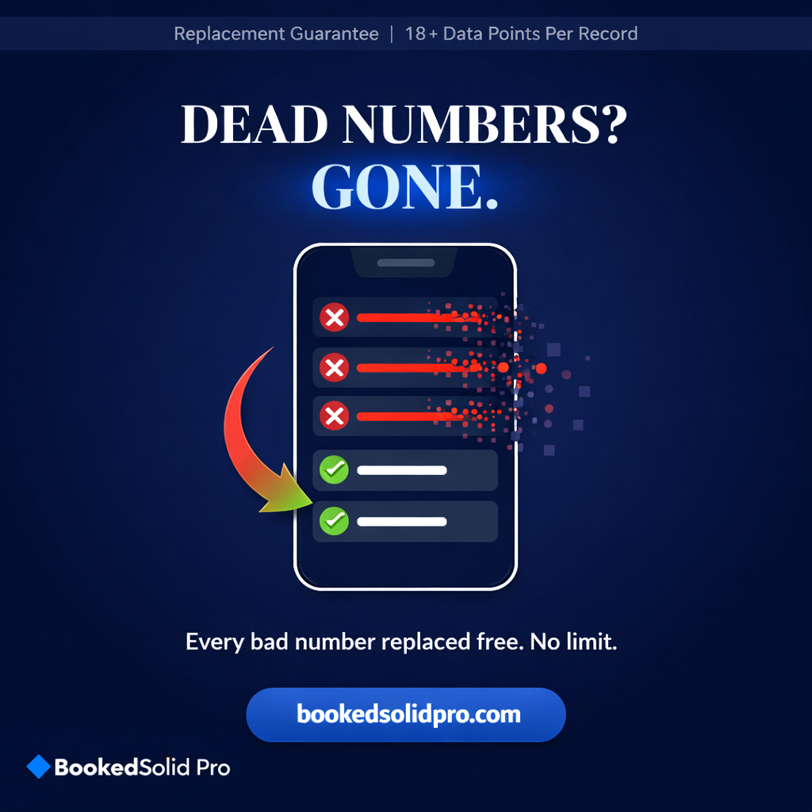
solidbookedpro.com/verified-lists
Dead Numbers? Gone.
Every bad number replaced free. No limit.
View Full Ad Copy
What percentage of your phone list actually picks up?
Javier found out the hard way. Runs a two-person wholesaling operation out of Houston. Spent $500 on a skip trace list.
Sat down at 9am with coffee and a script he'd practiced in the mirror.
❌ By noon, he'd dialed 247 numbers. 83 were disconnected. 41 went to people who'd never heard of the property. One woman yelled at him in Spanish.
His exact words on BiggerPockets: "It's been 2 or 3 hours I've been calling this list and it's riddled with dead numbers."
🚨 That's not a hustle problem. That's a data problem — and it's the same data everyone's selling.
✅ We verify every number before delivery. The ones that slip through? Replaced free. No limit. No questions.
⚡ While you're reading this, your team is dialing from that same unverified list.
💰 Every hour is another $200+ in payroll spent talking to nobody.
❌ That cost doesn't pause while you think about it.
👉 You can see what a verified list looks like for your market — takes about 60 seconds to build a sample.
AI Image Prompt (paste-ready)
BRAND STYLE: BookedSolid Pro — B2B data intelligence SaaS for professionals. COLOR PALETTE: Primary navy #0f172a, accent blue #2563eb, success green #22c55e, danger red #ef4444, navy text #0f172a, light gray #f1f5f9, medium gray #94a3b8. TYPOGRAPHY: Headlines use a modern serif font (like DM Serif Display) in bold weight. Body text uses a clean sans-serif (like Inter). LOGO: BookedSolid Pro in clean navy sans-serif with a small blue diamond icon before the text. OVERALL AESTHETIC: Whiteboard comparison. Hand-drawn feel on a real physical whiteboard. RENDERING STYLE: Photorealistic photograph of a whiteboard on an office wall. Dry-erase markers in red, blue, green, black. Handwritten text with natural imperfections. NOT digital. COMPOSITION (1080x1080 square — single static image, NOT a carousel, NOT multiple images): BACKGROUND: Photorealistic whiteboard surface. WHITEBOARD CONTENT: Title in blue marker underlined: DEAD NUMBERS? GONE. Two columns separated by thick black vertical line: LEFT (red marker): OTHER GUYS — 47% disconnected (red X) — No replacements (red X) — 3 data fields (red X) — Bottom: big red circle MONEY PIT RIGHT (green marker): BOOKEDSOLID PRO — Every bad number replaced FREE (green check) — 18 verified fields (green check) — DNC-scrubbed (green check) — Credit score + equity (green check) — Bottom: big green circle BOOKED CALLS Red marker lying bottom-left cap off. Green marker bottom-right cap off. Small solidbookedpro.com in blue marker at bottom center. BRAND: Small navy wordmark BookedSolid Pro with blue diamond.
AI Video Storyboard (paste-ready)
FORMAT: 1080x1920 (9:16 vertical) | 15 seconds | 30fps COLOR GRADE: High-contrast noir. Blacks crushed to #0a0a0a. Desaturated scenes 1-2, color blooms in scene 3. MUSIC: Low tension drone (scenes 1-2) -> clean piano resolution (scenes 3-4). SCENE 1 (0-3s): HOOK — QUESTION SLAM - Black screen (#000000). 0.5s hold. - At 0.5s: "Dead Numbers?" appears — DM Serif Display, 96pt, white (#ffffff), center-screen. - At 1.5s: Text glitches (RGB split, 4px offset, 3 frames) then snaps to red (#ef4444). - At 2.0s: "Gone." slams in below — DM Serif Display, 120pt, green (#22c55e), screen-shake (3px, 4 frames). - At 2.5s: Thin horizontal line (#2563eb, 2px) draws left-to-right beneath "Gone." - Sound: Deep bass hit on "Dead Numbers?" — sharp metallic clang on "Gone." SCENE 2 (3-7s): AGITATE — PHONE GRAVEYARD - Dissolve to phone screen mockup (dark UI, centered, 60% width). - Contact list scrolls upward. Each entry has: - Redacted name bar (gray #64748b) - Status rotating: "Disconnected" (red #ef4444), "Wrong Number" (orange #f59e0b), "Not in Service" (#b91c1c) - Small red X icon next to each - Counter overlay top-right: "Dead: 1... 14... 31... 47..." Inter Mono, 28pt, red (#ef4444). - At 5.5s: Counter freezes at "Dead: 347 / 500" - Text overlay bottom-third: "You're paying for all 500." — Inter 600, 22pt, white. - Sound: Rapid-fire disconnected tones (boop-boop-boop). Cash register on each tick. SCENE 3 (7-11s): PROOF — CLEAN SWEEP - Hard cut. Navy background (#0f172a). - Verified data card slides in from bottom — white card, rounded corners (16px), subtle shadow. - Card header: green checkmark + "VERIFIED RECORD" Inter 700, 14pt, green (#22c55e). - Fields populate one by one with blue glow animation (0.3s each): - "Phone: Active" (green dot) | "Alt Phone: Active" | "Email: Deliverable" - "Home Value: $285,000" | "Mortgage: 78% LTV" | "DNC: Clear" - Text overlay: "Every dead number replaced. Free." — DM Serif Display, 36pt, white. - Sound: Satisfying "ding" chime on each field. Ascending synth pad. SCENE 4 (11-15s): CTA — BRAND CARD - Smooth zoom-out to full brand layout on navy (#0f172a). - "BookedSolid Pro" logo centered — white with blue (#2563eb) diamond, 48pt. - Below: "Verified data. Dead numbers replaced." — Inter 500, 22pt, #94a3b8. - CTA pill: blue (#2563eb) rounded rectangle, "Build a Free List" white Inter 700, 20pt. Pulse animation. - Below pill: "60 seconds. No credit card." — Inter 400, 14pt, #64748b. - Sound: Confident resolution chord (major key). Subtle whoosh on pill.
1.2
Dead Numbers: Pain-Agitation
Sponsored
Bold Claim
Oliver (Metric+Magnitude+Timeframe)
70% of Your List Is Wasted.
40% of your list is disconnected. Another 30% aren't even the homeowner.
❌ Let that land.
Seven out of ten dials — gone before your closer even opens their mouth.
🚨 That's not a bad morning....
See more
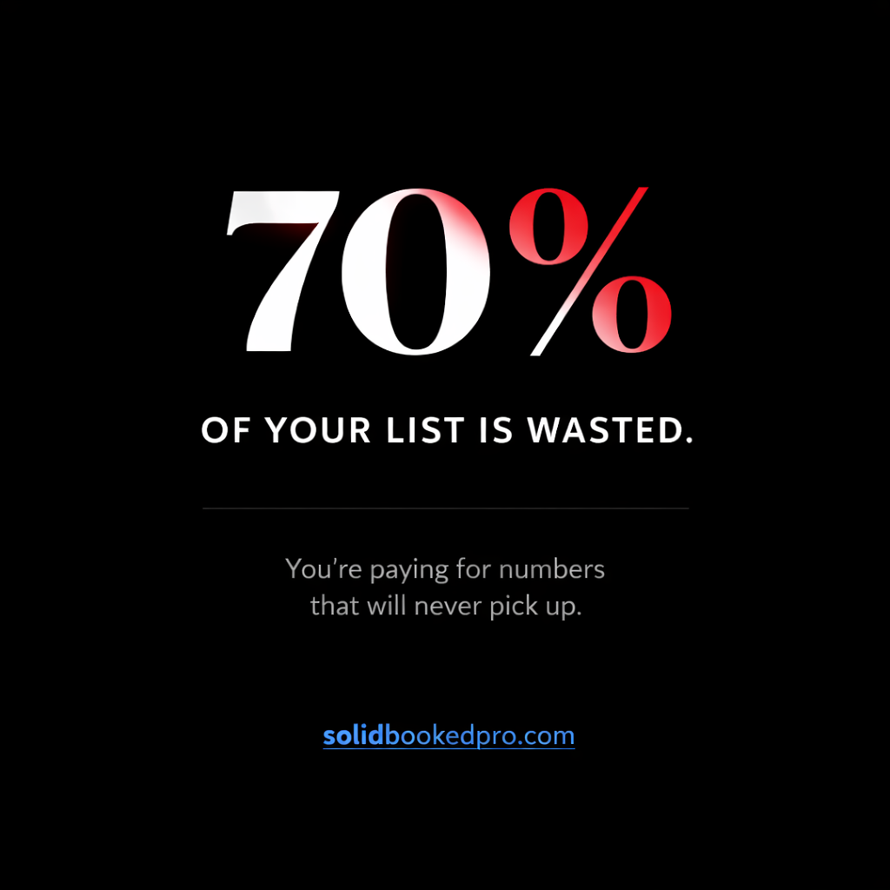
solidbookedpro.com/verified-lists
70% of Your List Is Wasted.
Every bad number replaced free. No cap.
View Full Ad Copy
40% of your list is disconnected. Another 30% aren't even the homeowner.
❌ Let that land.
Seven out of ten dials — gone before your closer even opens their mouth.
🚨 That's not a bad morning. That's every morning because your best rep just spent four hours talking to nobody.
👀 "Probably 40% are disconnected numbers and another 30% I end up calling people that have no connection to the property or owner." — Nick S., BiggerPockets
✅ Your team isn't underperforming. They're over performing — against data that's working against them.
➡️ And every day they do it is another day your competitor — the one with verified data — is closing the homeowners your team can't reach.
🔒 We verify every number before delivery. Every bad number gets replaced free. No cap.
👉 You can see what they'd be working with on a verified list — takes about 60 seconds.
AI Image Prompt (paste-ready)
BRAND STYLE: BookedSolid Pro — B2B data intelligence SaaS for professionals. COLOR PALETTE: Primary navy #0f172a, accent blue #2563eb, success green #22c55e, danger red #ef4444, navy text #0f172a, light gray #f1f5f9, medium gray #94a3b8. TYPOGRAPHY: Headlines use a modern serif font (like DM Serif Display) in bold weight. Body text uses a clean sans-serif (like Inter). LOGO: BookedSolid Pro in clean navy sans-serif with a small blue diamond icon before the text. OVERALL AESTHETIC: Bold text-only. Just massive typography on white — looks like a tweet, not an ad. Scroll-stopping. RENDERING STYLE: Pure typography on white background. No images, no illustrations, no product shots. Viral tweet screenshot aesthetic. COMPOSITION (1080x1080 square — single static image, NOT a carousel): BACKGROUND: Clean white #ffffff. TEXT (centered vertically): Line 1: 70% of your list in Inter 700 42pt #94a3b8 gray. Line 2: is already dead. in DM Serif Display 72pt #ef4444 red. Bold. 40px gap. Line 3: You are paying for ghosts. in Inter 500 24pt #64748b. BOTTOM: Thin horizontal line #e5e7eb 60% width centered. Below: BookedSolid Pro — Every bad number replaced free. Inter 600 16pt navy. solidbookedpro.com Inter 500 14pt #2563eb. NO images. NO icons. Text only.
AI Video Storyboard (paste-ready)
FORMAT: 1080x1920 (9:16 vertical) | 15 seconds | 30fps COLOR GRADE: Stark black-and-red for pain (scenes 1-2), transitions to navy/green for relief (scenes 3-4). MUSIC: Industrial tension pulse (scenes 1-2) -> ambient resolution (scenes 3-4). SCENE 1 (0-3s): HOOK — KINETIC STAT BOMB - Black screen (#000000). - At 0.3s: "70%" explodes onto screen — DM Serif Display, 200pt, red (#ef4444), centered. Scales from 300% to 100% with overshoot bounce. - At 1.2s: "of Your List" fades in below — Inter 600, 32pt, white. Typewriter effect. - At 2.0s: "Is Wasted." slams in — DM Serif Display, 72pt, white. Hard cut with 2px screen-shake. - Red line (#ef4444, 3px) underscores "Wasted." drawing left-to-right. - Sound: Heavy bass impact on "70%". Typewriter clicks. Slam on "Wasted." SCENE 2 (3-7s): AGITATE — PIE CHART DESTRUCTION - Centered pie chart on black. 70% fills red (#ef4444), 30% fills gray (#374151). - Labels: "Dead / Wrong / Disconnected" on red, "Actually Reachable" on gray. - At 4.5s: Red segment CRACKS — fracture lines (white, 1px). - At 5.5s: Dollar signs rain from red segment. Counter: "$2,100 wasted per list" — Inter Mono, 24pt, red. - At 6.5s: "Same provider. Same excuse. Every month." — Inter 500, 20pt, white. - Sound: Clock ticking during fill. Glass cracking. Coins dropping. SCENE 3 (7-11s): PROOF — CHART TRANSFORMATION - Pie chart morphs (0.8s): red shrinks to 5% sliver, green (#22c55e) fills 95%. - New labels: "Verified & Active" on green, "Replaced Free" on red sliver. - Stats flanking: "18 data points per record" | "4 contact channels" — Inter 500, 18pt, white. - "What if 95% of your list actually picked up?" — DM Serif Display, 32pt, white. - Sound: Reverse crack (healing). Rising synth. Confident chime. SCENE 4 (11-15s): CTA — BRAND CARD - Chart shrinks to top-center (30% size). Navy (#0f172a) background. - "BookedSolid Pro" logo — white with blue diamond, 44pt. - "95% connect rate or we replace them." — Inter 500, 20pt, #94a3b8. - CTA pill: blue (#2563eb), "Build a Free List" white Inter 700, 20pt. Pulse. - Sound: Clean resolution tone. Subtle bass warmth.
1.3
Dead Numbers: Pain-Agitation
Sponsored
Story
Tiana #6 (Timeline)
247 Dials. 83 Dead Numbers.
It's 9:14am. Javier sits down with his coffee, his script, and a $500 skip trace list from Propwire.
❌ 9:47am — 43 dials. 19 disconnected. 8 wrong people. One guy who's been dead since 2021.
❌...
See more
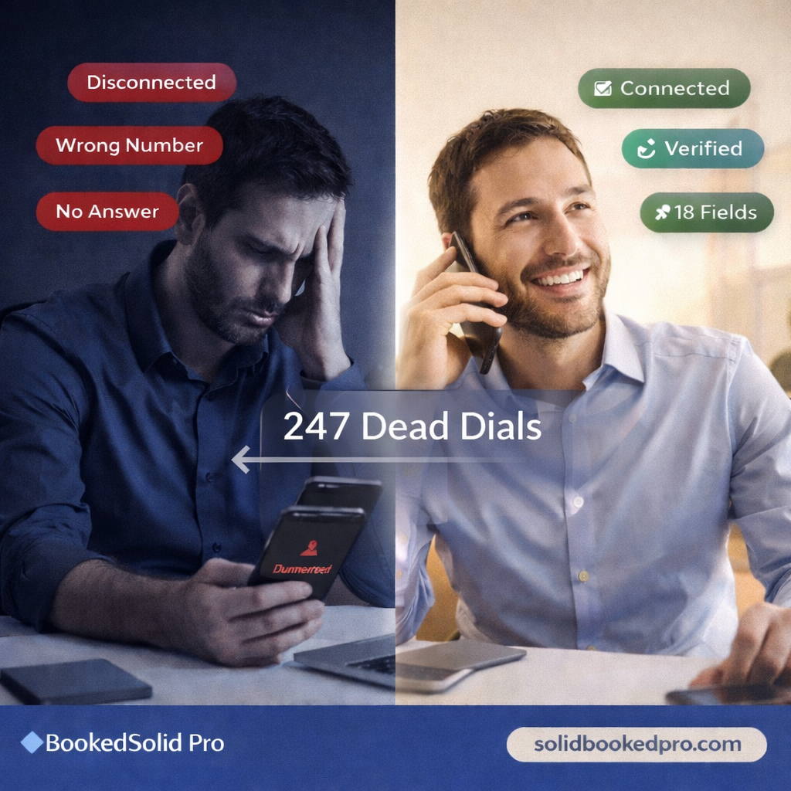
solidbookedpro.com/verified-lists
247 Dials. 83 Dead Numbers.
Same databases, same dead numbers — unless you verify first.
View Full Ad Copy
It's 9:14am. Javier sits down with his coffee, his script, and a $500 skip trace list from Propwire.
❌ 9:47am — 43 dials. 19 disconnected. 8 wrong people. One guy who's been dead since 2021.
❌ 11:30am — he stops counting the dead numbers.
😱 12:15pm — he posts on BiggerPockets: "Riddled with dead numbers. Is this normal?"
🚨 The comments say yes. That's the worst part. Everyone just accepts that a third of their money goes to dialing dead air.
➡️ He didn't have a hustle problem. He had a data problem. Same databases. Same stale records. Same results — no matter which provider's logo is on the invoice.
✅ We verify every number before delivery. Every bad number replaced free. No limit.
💰 Javier figured this out after burning $500 and a full day.
👉 You can figure it out in about 60 seconds — before your team burns through tomorrow's list too.
AI Image Prompt (paste-ready)
BRAND STYLE: BookedSolid Pro — B2B data intelligence SaaS for professionals. COLOR PALETTE: Primary navy #0f172a, accent blue #2563eb, success green #22c55e, danger red #ef4444, navy text #0f172a, light gray #f1f5f9, medium gray #94a3b8. TYPOGRAPHY: Headlines use a modern serif font (like DM Serif Display) in bold weight. Body text uses a clean sans-serif (like Inter). LOGO: BookedSolid Pro in clean navy sans-serif with a small blue diamond icon before the text. OVERALL AESTHETIC: Pain-to-outcome transformation. Split image dark-to-light showing frustration to relief. RENDERING STYLE: Photorealistic split composition. Left dark and frustrated (cool blue-gray tones), right bright and confident (warm well-lit). Soft diagonal blend between halves. Professional studio photography. COMPOSITION (1080x1080 square — single static image, NOT a carousel, NOT a motion graphic, NOT a video): LEFT HALF (pain — dark): Dark navy-gray gradient. Male professional late 30s business casual at desk, head in hand, phone showing Number Disconnected. Red badges floating: Disconnected, Wrong Number, No Answer. RIGHT HALF (outcome — light): Warm cream-white. Same professional now smiling, phone to ear, clearly in conversation. Green badges: Connected, Verified, 18 Fields. CENTER OVERLAY on diagonal: Arrow pointing left to right. 247 Dead Dials to 14 Booked Calls in Inter 700 20pt white with shadow. BOTTOM: Navy bar with BookedSolid Pro wordmark + solidbookedpro.com in white.
AI Video Storyboard (paste-ready)
AI VIDEO STORYBOARD — Ad 1.3 FORMAT: 9:16 vertical (1080x1920), 15 seconds, 30fps MOOD: Frustration to Relief MUSIC: Royalty-free, matches frustration to relief arc ── HOOK (0-3s) ────────────────────────── Close-up of phone screen showing Number Disconnected in red. Camera pulls back to reveal frustrated sales rep at desk with headset, staring at call log full of red X marks. Text overlay fades in: DEAD NUMBERS? in DM Serif Display, 800 weight, white, centered top 40%. AUDIO: Sharp drum hit. Tension strings. ── AGITATE (3-7s) ────────────────────────── Quick montage: three split-screen dials each showing DISCONNECTED flash red. Counter ticks up: 83 dead numbers. Rep coffee goes cold. Text: 83 dead numbers before lunch in Inter 600, 24pt, white with red underline. AUDIO: Tempo builds. Staccato percussion. ── PROOF (7-11s) ────────────────────────── Screen wipe to BookedSolid Pro dashboard. Verification badges pulse green on each record. Connect rate gauge animates from 34% to 72%. Text: 34% to 72% connect rate. Week one. in Inter 700, 28pt, white on navy. AUDIO: Uplifting synth pad. Relief tone. ── CTA (11-15s) ────────────────────────── Dashboard zooms out to show full verified list. Green checkmarks cascade down rows. BookedSolid Pro logo locks up center. Text: You can see what a verified list looks like for your zip code. in Inter 500, 20pt, white. Subtle blue glow. AUDIO: Resolves to clean tone. Confidence. ── CONDENSED SINGLE-SHOT PROMPT ────────────────────────── 15-second vertical video (1080x1920, 30fps). Color palette: navy #0f172a, blue #2563eb, green #22c55e, white. Typography: DM Serif Display headlines, Inter body. Mood arc: Frustration to Relief.
AI Video Storyboard (paste-ready)
SCENE 1 (0-3s): TEXT HOOK — Black screen.
- Words appear one at a time with a hard cut (no fade):
"$500" — white, DM Serif Display, 120pt, centered (appears at 0.0s)
"SKIP TRACE." — white, same font, 80pt, below (appears at 0.8s)
"3 HOURS." — white, same font, 80pt, below (appears at 1.4s)
"ZERO DEALS." — red (#ef4444), same font, 80pt, below (appears at 2.0s)
- Each word has a subtle camera-shake effect on appearance (2px random offset, 3 frames).
- At 2.5s, all text glitches (RGB split effect, 5px offset) then holds.
SCENE 2 (3-7s): PHONE SCREEN MOCKUP — Smooth zoom into a phone screen.
- Phone is a flat dark gray rectangle with rounded corners, centered on black bg.
- Screen shows a call log interface — dark UI, rows of contact entries.
- Entries scroll upward automatically. Each entry has:
- A name (blurred/redacted gray bar)
- A status badge: "Disconnected" (red bg), "Wrong Number" (orange bg), "Not in Service" (dark red bg)
- A small phone icon with red X
- The entries scroll faster and faster. A counter in top-right shows: "Dead: 47... 48... 49..." in red monospace font (Inter Mono, 24pt).
- Subtle sound design cue: each scroll tick has a soft "buzz" tone.
SCENE 3 (7-11s): FORUM POST — Cut to a stylized social media post.
- White card on dark gray (#1e293b) background.
- Post format mimics BiggerPockets/Reddit:
- Username bar: gray circle avatar + "frustrated_investor" in Inter 600, 16pt
- Post text: "Spent $500 on a skip trace. Riddled with dead numbers. Anyone else?" in Inter 400, 20pt, white
- Below: 3 reply snippets stacked:
- "Same here. Every time." (12 upvotes icon)
- "Normal. Welcome to the industry." (8 upvotes)
- "Try a different provider." then struck through, with "(same result)" appended in gray
- Card has subtle drop shadow (0 4px 24px rgba(0,0,0,0.5)).
SCENE 4 (11-15s): GREEN TRANSITION + BRAND CARD
- Hard wipe from left: green (#22c55e) curtain sweeps across screen.
- Reveals brand card on navy (#0f172a):
- "BookedSolid Pro" logo centered, white, with blue diamond, 48pt
- Below: "Every dead number replaced. Free." in Inter 500, 24pt, white
- Below: "18+ data points per record." in Inter 400, 18pt, #94a3b8
- CTA pill: blue (#2563eb) rounded rectangle, "Build a Free List" in white Inter 600, 20pt
- Subtle particle effect: small white dots float upward like data points ascending.
1.4
Dead Numbers: Pain-Agitation
Sponsored
Pattern Interrupt
Fraser #1 (Expose the Lie) + Jared (Betrayal)
They Know. They Sell Anyway.
Your list provider already knows 40% of their numbers are disconnected.
They know it when they compile the file. They know it when they email it to you. They know it when they charge your card.
...
See more
They Know. They Sell Anyway.
Frustration / Relief
Static 1080x1350
Format C
solidbookedpro.com/verified-lists
They Know. They Sell Anyway.
Same stale data pools. We verify before delivery.
View Full Ad Copy
Your list provider already knows 40% of their numbers are disconnected.
🚨 They know it when they compile the file. They know it when they email it to you. They know it when they charge your card.
❌ They sell it anyway. Because you'll blame your team before you blame the data. Because you'll buy another list next month. Because "that's just how data is" has become the industry's most profitable lie.
👀 "The data sources used by nearly everyone are generally stale. They're ALL accessing the same data pools and will get close to the same results." — John M., BiggerPockets
🛑 Every provider. Same databases. Same dead numbers. Same shrug when you complain.
✅ We verify every number before it reaches your team. 🔒 And if any slip through — replaced free. No limit. No excuses.
⚡ Your provider is compiling next month's file from the same stale databases right now. 💰 Same dead numbers. Same charge to your card. 👉 Unless you see the difference first — takes about 60 seconds.
AI Image Prompt (paste-ready)
BRAND STYLE: BookedSolid Pro — B2B data intelligence SaaS for professionals. COLOR PALETTE: Primary navy #0f172a, accent blue #2563eb, success green #22c55e, danger red #ef4444, navy text #0f172a, light gray #f1f5f9, medium gray #94a3b8. TYPOGRAPHY: Headlines use a modern serif font (like DM Serif Display) in bold weight. Body text uses a clean sans-serif (like Inter). LOGO: BookedSolid Pro in clean navy sans-serif with a small blue diamond icon before the text. OVERALL AESTHETIC: Bold text-only dark. Stark black background with white and red text. Provocative accusation. Scroll-stopping. RENDERING STYLE: Dark typography poster. Solid black background, high-contrast text. No images. Protest poster or editorial statement feel. COMPOSITION (1080x1080 square — single static image, NOT a carousel): BACKGROUND: Solid black #000000. TEXT (centered): Line 1: They know in DM Serif Display 64pt white. Line 2: 47% are dead. in DM Serif Display 64pt white. Line 3 (24px gap): They sell anyway. in DM Serif Display 72pt #ef4444 red. 48px gap. Line 4: We replace every one. Free. in Inter 600 22pt #22c55e green. BOTTOM 48px up: BookedSolid Pro white Inter 600 14pt. solidbookedpro.com below #2563eb 13pt. NO images. NO icons. Text only.
AI Video Storyboard (paste-ready)
FORMAT: 1080x1920 (9:16 vertical) | 15 seconds | 30fps COLOR GRADE: Documentary expose feel. Desaturated, high contrast. Grainy film texture overlay. MUSIC: Investigative journalism tension (low strings, sparse piano) -> resolution. SCENE 1 (0-3s): HOOK — BETRAYAL REVEAL - Black screen (#000000). Slight film grain overlay. - At 0.3s: "THEY KNOW." — DM Serif Display, 88pt, white, left-aligned (80px margin), 35% from top. - At 1.3s: "THEY SELL ANYWAY." below (16px gap) — same font/size. "ANYWAY" pulses red (#ef4444) glow once. - At 2.5s: Thin white horizontal rule (1px, 60% width) draws from left. - Subtle handheld camera drift (2px sine wave). - Sound: Low ominous drone. Single minor piano note on "ANYWAY." SCENE 2 (3-7s): AGITATE — LEAKED DOCUMENT - Mock internal document on crumpled paper texture (#f5f0e8). - Redacted company header. Body text types out line by line: - "Average data freshness: 6-14 months" - "Estimated dead number rate: 38-42%" - "Customer churn expectation: built into pricing" - Key phrases get yellow (#fef08a) marker highlight as they appear. - At 6.0s: Red "EXPOSED" stamp rotates in (15 degrees, off-center) — red border/text, 64pt. - Pull-quote: "Same data pools. Different logo." — Inter 600 italic, 20pt, #ef4444. - Sound: Paper rustling. Typewriter clicks. Rubber stamp THUD. SCENE 3 (7-11s): PROOF — CLEAN ALTERNATIVE - Blue (#2563eb) horizontal wipe left-to-right. Navy (#0f172a) background. - Three verification stages animate in sequence: - "Source Verified" — green checkmark + progress bar fills 100% - "Line Tested" — green checkmark + bar fills - "Delivered Fresh" — green checkmark + bar fills - Each stage 0.8s. Green pulse on completion. - Right side: "Multi-source. Real-time. Not recycled." — Inter 600, 20pt, white. - Sound: Three ascending verification tones. Digital processing hum. SCENE 4 (11-15s): CTA — BRAND CARD - Dashboard fades to 30% opacity. Brand card centers. - "BookedSolid Pro" logo — white with blue diamond, 48pt. - "See what verified data actually looks like." — Inter 500, 20pt, #94a3b8. - CTA pill: blue (#2563eb), "Build a Free List" white Inter 700, 20pt. Pulse. - Lock icon (#22c55e) + "Your territory. Your data. No shared pools." — Inter 400, 14pt, #64748b. - Sound: Resolving chord. Authority. Quiet confidence.
1.5
Dead Numbers: Pain-Agitation
Sponsored
Direct Call-Out
Fraser #8 (Demographic Call-Out)
No More Paying for Dead Numbers.
🚨 Attention: teams buying homeowner phone lists for outbound calling.
You've accepted 30-50% waste as "normal." You budget for dead numbers the way you budget for office supplies — it's just a line...
See more

solidbookedpro.com/verified-lists
No More Paying for Dead Numbers.
Your budget should buy conversations, not dead air.
View Full Ad Copy
🚨 Attention: teams buying homeowner phone lists for outbound calling.
You've accepted 30-50% waste as "normal." You budget for dead numbers the way you budget for office supplies — it's just a line item now.
But think about what that actually means.
❌ If your team dials 10,000 numbers this week, 3,000 to 5,000 of those calls go to dead air, wrong people, or voicemails that haven't been checked since 2019.
💰 That's not a rounding error. That's half your dialing budget buying nothing.
👀 "Those lists are sold and resold numerous times over and over again for the same data." — BiggerPockets forum
➡️ Your budget should buy conversations — not the sound of your closer sighing into a headset.
✅ We verify every number before delivery.
🔒 Every bad number gets replaced. No limit. No questions.
🔥 This week alone, your budget will buy another 3,000 to 5,000 calls to dead air — unless you change the data.
👉 You can see what different looks like in about 60 seconds.
AI Image Prompt (paste-ready)
BRAND STYLE: BookedSolid Pro — B2B data intelligence SaaS for professionals. COLOR PALETTE: Primary navy #0f172a, accent blue #2563eb, success green #22c55e, danger red #ef4444, navy text #0f172a, light gray #f1f5f9, medium gray #94a3b8. TYPOGRAPHY: Headlines use a modern serif font (like DM Serif Display) in bold weight. Body text uses a clean sans-serif (like Inter). LOGO: BookedSolid Pro in clean navy sans-serif with a small blue diamond icon before the text. OVERALL AESTHETIC: Bold color background with centered product card. Electric blue background that stops the scroll. Clean white card showing product. RENDERING STYLE: Flat graphic design with bold color blocking. Electric blue bg, white card centered, benefit pills. Modern SaaS marketing — Notion or Linear ad style. Clean minimal punchy. COMPOSITION (1080x1080 square — single static image, NOT a carousel): BACKGROUND: Solid electric blue #2563eb, subtle radial gradient lighter center. TOP LABEL: White pill badge centered: DEAD NUMBERS? in Inter 800 12pt #2563eb on white. CENTER CARD (680x400px white border-radius 16px shadow): Phone list 5 rows: Row 1: James Mitchell | (404) 555-1234 | Connected green Row 2: Linda Torres | (713) 555-5678 | Connected green Row 3: Marcus Brown | (312) 555-0000 | Replaced to (312) 555-9012 strikethrough old green new Row 4: Sarah Kim | (602) 555-3456 | Connected green Row 5: David Patel | (214) 555-7890 | Replaced to (214) 555-2345 Below list: Every dead number replaced. No limit. Inter 600 14pt navy. BOTTOM: No More Paying for Dead Numbers. DM Serif Display 36pt white centered. CTA pill white bg solidbookedpro.com #2563eb Inter 700 16pt.
AI Video Storyboard (paste-ready)
FORMAT: 1080x1920 (9:16 vertical) | 15 seconds | 30fps COLOR GRADE: Clean, authoritative. Navy-dominant with high contrast accents. MUSIC: Percussive determination (scenes 1-2) -> triumphant resolution (scenes 3-4). SCENE 1 (0-3s): HOOK — SHIELD DECLARATION - Navy background (#0f172a). - At 0.3s: Shield icon outline draws itself center — blue (#2563eb) stroke, 2px, 120x140px. 0.8s. - At 1.2s: Inside shield, red X (#ef4444) with slash through dollar sign. - At 1.8s: "NO MORE PAYING" above shield — DM Serif Display, 56pt, white. - At 2.3s: "FOR DEAD NUMBERS." below shield — DM Serif Display, 56pt, white. "DEAD" is red (#ef4444). - Sound: Metallic scraping on shield draw. Bass drop on text. SCENE 2 (3-7s): AGITATE — CALCULATOR OF WASTE - Black (#000000). Calculator interface (flat design, centered). - Numbers type in sequence: - "10,000 records x $0.15 = $1,500" — Inter Mono, 24pt, white - "- 4,000 dead = wasted" — red (#ef4444) - "- 2,000 wrong person = wasted" — red - "= 4,000 usable ($0.38 each)" — amber (#f59e0b) - At 5.5s: Red strip: "You're paying $0.15. You're getting $0.38." — Inter 700, 28pt, white on red. - "Every. Single. Month." — Inter 600, 20pt, #94a3b8, each word 0.3s apart. - Sound: Calculator clicks. Error buzzer on "wasted" lines. Cash register. SCENE 3 (7-11s): PROOF — THE GUARANTEE - Navy (#0f172a). Guarantee badge/seal animates in — circular, blue (#2563eb) border, white center. - Seal text: "DEAD NUMBER REPLACEMENT GUARANTEE" Inter 800, 14pt, circular. - Center: green (#22c55e) checkmark, 64px. - Three lines staggered below: - "Dead number? Replaced." — green dot, Inter 600, 22pt, white - "Wrong person? Replaced." — green dot - "No questions. No extra cost." — green dot - Sound: Seal stamp. Three "ding" confirmations. Music swell. SCENE 4 (11-15s): CTA — BRAND CARD - Seal shrinks to top-right (40px, 30% opacity). - "BookedSolid Pro" logo — white with blue diamond, 48pt. - "Stop paying for data that doesn't pick up." — Inter 500, 20pt, #94a3b8. - CTA pill: blue (#2563eb), "Build a Free List" white Inter 700, 20pt. Pulse. - "See your replacement guarantee." — Inter 400, 14pt, #64748b. - Sound: Confident major-key resolution.
2
Calling Blind: Aspirational
Emotion: Hope / Empowerment | 5 hook variations
2.1
Calling Blind: Aspirational
Sponsored
Question
Tiana #4 (Pain Point?)
Know Before You Call.
Would you pitch an $80K solar system to someone who can't finance a window unit?
❌ Of course not. But that's exactly what Marcus's team does 200 times a day. They dial a number, hear "hello," and...
See more
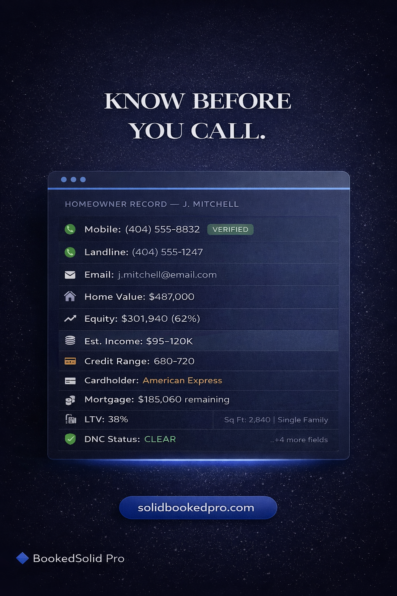
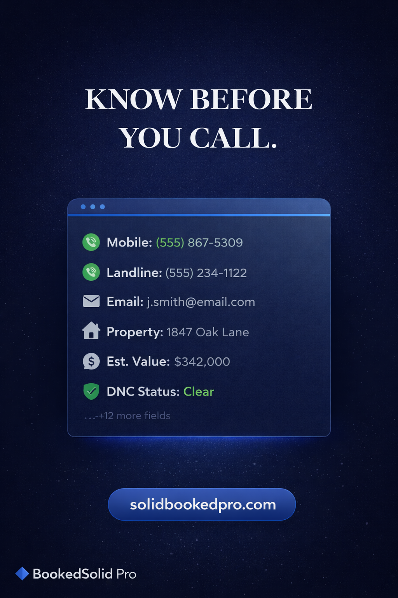
solidbookedpro.com/smart-data
Know Before You Call.
Pre-qualify every homeowner before you dial.
View Full Ad Copy
Would you pitch an $80K solar system to someone who can't finance a window unit?
❌ Of course not. But that's exactly what Marcus's team does 200 times a day. They dial a number, hear "hello," and have zero idea if this homeowner earns $40K or $400K. If their roof is 2 years old or 25. If they own the house or rent the back unit.
🎯 Every call is a coin flip.
💰 And Marcus is paying $22/hour for each flip.
✅ What if your closer already knew the home value, income range, and credit tier before they picked up the phone?
🔥 Not a cold call — a warm handshake.
📊 We give you a complete profile on every homeowner — income, credit range, home value, home age, and 14 more data points.
⚡ Your team pre-qualifies before the first dial.
🚨 Right now, three other companies are calling the same homeowners Marcus is calling. One of them already knows the home value, income range, and credit tier.
➡️ That company isn't guessing — and they're closing while Marcus is still qualifying.
👉 You can level the playing field in about 60 seconds — build a sample list for your territory.
AI Image Prompt (paste-ready)
BRAND STYLE: BookedSolid Pro — B2B data intelligence SaaS for professionals. COLOR PALETTE: Primary navy #0f172a, accent blue #2563eb, success green #22c55e, danger red #ef4444, navy text #0f172a, light gray #f1f5f9, medium gray #94a3b8. TYPOGRAPHY: Headlines use a modern serif font (like DM Serif Display) in bold weight. Body text uses a clean sans-serif (like Inter). LOGO: BookedSolid Pro in clean navy sans-serif with a small blue diamond icon before the text. OVERALL AESTHETIC: Photorealistic product hero with radiating benefit callouts. Clean light bg, laptop showing BSP dashboard, floating benefit labels with dotted lines. RENDERING STYLE: Premium product photography. Photorealistic MacBook on light marble desk, screen showing data dashboard. Floating pill callouts connected by thin curved dotted lines. Apple product photography meets data SaaS. Natural studio lighting. COMPOSITION (1080x1080 square — single static image, NOT a carousel): BACKGROUND: Light warm gray #f8f9fa clean surface. CENTER: MacBook Pro angled 30deg showing homeowner record: James Mitchell, (404) 555-1234 verified, Credit Score 710, Equity $187,000, Mortgage $243,000, Property Value $430,000, Cardholder Amex Platinum. FLOATING CALLOUTS (pills with dotted lines): Top-left: Credit Score Range (navy pill white text) Top-right: Verified Phone (green pill) Right: Home Equity (blue pill) Bottom-right: Cardholder Type (navy pill) Bottom-left: 18 Fields Total (green pill) TOP: KNOW BEFORE YOU CALL in DM Serif Display 42pt navy centered. BOTTOM: Navy bar — BookedSolid Pro left, solidbookedpro.com right, white.
AI Video Storyboard (paste-ready)
FORMAT: 1080x1920 (9:16 vertical) | 15 seconds | 30fps COLOR GRADE: Cool intelligence aesthetic. Navy base, blue data accents, green confirmations. MUSIC: Subtle tech pulse (scene 1) -> rising anticipation (scene 2) -> confident groove (scenes 3-4). SCENE 1 (0-3s): HOOK — DATA CARD REVEAL - Navy background (#0f172a). - At 0.3s: Small dim data card floats in from bottom — gray (#374151), 200x120px, 3 redacted fields. - "STANDARD DATA" label — Inter 600, 10pt, gray badge. - At 1.5s: "Know Before You Call." types across top — DM Serif Display, 64pt, white. Cursor blink. - At 2.5s: Gray card begins to glow blue (#2563eb) at edges — pulsing. - Sound: Paper slide. Typing clicks. Rising electronic tone. SCENE 2 (3-7s): AGITATE / TRANSFORM — DOSSIER EXPANSION - Gray 3-field card EXPANDS (1.2s) into full dossier — white bg, blue (#2563eb) left border, 4px. - 18 fields cascade in from right (0.2s stagger each): - Credit Range: 680-720 | Income: $85K | Home Value: $312,000 - Home Age: 22 years | Mortgage: $189K | LTV: 61% - Equity: $123,000 | DNC: Clear | Mobile: Verified - Landline: Verified | Email: Deliverable | Address: Current - Counter top-right: "3... 6... 9... 12... 15... 18" — Inter Mono, 20pt, blue. - At 6.5s: "18 DATA POINTS" badge pulses green (#22c55e). - Sound: Digital loading clicks. Soft "pop" per field. Rising anticipation. SCENE 3 (7-11s): PROOF — THE CALL SCENARIO - Split screen horizontal. Top: dossier card (compressed). Bottom: navy. - Conversation simulation: - Blue bubble (right): "I see your home is 22 years old with strong equity..." - Green bubble (left): "How did you know that?" - Blue bubble: "We specialize in homes just like yours." - Each bubble 0.6s delay. Typing indicator dots before each. - "Intelligence. Not guesswork." — DM Serif Display, 28pt, white. - Sound: Phone dialing. Conversation ambience. Confident music. SCENE 4 (11-15s): CTA — BRAND CARD - Conversation fades. Navy (#0f172a). - "BookedSolid Pro" logo — white with blue diamond, 48pt. - "18 data points. Before the first ring." — Inter 500, 20pt, #94a3b8. - CTA pill: blue (#2563eb), "Build a Free List" white Inter 700, 20pt. Pulse. - "See a sample dossier for your zip code." — Inter 400, 14pt, #64748b. - Sound: Confident piano resolution. Single clean chime.
2.2
Calling Blind: Aspirational
Sponsored
Bold Claim
Oliver (Metric+Magnitude)
Full Dossier. Zero Guesswork.
Most list providers hand you a name, phone number, and address. Then wish you luck.
❌ That's like sending your best closer into a negotiation blindfolded. They've got the script. They've got the...
See more
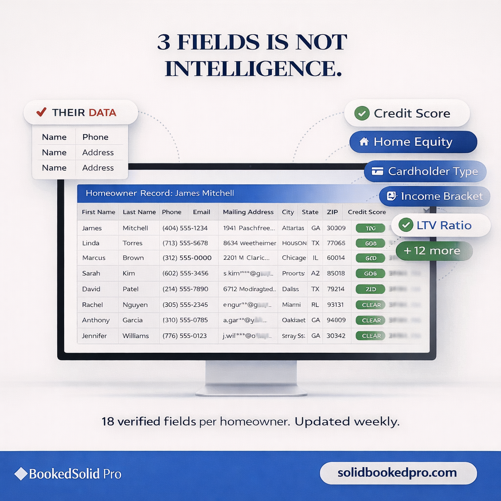
solidbookedpro.com/smart-data
Full Dossier. Zero Guesswork.
Know who you're calling before you dial.
View Full Ad Copy
Most list providers hand you a name, phone number, and address. Then wish you luck.
❌ That's like sending your best closer into a negotiation blindfolded. They've got the script. They've got the confidence. But they have no idea who they're talking to — and every "hello" is a guessing game.
✅ Imagine instead: your rep picks up the phone and already knows the homeowner's roof is 23 years old, their home is worth $380K, they earn $95K, and their credit score puts them in financing range.
🔥 That's not a cold call. That's a conversation that starts at "yes."
📊 We deliver a full dossier on every homeowner — 18+ data points including credit range, income level, home value, home age, and more. 📞 Plus up to 4 ways to reach them.
👉 You can see what that dossier looks like for your territory — build a sample in about 60 seconds.
AI Image Prompt (paste-ready)
BRAND STYLE: BookedSolid Pro — B2B data intelligence SaaS for professionals. COLOR PALETTE: Primary navy #0f172a, accent blue #2563eb, success green #22c55e, danger red #ef4444, navy text #0f172a, light gray #f1f5f9, medium gray #94a3b8. TYPOGRAPHY: Headlines use a modern serif font (like DM Serif Display) in bold weight. Body text uses a clean sans-serif (like Inter). LOGO: BookedSolid Pro in clean navy sans-serif with a small blue diamond icon before the text. OVERALL AESTHETIC: Lifestyle photo with floating benefit tags. Full-bleed photorealistic lifestyle shot with floating UI benefit tags overlaid. UGC-inspired. RENDERING STYLE: Photorealistic lifestyle photography with overlaid UI elements. Warm natural lighting. Floating tags look like modern app interface layered over photo — rounded rectangles with shadows. COMPOSITION (1080x1080 square — single static image, NOT a carousel): BACKGROUND: Full-bleed photo of male professional early 40s business casual navy blazer sitting at modern desk, slight confident smile, looking at monitor showing data. Natural window light. FLOATING TAGS (semi-transparent white bg navy text): Near monitor: Full Dossier (white pill navy text) Above head: Zero Guesswork (white pill green border) Left: 18 Data Fields (blue pill white text) Bottom-right: Credit Equity Phone DNC (white pill navy text smaller) Near phone: Verified Numbers (green pill) TOP BANNER: Semi-transparent navy strip: FULL DOSSIER. ZERO GUESSWORK. Inter 800 24pt white. BOTTOM: solidbookedpro.com Inter 600 16pt navy. Blue diamond BookedSolid Pro.
AI Video Storyboard (paste-ready)
FORMAT: 1080x1920 (9:16 vertical) | 15 seconds | 30fps COLOR GRADE: Split editorial — left desaturated/gray, right full color with blue accents. MUSIC: Uncertainty ambience (scene 1) -> clarity synth (scene 2) -> editorial confidence (scenes 3-4). SCENE 1 (0-3s): HOOK — SPLIT COMPARISON - Screen splits vertically with thin white line (2px). - LEFT (gray #1e293b): "BEFORE" header (red #ef4444). Dim card, 3 fields with red question marks. - RIGHT (navy #0f172a): "AFTER" header (green #22c55e). Blue particles floating. - Centered overlay: "Full Dossier. Zero Guesswork." — DM Serif Display, 56pt, white. - Sound: Record scratch (left). Anticipation tone (right). SCENE 2 (3-7s): AGITATE — SIDE-BY-SIDE FILL - LEFT stays static — 3 sad fields with red "?" annotations: "Income? ???" "Home value? ???" "DNC? ???" - Counter below left: "Conversion rate: ~12%" red, Inter 500, 16pt. - RIGHT: 18-field dossier builds field by field (0.15s per field) with blue glow and tick sound. - Fields organized: Contact | Property | Financial | Compliance. - Counter below right: "Conversion rate: ~34%" green (#22c55e). - At 6.5s: Dividing line pulses blue, right side expands 5%. - Sound: Error buzzer (left). Digital build (right). Rising tone. SCENE 3 (7-11s): PROOF — DOSSIER CLOSE-UP - Left slides off-screen. Right takes full width. - Complete dossier card enlarges (80% width, white on navy). - Magnifying glass icon sweeps card, highlighting: - "Equity: $142K" — green highlight box - "Home Age: 19 years" — green highlight - "Mobile: Verified + Active" — green highlight - "Every field your closer needs. Before they dial." — Inter 600, 20pt, white. - Corner: "vs 3 fields" crossed out red, strikethrough. - Sound: Magnifying glass whoosh. Three dings. Confident pad. SCENE 4 (11-15s): CTA — BRAND CARD - Dossier shrinks to thumbnail top-center. - "BookedSolid Pro" logo — white with blue diamond, 48pt. - "Full intelligence on every homeowner." — Inter 500, 20pt, #94a3b8. - CTA pill: blue (#2563eb), "Build a Free List" white Inter 700, 20pt. Pulse. - Sound: Editorial confidence chord.
2.3
Calling Blind: Aspirational
Sponsored
Story
Hook #1 (My problem was X, product saved me)
Same Team. Better Targets.
Ray runs a roofing company in Charlotte. 14 employees. Good closers. Good crews.
❌ But his call team was grinding 200 dials a day off a basic list — name and phone number. No idea if the roof was 5...
See more
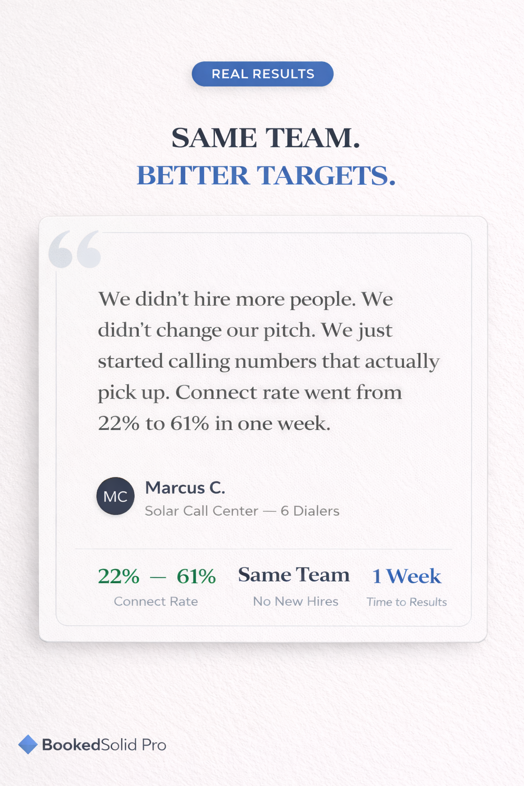
solidbookedpro.com/smart-data
Same Team. Better Targets.
Filter by what matters before you build the list.
View Full Ad Copy
Ray runs a roofing company in Charlotte. 14 employees. Good closers. Good crews.
❌ But his call team was grinding 200 dials a day off a basic list — name and phone number. No idea if the roof was 5 years old or 25. No idea if the homeowner could afford a $15K replacement or was behind on their mortgage.
😱 One afternoon, his top closer — a woman who'd been with him six years — walked into his office and said, "Ray, I'm wasting my time. I can feel it."
🎯 He started filtering: home age over 20 years, home value over $200K, square footage over 2,000. Same team. Same script. Same phones.
✅ The difference wasn't more calls. It was better calls — to homeowners who actually needed a roof and could actually pay for one.
🔥 His closer stayed. But she told him later: she'd already been looking.
🚨 Bad data doesn't just cost you calls — it costs you the people making them.
💰 And replacing a good closer takes months.
👉 Replacing bad data takes about 60 seconds.
AI Image Prompt (paste-ready)
BRAND STYLE: BookedSolid Pro — B2B data intelligence SaaS for professionals. COLOR PALETTE: Primary navy #0f172a, accent blue #2563eb, success green #22c55e, danger red #ef4444, navy text #0f172a, light gray #f1f5f9, medium gray #94a3b8. TYPOGRAPHY: Headlines use a modern serif font (like DM Serif Display) in bold weight. Body text uses a clean sans-serif (like Inter). LOGO: BookedSolid Pro in clean navy sans-serif with a small blue diamond icon before the text. OVERALL AESTHETIC: Person with handwritten marker callouts. Photorealistic portrait with casual hand-drawn annotations. Relatable, human, not corporate. RENDERING STYLE: Photorealistic portrait with hand-drawn Sharpie annotations. Slightly imperfect, organic curves, hand-drawn arrows. Mix of black and colored marker. NOT clean digital text. COMPOSITION (1080x1080 square — single static image, NOT a carousel): BACKGROUND: Soft cream #f5f0e8 studio backdrop. CENTER: Professional woman mid-30s friendly smile business casual white button-down sleeves rolled, gesturing toward laptop screen. Confident approachable. HANDWRITTEN CALLOUTS (marker-style with hand-drawn arrows): Arrow to screen: knows credit score BEFORE calling (black marker) Arrow to smile: closes 3x more deals (green marker) Arrow to phone: never wastes a dial (blue marker) Circled near head: same team better targets (red marker circled) BOTTOM STRIP: White bar 80px. Left: BookedSolid Pro navy wordmark blue diamond. Right: Blue pill CTA solidbookedpro.com.
AI Video Storyboard (paste-ready)
FORMAT: 1080x1920 (9:16 vertical) | 15 seconds | 30fps COLOR GRADE: Warm professional (scene 1) -> clean data visualization (scenes 2-3) -> navy brand (scene 4). MUSIC: Conversational warmth (scene 1) -> uplifting build (scenes 2-3) -> clean resolution (scene 4). SCENE 1 (0-3s): HOOK — TESTIMONIAL CARD - White background (#f8fafc). Social proof card slides up. - Card (80% width, rounded 16px): Quote marks icon blue (#2563eb), 36pt. - "We didn't change our team. We changed our targeting." — DM Serif Display, 36pt, navy. - "— Ray, Charlotte NC" — Inter 500, 16pt, #64748b. 5 green stars. - "Same Team. Better Targets." types below — Inter 800, 24pt, blue (#2563eb). - Sound: Subtle whoosh. Warm ambient tone. SCENE 2 (3-7s): AGITATE — BEFORE/AFTER TARGETING - Navy (#0f172a). BEFORE (3-4s): Map mockup, scattered red pins. "Old Targeting: Every homeowner in 28203" - At 4.5s: Pins disappear with red "poof." Filter panel slides in: - "Home Age: 20+ years" (toggle ON, green) - "Home Value: $200K+" (toggle ON, green) - "Credit: 640+" (toggle ON, green) - AFTER (5.5-7s): Remaining pins turn green, concentrated. "New Targeting: Qualified homeowners only" - Counter: "4,200 leads -> 890 qualified" — Inter Mono, 20pt, white. - Sound: Pops (pins). Clicks (toggles). Ascending tone on green. SCENE 3 (7-11s): PROOF — RESULTS METRICS - Navy. Three metric cards stack vertically (80% width): - "Connect Rate" | "38% -> 67%" | green up-arrow, progress bar - "Appointments/Week" | "4 -> 11" | green up-arrow - "Same Closers" | "Same 3 reps" | blue checkmark - Each card 0.5s stagger, sliding from right. - "Same team. Same scripts. Different data." — DM Serif Display, 28pt, white. - Sound: Three ascending chimes. Uplifting synth build. SCENE 4 (11-15s): CTA — BRAND CARD - Metric cards fade to 20% opacity. - "BookedSolid Pro" logo — white with blue diamond, 48pt. - "Filter by what matters before you build the list." — Inter 500, 20pt, #94a3b8. - CTA pill: blue (#2563eb), "Build a Free List" white Inter 700, 20pt. Pulse. - Sound: Warm resolution. Piano + pad.
2.4
Calling Blind: Aspirational
Sponsored
Pattern Interrupt
Tiana #11 (Not X, It's Y)
It's Not a List. It's a Phone Book.
Your list provider is selling you a phone book with a spreadsheet skin.
Name. Number. Address. That's it. The same three fields Alexander Graham Bell would've used. In 2026.
...
See more
It's Not a List. It's a Phone Book.
Hope / Empowerment
Static 1080x1080
Format C
solidbookedpro.com/smart-data
It's Not a List. It's a Phone Book.
Name + phone + address is not intelligence.
View Full Ad Copy
Your list provider is selling you a phone book with a spreadsheet skin.
❌ Name. Number. Address. That's it. The same three fields Alexander Graham Bell would've used. In 2026.
🛑 You wouldn't send your best closer into a $15,000 conversation with zero context. But that's exactly what's happening — 200 times a day. They pick up the phone, hear "hello," and start guessing. 💰 Every call is a shot in the dark, and your payroll is funding the ammunition.
✅ What if every dial came with the full picture? 📊 Home value. Income range. Credit tier. Home age. Square footage. Mortgage status. DNC flag. 📞 And three backup channels if the phone doesn't connect.
🔥 That's not a list. That's intelligence. ➡️ And every day your team calls without it, the companies who HAVE it are having better conversations with the same homeowners.
👀 The homeowner who needs your service today is getting called by someone with the full picture. 👉 You can have it too — build a sample in about 60 seconds.
AI Image Prompt (paste-ready)
BRAND STYLE: BookedSolid Pro — B2B data intelligence SaaS for professionals. COLOR PALETTE: Primary navy #0f172a, accent blue #2563eb, success green #22c55e, danger red #ef4444, navy text #0f172a, light gray #f1f5f9, medium gray #94a3b8. TYPOGRAPHY: Headlines use a modern serif font (like DM Serif Display) in bold weight. Body text uses a clean sans-serif (like Inter). LOGO: BookedSolid Pro in clean navy sans-serif with a small blue diamond icon before the text. OVERALL AESTHETIC: Pastel gradient close-up with feature labels. Soft lavender/mint bg, laptop screen close-up showing data fields, clean bold labels with thin arrows. Premium editorial magazine-ad feel. RENDERING STYLE: Editorial product close-up on soft pastel gradient. Think premium tech magazine ad. Clean airy aspirational. Labels in crisp Inter with thin hairline arrows. COMPOSITION (1080x1080 square — single static image, NOT a carousel): BACKGROUND: Soft gradient lavender #e8e0f0 to mint #e0f0e8. CENTER: Laptop screen close-up showing homeowner record: Marcus L. Johnson, Phone (678) 555-4321 Verified, Credit 680-720, Equity $127,400, LTV 62%, Cardholder Visa Signature, Property Tax $4,200/yr, Income $85K-$110K. FEATURE LABELS (Inter 600 13pt navy, thin hairline arrows): Credit Score Range to 680-720 Verified Cell to phone Equity Detail to $127,400 Income + Assets to income bracket TOP: ITS NOT A LIST. ITS A PHONE BOOK. DM Serif Display 36pt navy centered. BOTTOM: BookedSolid Pro wordmark left, solidbookedpro.com center.
AI Video Storyboard (paste-ready)
FORMAT: 1080x1920 (9:16 vertical) | 15 seconds | 30fps COLOR GRADE: Vintage-to-modern transition. Sepia/warm (scenes 1-2) dissolve to cool navy/blue (scenes 3-4). MUSIC: Retro dial-tone ambience (scenes 1-2) -> modern tech pulse (scenes 3-4). SCENE 1 (0-3s): HOOK — CONTRARIAN TYPOGRAPHY - Warm beige (#f5f0e8), textured like old paper. - "It's Not a List." — DM Serif Display, 72pt, dark brown (#44403c). Vintage letterpress effect. - At 1.5s: Thick red (#ef4444) line strikes through "List" (hand-drawn feel, 4px, angled). - "It's a Phone Book." below — same font. "Phone Book" has yellow (#fef08a) highlight. - Small Yellow Pages icon fades in beside — tiny, ironic. - Sound: Rotary phone dial. Page turning. Stamp/thud on strikethrough. SCENE 2 (3-7s): AGITATE — PHONE BOOK MOCKUP - Beige persists. Thick old phone book drops from above, lands with thud. - Cover: "YOUR LEAD LIST" in dated serif font. - Book opens (page flip) to reveal columns: Name | Phone | Address — hundreds of identical rows. - Red stamp rotates onto page: "3 FIELDS. THAT'S IT." — 48pt, red, 12 degrees. - Bottom overlay: "Name. Phone. Address. That's all you got." — Inter 600, 20pt, white on dark strip. - Sound: Heavy book drop. Page flipping. Stamp sound. SCENE 3 (7-11s): PROOF — MODERN DATA UPGRADE - Phone book disintegrates (particles upward, beige-to-blue transition). - Navy (#0f172a). Modern data dashboard materializes: - Header: "HOMEOWNER INTELLIGENCE REPORT" — Inter 700, 16pt, blue (#2563eb) - 18 fields in clean 3-column grid with data type icons - Color-coded: Contact (blue), Property (green), Financial (amber), Compliance (white) - Counter: "3 fields -> 18 fields" — 3 crossed out red, 18 glowing green. - "This is what a list should look like." — DM Serif Display, 28pt, white. - Sound: Digital transformation whoosh. Data clicks. Modern synth chord. SCENE 4 (11-15s): CTA — BRAND CARD - Dashboard compresses to top third at 60% opacity. - "BookedSolid Pro" logo — white with blue diamond, 48pt. - "Upgrade from a phone book to intelligence." — Inter 500, 20pt, #94a3b8. - CTA pill: blue (#2563eb), "Build a Free List" white Inter 700, 20pt. Pulse. - Sound: Confident resolution. Modern, clean.
2.5
Calling Blind: Aspirational
Sponsored
Direct Call-Out
Fraser #8 (Demographic Call-Out) + Oliver
Mortgage Pros: Better Data Exists.
Mortgage pros: how many dials does it take your team to reach one qualified homeowner?
😱 Denise knows. She's a mortgage broker in Tampa. Her top closer quit last month — not because of the...
See more
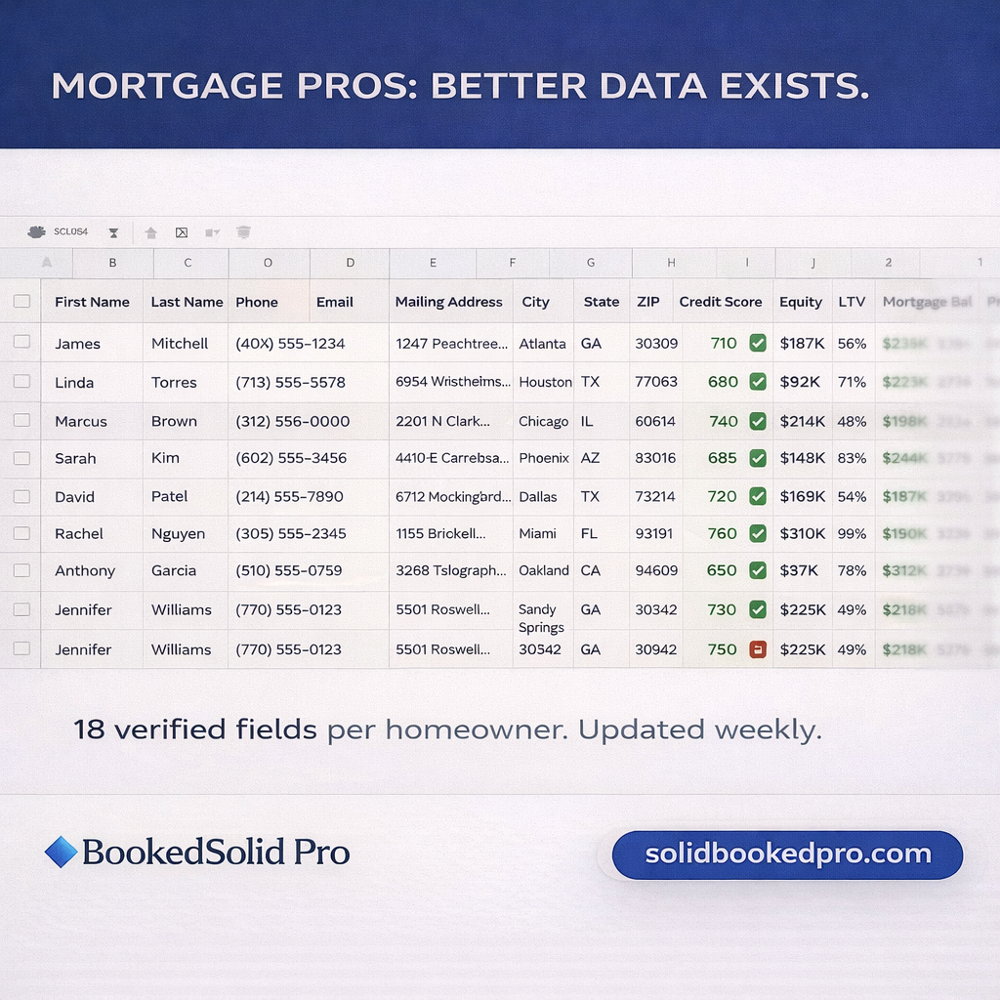
solidbookedpro.com/smart-data
Mortgage Pros: Better Data Exists.
Find refi opportunities your current list is missing.
View Full Ad Copy
Mortgage pros: how many dials does it take your team to reach one qualified homeowner?
😱 Denise knows. She's a mortgage broker in Tampa. Her top closer quit last month — not because of the commission structure, not because of the hours. He quit because "the leads are garbage, Denise." His words.
She'd heard them before. She just hadn't lost someone over them before.
❌ The problem wasn't the closer. The problem was the data behind the leads. Dead numbers. No income data. No equity estimates. No way to tell a refi candidate from a renter.
✅ Every record now includes verified contact data with up to 4 channels, 📊 plus home equity estimates, income data, and credit range — 🎯 so her team finds refi opportunities that their old list was hiding in plain sight.
🚨 Every week Denise's old list sat untouched, refi candidates were getting calls from brokers who could actually identify them.
⚡ The opportunities don't wait — they close with whoever finds them first.
AI Image Prompt (paste-ready)
BRAND STYLE: BookedSolid Pro — B2B data intelligence SaaS for professionals. COLOR PALETTE: Primary navy #0f172a, accent blue #2563eb, success green #22c55e, danger red #ef4444, navy text #0f172a, light gray #f1f5f9, medium gray #94a3b8. TYPOGRAPHY: Headlines use a modern serif font (like DM Serif Display) in bold weight. Body text uses a clean sans-serif (like Inter). LOGO: BookedSolid Pro in clean navy sans-serif with a small blue diamond icon before the text. OVERALL AESTHETIC: CSV/Spreadsheet mockup — the BSP signature style. Wide realistic spreadsheet showing ALL 18+ columns with 8 rows of fake realistic homeowner data. PII columns blurred at right edge. RENDERING STYLE: Ultra-realistic spreadsheet/CSV interface screenshot. White cells, alternating row shading, thin borders. Column headers navy Inter 700. Data Inter 400. Real exported CSV in premium spreadsheet app. Clean modern data-forward. COMPOSITION (1080x1080 square — single static image, NOT a carousel): BACKGROUND: White #ffffff. TOP 8%: Navy banner. MORTGAGE PROS: BETTER DATA EXISTS. Inter 800 20pt white centered. SPREADSHEET (center 960x700px): COLUMNS: First Name | Last Name | Phone | Email | Mailing Address | City | State | ZIP | Credit Score | Equity | LTV | Mortgage Bal | Prop Value | Cardholder | Income | DNC Status | Property Type | Year Built 8 ROWS fake data: James | Mitchell | (404) 555-1234 | j.mitch***@g... | 1247 Peachtree... | Atlanta | GA | 30309 | 710 | $187K | 56% | $243K | $430K | Amex Plat | $95K+ | CLEAR | SFR | 2003 Linda | Torres | (713) 555-5678 | l.tor***@y... | 8834 Westheimer... | Houston | TX | 77063 | 680 | $92K | 71% | $227K | $319K | Visa Sig | $75K+ | CLEAR | SFR | 1998 Marcus | Brown | (312) 555-0000 | m.bro***@o... | 2201 N Clark... | Chicago | IL | 60614 | 740 | $214K | 48% | $198K | $412K | MC World | $110K+ | CLEAR | Condo | 2011 Sarah | Kim | (602) 555-3456 | s.kim***@g... | 4410 E Camelback... | Phoenix | AZ | 85018 | 695 | $143K | 63% | $244K | $387K | Amex Gold | $85K+ | CLEAR | SFR | 2006 David | Patel | (214) 555-7890 | d.pat***@h... | 6712 Mockingbird... | Dallas | TX | 75214 | 720 | $168K | 54% | $197K | $365K | Visa Plat | $90K+ | CLEAR | SFR | 2001 Rachel | Nguyen | (305) 555-2345 | r.ngu***@g... | 1155 Brickell... | Miami | FL | 33131 | 760 | $310K | 38% | $190K | $500K | Amex Plat | $130K+ | CLEAR | Condo | 2015 Anthony | Garcia | (510) 555-6789 | a.gar***@y... | 3288 Telegraph... | Oakland | CA | 94609 | 650 | $87K | 78% | $312K | $399K | Discover | $70K+ | DNC | SFR | 1994 Jennifer | Williams | (770) 555-0123 | j.wil***@o... | 5501 Roswell... | Sandy Springs | GA | 30342 | 730 | $225K | 49% | $218K | $443K | Visa Sig | $105K+ | CLEAR | SFR | 2008 EMAIL partially masked. ADDRESS truncated. DNC: CLEAR green, DNC red. Right edge Gaussian blur suggesting more data. BOTTOM 8%: 18 verified fields per homeowner. Updated weekly. Inter 600 14pt navy left. solidbookedpro.com #2563eb right.
AI Video Storyboard (paste-ready)
FORMAT: 1080x1920 (9:16 vertical) | 15 seconds | 30fps COLOR GRADE: Professional finance aesthetic. Navy base, gold/amber accents for mortgage industry. MUSIC: Professional urgency (percussion + piano) -> empowering build -> resolution. SCENE 1 (0-3s): HOOK — INDUSTRY CALL-OUT - Navy (#0f172a). - "MORTGAGE PROS:" at top — Inter 800, 20pt, amber (#f59e0b), uppercase, letter-spacing 0.15em. 30% from top, left-aligned (64px). - "Better Data Exists." below — DM Serif Display, 72pt, white. Word-by-word reveal (0.3s stagger). - Mortgage document icon (house + doc lines, outlined, white, 48px) appears right of headline, rotating in. - Sound: Authoritative tone. Single piano chord. Office hum. SCENE 2 (3-7s): AGITATE — DENISE'S STORY CAROUSEL - Three cards swipe left-to-right: - CARD 1 (3-4.2s): Dark gray (#1e293b). "Denise, Tampa. Mortgage brokerage." / "Her best closer was leaving." / "Not because of leads. Because of DATA." — Inter 400, 20pt, white. Line-by-line fade. - CARD 2 (4.2-5.5s): Three red X items: "Calling homeowners with no equity" / "Pitching refis to people who just closed" / "Zero income data = blind qualification" — Inter 400, 18pt, red X + white. - CARD 3 (5.5-7s): "Then she found records with:" — #94a3b8. Green checks: Equity estimates | Credit ranges | Mortgage age | Income brackets. "Her closer stayed." — Inter 600, 22pt, white. - Sound: Swipe sounds. Soft buzzer (card 2). Success chimes (card 3). SCENE 3 (7-11s): PROOF — MORTGAGE-SPECIFIC DATA - Navy. Mortgage-specific data card (white, 80% width). - Header: "MORTGAGE-QUALIFIED HOMEOWNER" — blue (#2563eb) badge. - Key fields highlight in sequence: - "Mortgage Balance: $224,000" — amber highlight - "Estimated Equity: $118,000" — green highlight - "Credit Range: 700-740" — green highlight - "Home Age: 14 years (orig. 2012)" — blue highlight - "Income Bracket: $95-120K" — amber highlight - "REFI CANDIDATE: HIGH" badge — green (#22c55e) bg, white text, Inter 700. - "Your closer sees this before dialing." — DM Serif Display, 24pt, white. - Sound: Data population sounds. Ascending tones. Soft "lock" per highlight. SCENE 4 (11-15s): CTA — BRAND CARD - Data card slides to upper-right (thumbnail, 30%). - "BookedSolid Pro" logo — white with blue diamond, 48pt. - "Built for mortgage professionals." — Inter 500, 20pt, #94a3b8. - CTA pill: blue (#2563eb), "Build a Free List" white Inter 700, 20pt. Pulse. - "Filter by equity, credit, mortgage age." — Inter 400, 14pt, #64748b. - Sound: Professional resolution. Authoritative.
3
3 Fields vs 18: Contrarian
Emotion: Curiosity / Empowerment | 5 hook variations
3.1
3 Fields vs 18: Contrarian
Sponsored
Question
Tiana #4 (Pain Point?)
3 Fields Is Not Intelligence.
How many data points does your list provider give you per record?
❌ If the answer is name, phone, and address — congratulations, you're working with the same intel a pizza delivery driver has....
See more
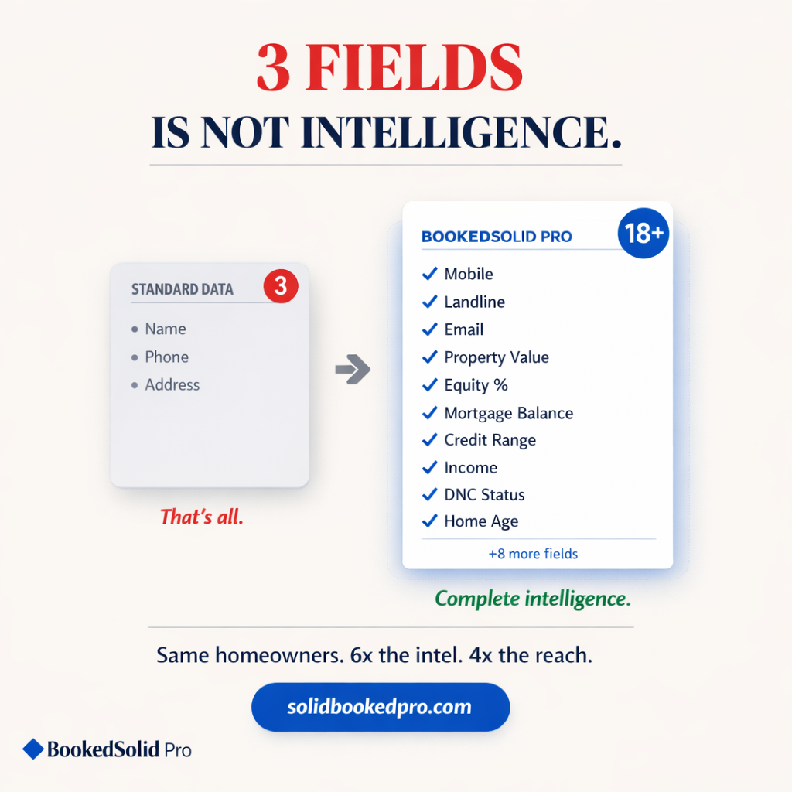

solidbookedpro.com/full-records
3 Fields Is Not Intelligence.
You have less info than a pizza delivery driver.
View Full Ad Copy
How many data points does your list provider give you per record?
❌ If the answer is name, phone, and address — congratulations, you're working with the same intel a pizza delivery driver has. Except the pizza driver knows one thing you don't: that somebody actually lives there.
🛑 Three fields is a phone book entry. It tells you nothing about whether this homeowner can afford your service, needs your service, or is even alive. 💰 You're paying for the privilege of guessing.
✅ Now imagine every record came with income range, credit tier, home value, home age, DNC status, and three backup channels when the phone doesn't connect.
🔥 Same homeowners. Completely different conversations.
🚨 The homeowner you couldn't reach today — because your only number was disconnected and you had no backup channel — 📞 just answered the phone for your competitor. 📊 Who had their cell number. And their income range. And a reason to call.
👉 You can see what complete intel looks like for your territory — takes about 60 seconds.
AI Image Prompt (paste-ready)
BRAND STYLE: BookedSolid Pro — B2B data intelligence SaaS for professionals. COLOR PALETTE: Primary navy #0f172a, accent blue #2563eb, success green #22c55e, danger red #ef4444, navy text #0f172a, light gray #f1f5f9, medium gray #94a3b8. TYPOGRAPHY: Headlines use a modern serif font (like DM Serif Display) in bold weight. Body text uses a clean sans-serif (like Inter). LOGO: BookedSolid Pro in clean navy sans-serif with a small blue diamond icon before the text. OVERALL AESTHETIC: Product hero with radiating callouts showing 3 vs 18 comparison. Light bg, monitor showing BSP data, floating callout pills. RENDERING STYLE: Photorealistic product shot on clean light surface. Large monitor showing BSP data interface. Floating pill callouts connected by thin curved dotted lines. Apple product launch meets data SaaS. COMPOSITION (1080x1080 square — single static image, NOT a carousel): BACKGROUND: Light gray #f1f5f9. CENTER: Large monitor showing homeowner record with 18 visible fields in clean grid. TWO ZONES: Left of screen small red-tinted card THEIR DATA showing only Name Phone Address with red Xs. Right the full 18-field dashboard with green checks. FLOATING CALLOUT PILLS (navy and green radiating from dashboard): Credit Score green — Home Equity blue — Cardholder Type navy — Income Bracket navy — DNC Status green — LTV Ratio blue — +12 more fields green larger. TOP: 3 FIELDS IS NOT INTELLIGENCE. DM Serif Display 40pt navy centered. BOTTOM: Navy bar with BookedSolid Pro + solidbookedpro.com white.
AI Video Storyboard (paste-ready)
FORMAT: 1080x1920 (9:16 vertical) | 15 seconds | 30fps COLOR GRADE: Sharp contrast. Red/gray for inadequacy (scenes 1-2), blue/green for intelligence (scenes 3-4). MUSIC: Mechanical/sterile (scenes 1-2) -> alive, confident tech pulse (scenes 3-4). SCENE 1 (0-3s): HOOK — SIDE-BY-SIDE ENTRANCE - Black screen splits vertically. - LEFT (40%): Gray (#1e293b). Undersized card "YOUR DATA" slides up. 3 sparse fields: Name, Phone, Address. Red "3" badge (red circle #ef4444, white text, 32px). - RIGHT (60%): Navy (#0f172a). Empty — blue particles floating. - Centered overlay: "3 Fields Is Not Intelligence." — DM Serif Display, 52pt, white. "Intelligence" has blue (#2563eb) underline glow. - Sound: Dial-up modem (left). Digital anticipation hum (right). Bass hit on text. SCENE 2 (3-7s): AGITATE — THE EMPTINESS - Zoom into LEFT card (80% of screen). - Red (#ef4444) callout annotations appear one at a time: - Arrow to Name: "Shared with 47 other buyers" — Inter 400, 14pt, red - Arrow to Phone: "38% chance it's disconnected" — red - Arrow to Address: "Last verified: ???" — red - At 5.5s: Card cracks — white fracture lines radiating from center. - "This is what you're paying for." — Inter 600, 22pt, white. - "This is what everyone else has too." — Inter 400, 18pt, #94a3b8. - Sound: Three error tones. Cracking glass. Low drone. SCENE 3 (7-11s): PROOF — 18-FIELD INTELLIGENCE CARD - Cracked card SHATTERS (particles outward). Navy revealed. - Full 18-field card slides in from right — white, blue left-border (4px #2563eb), rounded 16px. - 4 sections with colored headers: - CONTACT (blue): Mobile, Landline, Email, Mailing — 4 green dots - PROPERTY (green): Value, Age, Type, Sq Ft — values populate - FINANCIAL (amber): Credit, Income, Equity, Mortgage — values populate - COMPLIANCE (white): DNC, Litigator, Scrub Status — green checkmarks - "18" badge pulses top-right — blue circle, white text, 32px. - "This is intelligence." — DM Serif Display, 32pt, white. - Sound: Shattering glass. Data loading sequence. Rising confidence chord. SCENE 4 (11-15s): CTA — BRAND CARD - Intelligence card shrinks to top-center thumbnail. - "BookedSolid Pro" logo — white with blue diamond, 48pt. - "18 data points. 4 channels. Per record." — Inter 500, 20pt, #94a3b8. - CTA pill: blue (#2563eb), "Build a Free List" white Inter 700, 20pt. Pulse. - Sound: Authoritative resolution chord.
3.2
3 Fields vs 18: Contrarian
Sponsored
Bold Claim
Oliver (Metric+Magnitude)
4 Channels. Not 1.
Up to 4 contact channels per record. Most list providers give you 1.
Think about what that means on a Tuesday afternoon. Your closer dials the number. Disconnected. Game over. No backup. No second pa...
See more
4 Channels. Not 1.
Curiosity / Empowerment
Static 1080x1080
Format B
solidbookedpro.com/full-records
4 Channels. Not 1.
Disconnected doesn't mean dead end. 4 channels.
View Full Ad Copy
Up to 4 contact channels per record. Most list providers give you 1.
❌ Think about what that means on a Tuesday afternoon. Your closer dials the number. Disconnected. Game over. No backup. No second path. No way to reach this homeowner through any other channel. 💰 That lead — the one you paid for — is just gone.
✅ With 4 channels, disconnected doesn't mean dead. 📞 Phone doesn't connect? Try the cell. Cell goes to voicemail? Send an email. Email bounces? Mail a postcard. 🔥 You paid for that homeowner's attention — you should have more than one shot at getting it.
📊 Plus the full profile: income, credit range, home value, home age, and more — 🎯 so you know they're worth reaching before you try.
🚨 Every disconnected number with no backup channel is a homeowner you'll never reach. ➡️ They don't wait for you to buy a better list next month. They answer the next company that calls — the one with their cell number.
👉 You can build a multi-channel list right now — takes about 60 seconds.
AI Image Prompt (paste-ready)
BRAND STYLE: BookedSolid Pro — B2B data intelligence SaaS for professionals. COLOR PALETTE: Primary navy #0f172a, accent blue #2563eb, success green #22c55e, danger red #ef4444, navy text #0f172a, light gray #f1f5f9, medium gray #94a3b8. TYPOGRAPHY: Headlines use a modern serif font (like DM Serif Display) in bold weight. Body text uses a clean sans-serif (like Inter). LOGO: BookedSolid Pro in clean navy sans-serif with a small blue diamond icon before the text. OVERALL AESTHETIC: Objection handler / educational infographic. Four distinct contact channel cards arranged in a 2x2 grid. Each card represents a different way to reach the homeowner. Clean structured editorial — premium trade magazine infographic. RENDERING STYLE: Light editorial infographic. Clean cream background, four distinct channel cards in a grid, each with an icon and description. Structured organized authoritative. NOT a data table. COMPOSITION (1080x1080 square — single static image, NOT a carousel): BACKGROUND: Warm off-white #f8fafc with subtle paper texture. TOP: 4 CHANNELS. NOT 1. DM Serif Display 42pt navy centered. Below: Most providers give you a phone number. We give you four ways in. Inter 500 15pt #64748b. VISUAL (center, 4 cards in 2x2 grid, each 440x240px, 24px gap): CARD 1 TOP-LEFT (Phone): White card rounded 14px, green left border 4px. Phone icon green. Verified Phone in Inter 700 16pt navy. (404) 555-1234 with green Verified badge. Below: Direct cell, carrier-verified, updated weekly. Inter 400 12pt #64748b. CARD 2 TOP-RIGHT (Email): White card, blue left border. Email icon blue. Verified Email. j.mitchell***@g... with blue Verified badge. CARD 3 BOTTOM-LEFT (Mail): White card, navy left border. Mailbox icon navy. Mailing Address. 1247 Peachtree St, Atlanta GA 30309. CARD 4 BOTTOM-RIGHT (SMS): White card, amber left border. Message icon amber. SMS/Text Channel. Opt-in verified, DNC-clear. COMPARE STRIP (below grid): Red-tinted bar: Their data: 1 channel (phone only). Green-tinted bar: BSP: up to 4 channels per record. BOTTOM: BookedSolid Pro wordmark left, solidbookedpro.com right, navy.
AI Video Storyboard (paste-ready)
FORMAT: 1080x1920 (9:16 vertical) | 15 seconds | 30fps COLOR GRADE: Dark base with multi-color channel accents (blue, green, purple, amber). MUSIC: Single note isolation (scene 1) -> building layers (scene 2) -> full multi-layered (scenes 3-4). SCENE 1 (0-3s): HOOK — SINGLE CHANNEL ISOLATION - Black screen (#000000). - At 0.3s: Single phone icon centered — white outline, 80px. - At 0.8s: "Your only channel." types below — Inter 400, 20pt, red (#ef4444). - At 1.5s: Phone icon gets red X overlay. "DISCONNECTED" stamp — red, Inter 700, 16pt. - At 2.0s: "4 Channels. Not 1." slams across center — DM Serif Display, 64pt, white. "4" blue (#2563eb), "1" red (#ef4444). - Sound: Single dial tone. Disconnected beep. Bass slam. SCENE 2 (3-7s): AGITATE — CHANNEL GRID BUILD - Navy (#0f172a). Phone icon shrinks to top-left, dimmed. - 2x2 grid builds in center (220x220px squares, 16px gap): - TOP-LEFT (3.5s): Blue (#2563eb) — Phone icon + "COLD CALL" + "Verified Numbers" - TOP-RIGHT (4.3s): Green (#22c55e) — Envelope + "DIRECT MAIL" + "Verified Addresses" - BOTTOM-LEFT (5.1s): Purple (#8b5cf6) — @ icon + "EMAIL" + "Deliverable Emails" - BOTTOM-RIGHT (5.9s): Amber (#f59e0b) — Chat bubble + "SMS / RVM" + "Mobile Numbers" - Each square: glow-in (0% to 100% opacity, scale 90% to 100%). - At 6.5s: Connection lines draw between all 4 (white, 1px, glowing endpoints). - "One list. Every channel." — Inter 600, 22pt, white. - Sound: Ascending scale (C, E, G, C-octave) per square. Linking sound on connections. SCENE 3 (7-11s): PROOF — CHANNEL IN ACTION - Grid compresses to top-third (50% size). - Multi-channel sequence below: - Step 1: "Cold Call - No Answer" — blue icon, gray text (7.5s) - Arrow down → Step 2: "SMS Sent - 'Saw you have a 2003 home...'" — amber (8.5s) - Arrow down → Step 3: "Email Follow-up - Property report attached" — purple (9.5s) - Arrow down → Step 4: "Direct Mail - Personalized postcard" — green (10.5s) - "4 touches. Zero extra cost." — Inter 700, 24pt, green (#22c55e). - Sound: Different notification tones per step. Ascending confidence. SCENE 4 (11-15s): CTA — BRAND CARD - Sequence compresses up. Navy. - "BookedSolid Pro" logo — white with blue diamond, 48pt. - "Phone. Email. Mail. SMS. One list." — Inter 500, 20pt, #94a3b8. - CTA pill: blue (#2563eb), "Build a Free List" white Inter 700, 20pt. Pulse. - Four tiny colored dots (blue, green, purple, amber) below pill — representing 4 channels. - Sound: Full chord combining all 4 tones. Satisfying resolution.
3.3
3 Fields vs 18: Contrarian
Sponsored
Story
Tiana #8 (Social Proof)
Same Homeowners. Better Records.
"Probably 40% are disconnected numbers and another 30% I end up calling people that have no connection to the property or owner." — Nick S., BiggerPockets
🚨 Nick isn't complaining about one bad...
See more
solidbookedpro.com/full-records
Same Homeowners. Better Records.
3-field data is why 70% of your calls go nowhere.
View Full Ad Copy
"Probably 40% are disconnected numbers and another 30% I end up calling people that have no connection to the property or owner." — Nick S., BiggerPockets
🚨 Nick isn't complaining about one bad list. He's describing every list he's ever bought. And everyone in the comments is nodding.
❌ That's the reality of 3-field data. Name. Phone. Address. No way to verify the number works. No way to filter out the homeowners who can't afford your service. No fallback when the only number you have goes to a fax machine in somebody's garage.
✅ The intel your closer needs changes the math entirely. 📊 Income range, credit tier, home value, home age — 📞 plus up to 4 contact channels per record. 🎯 Same homeowners Nick was trying to reach. Fundamentally richer records.
👉 You can see the difference for yourself — takes about 60 seconds.
AI Image Prompt (paste-ready)
BRAND STYLE: BookedSolid Pro — B2B data intelligence SaaS for professionals. COLOR PALETTE: Primary navy #0f172a, accent blue #2563eb, success green #22c55e, danger red #ef4444, navy text #0f172a, light gray #f1f5f9, medium gray #94a3b8. TYPOGRAPHY: Headlines use a modern serif font (like DM Serif Display) in bold weight. Body text uses a clean sans-serif (like Inter). LOGO: BookedSolid Pro in clean navy sans-serif with a small blue diamond icon before the text. OVERALL AESTHETIC: Person with handwritten callouts. Warm relatable marker annotations on a photo, focused on 18 fields advantage. RENDERING STYLE: Photorealistic portrait with hand-drawn marker annotations. Thick marker lines, hand-drawn arrows, imperfect handwriting. Authentic not corporate. COMPOSITION (1080x1080 square — single static image, NOT a carousel): BACKGROUND: Light sage green #e8f0e8 studio backdrop. CENTER: Male professional late 40s salt-and-pepper beard rolled sleeves reading glasses on forehead sitting at desk with dual monitors. One screen shows basic 3-field basic list, other shows full 18-field BSP dashboard. Pointing at BSP screen with knowing expression. HANDWRITTEN CALLOUTS (marker-style): Arrow to basic screen: THIS is what 15 cents per lead gets you (red marker underlined) Arrow to BSP screen: THIS is what intelligence looks like (green marker circled) Near head: same homeowners. better records. (blue marker) Bottom: 15 extra fields = 3x more closed deals (black marker boxed) BOTTOM STRIP: White bar. BookedSolid Pro left blue diamond. solidbookedpro.com right #2563eb.
AI Video Storyboard (paste-ready)
FORMAT: 1080x1920 (9:16 vertical) | 15 seconds | 30fps COLOR GRADE: Forum/community warmth (scene 1) -> data contrast blue/red (scene 2) -> clean proof (scene 3) -> navy brand (scene 4). MUSIC: Casual/authentic (scene 1) -> analytical tension (scene 2) -> confident build (scenes 3-4). SCENE 1 (0-3s): HOOK — FORUM POST - Dark gray (#1e293b). - Forum post card slides in from bottom — white, rounded 12px, shadow. - Avatar: gray circle + "Nick_REI" — Inter 600, 14pt. - Post types out: "I'm paying good money for this data and half the numbers don't even work." — Inter 400, 20pt, #1a1a1a. - Upvote: "127" with green up-arrow. - "Same Homeowners. Better Records." above card — DM Serif Display, 48pt, white. - Sound: Forum notification. Keyboard typing. Crowd murmur. SCENE 2 (3-7s): AGITATE — RECORD COMPARISON - Forum post shrinks to corner (20% opacity). Screen splits horizontally: - TOP (red zone): "THEIR RECORD" — Inter 700, 14pt, red (#ef4444). - "John Smith" | "555-0142" | "123 Oak St" - Status: "Phone: Unknown" (gray) | "Income: N/A" | "Credit: N/A" - Watermark: "LAST UPDATED: 11 MONTHS AGO" — red, 12pt - Red strip: "This is what you're getting." - BOTTOM (blue zone): "OUR RECORD" — Inter 700, 14pt, blue (#2563eb). - "John Smith" | "555-0142 (Verified Active)" | "123 Oak St (Owner-Occupied)" - Status: "Credit: 710" (green) | "Income: $88K" | "Equity: $134K" - 15 more fields visible but compressed - Blue watermark: "VERIFIED: TODAY" - Divider pulses red-to-blue. - Sound: Buzzer (top). Ascending chime (bottom). SCENE 3 (7-11s): PROOF — THE UPGRADE - Bottom half expands to full screen. Full record card enlarges. - Three proof points (staggered, 0.6s each): - Green checkmark + "Same homeowner. 6x the data." — Inter 600, 20pt, white - Green checkmark + "4 verified contact channels." - Green checkmark + "Updated in real-time. Not quarterly." - "6x" badge bottom-right — 72pt, DM Serif Display, green (#22c55e), subtle glow. - "3 fields didn't work for Nick. Or you." — Inter 500, 18pt, #94a3b8. - Sound: Three confirmation dings. Building synth pad. SCENE 4 (11-15s): CTA — BRAND CARD - Record card fades out. - "BookedSolid Pro" logo — white with blue diamond, 48pt. - "Same homeowners. 6x the intelligence." — Inter 500, 20pt, #94a3b8. - CTA pill: blue (#2563eb), "Build a Free List" white Inter 700, 20pt. Pulse. - "Compare your current data side-by-side." — Inter 400, 14pt, #64748b. - Sound: Warm, authoritative resolution.
3.4
3 Fields vs 18: Contrarian
Sponsored
Pattern Interrupt
Tiana #11 (Not X, It's Y)
3 Fields Is a Lottery Ticket.
You're buying homeowner data with 3 fields and calling it a "list."
It's not a list. It's a lottery ticket with a monthly subscription. You pay, you dial, you hope. And when 40% comes back disconnect...
See more
3 Fields Is a Lottery Ticket.
Curiosity / Empowerment
Static 1080x1080
Format C
solidbookedpro.com/full-records
3 Fields Is a Lottery Ticket.
Same data pools, same dead numbers — unless you demand better.
View Full Ad Copy
You're buying homeowner data with 3 fields and calling it a "list."
❌ It's not a list. It's a lottery ticket with a monthly subscription. You pay, you dial, you hope. 🛑 And when 40% comes back disconnected, everyone shrugs because "that's just how data is."
🚨 No. That's just how lazy data is.
👀 "The data sources used by nearly everyone are generally stale. They're ALL accessing the same data pools." — John M., BiggerPockets
➡️ Same pools. Same dead numbers. Same shrug. The data doesn't have to be the same — you've just never been offered anything better.
✅ We deliver everything your closer needs to have a real conversation: 📊 income, credit range, home value, home age, square footage, DNC status — 📞 plus up to 4 contact channels. 🎯 Filter by what matters. Pay only for the records that match.
💰 Next month, your auto-renewal will charge your card for another batch of the same 3-field data. Same dead numbers. Same shrug. Same results. That charge is coming whether you look at alternatives or not.
👉 You can see what better data looks like before that renewal hits — takes about 60 seconds.
AI Image Prompt (paste-ready)
BRAND STYLE: BookedSolid Pro — B2B data intelligence SaaS for professionals. COLOR PALETTE: Primary navy #0f172a, accent blue #2563eb, success green #22c55e, danger red #ef4444, navy text #0f172a, light gray #f1f5f9, medium gray #94a3b8. TYPOGRAPHY: Headlines use a modern serif font (like DM Serif Display) in bold weight. Body text uses a clean sans-serif (like Inter). LOGO: BookedSolid Pro in clean navy sans-serif with a small blue diamond icon before the text. OVERALL AESTHETIC: Pastel close-up showing data richness. Soft peach/lavender gradient, phone screen close-up with detailed homeowner record. Feature labels with thin arrows. Magazine-ad quality. RENDERING STYLE: Editorial product close-up on soft pastel gradient. Phone held naturally, screen showing detailed data. Clean Inter labels with hairline arrows. Aspirational but approachable. COMPOSITION (1080x1080 square — single static image, NOT a carousel): BACKGROUND: Soft gradient warm peach #f0e0d8 to cream #f8f5f0. CENTER: Hand holding iPhone naturally showing BSP mobile record: Linda Torres, (713) 555-5678 verified, Credit 680-720, Equity $92,400, LTV 71%, Cardholder Visa Signature, Income $75K-$95K, DNC CLEAR. FEATURE LABELS (Inter 600 navy thin hairline arrows): Not a lottery ticket verified intelligence to credit. Know their buying power to equity. 4 contact channels to phone. TOP: 3 FIELDS IS A LOTTERY TICKET. DM Serif Display 38pt navy centered. Subhead: 18 fields is a strategy. Inter 500 18pt #22c55e. BOTTOM: BookedSolid Pro wordmark + solidbookedpro.com.
AI Video Storyboard (paste-ready)
AI VIDEO STORYBOARD — Ad 3.4 "3 Fields Is a Lottery Ticket" FORMAT: 9:16 vertical (1080x1920), 15 seconds, 30fps MOOD: Shock → Upgrade Reveal ── HOOK (0-3s) ────────────────────────── Pure black (#000000) screen. "3 FIELDS." appears in DM Serif Display, 900 weight, 100pt, white, centered at 35%. At 1.0s: text glitches (RGB split, 4px offset, 3 frames), resolves into "IS A LOTTERY TICKET." — DM Serif Display, 80pt, red (#ef4444). Red glow pulse (8%, 300px). At 2.2s: scratch-off ticket texture overlays at 12%. AUDIO: Sharp scratch foley at 2.2s. ── DATA COMPARISON (3-7s) ────────────────────────── Crossfade to navy (#0f172a). Left: dim gray data card (320x480px) slides in. Header: "YOUR CURRENT LIST" Inter 700, 14pt, #64748b. 3 field rows fade in (Name, Phone, Address) with red X icons. Red "3" badge. At 5.5s: red stamp "LOTTERY TICKET" rotates in at 25% opacity. Right side stays empty — the absence IS the point. Counter: "40% disconnected" ticking in red monospace. AUDIO: Tension building. Counter ticks. ── THE UPGRADE (7-11s) ────────────────────────── Green (#22c55e) horizontal wipe. Vibrant data card (400x560px) scales up. Header: "BOOKEDSOLID PRO" Inter 800, 14pt, green. 18 field rows cascade in waterfall style (0.1s stagger): Name, Phone, Address, Email, Income, Credit Tier, Home Value, Home Age, Sq Ft, Year Built, DNC Status, Mortgage, Property Type, Owner Type, Length of Residence, Channel 2, Channel 3... Green checkmarks. Blue "18+" badge glows. Text: "Same homeowner. 6x the intelligence." Inter 500, 22pt, white. AUDIO: Cascading data reveal chimes. ── CTA (11-15s) ────────────────────────── Hard cut to navy. "BookedSolid Pro" logo centered, white with blue diamond, 48pt. "Stop guessing. Start qualifying." Inter 500, 22pt, white. "18+ data points per record." Inter 400, 16pt, #94a3b8. Blue CTA pill: "Build a Free List" Inter 600, 20pt, white. White particle dots drift upward. AUDIO: Confident resolution. ── CONDENSED SINGLE-SHOT PROMPT ────────────────────────── 15-second vertical (1080x1920, 30fps). "3 FIELDS IS A LOTTERY TICKET" with RGB glitch on black. Dim 3-field card with red stamp vs vibrant 18-field card with green waterfall cascade. End with logo + "Stop guessing. Start qualifying." Palette: black, navy #0f172a, red #ef4444, green #22c55e, blue #2563eb.
3.5
3 Fields vs 18: Contrarian
Sponsored
Direct Call-Out
Fraser #8 (Demographic Call-Out)
Richer Records. More Channels.
Teams buying homeowner records from ListSource, Cole, or DataAxle:
❌ Pull up your last file. Count the columns. If it's name, phone, and address — you're paying premium prices for commodity data.
🛑...
See more
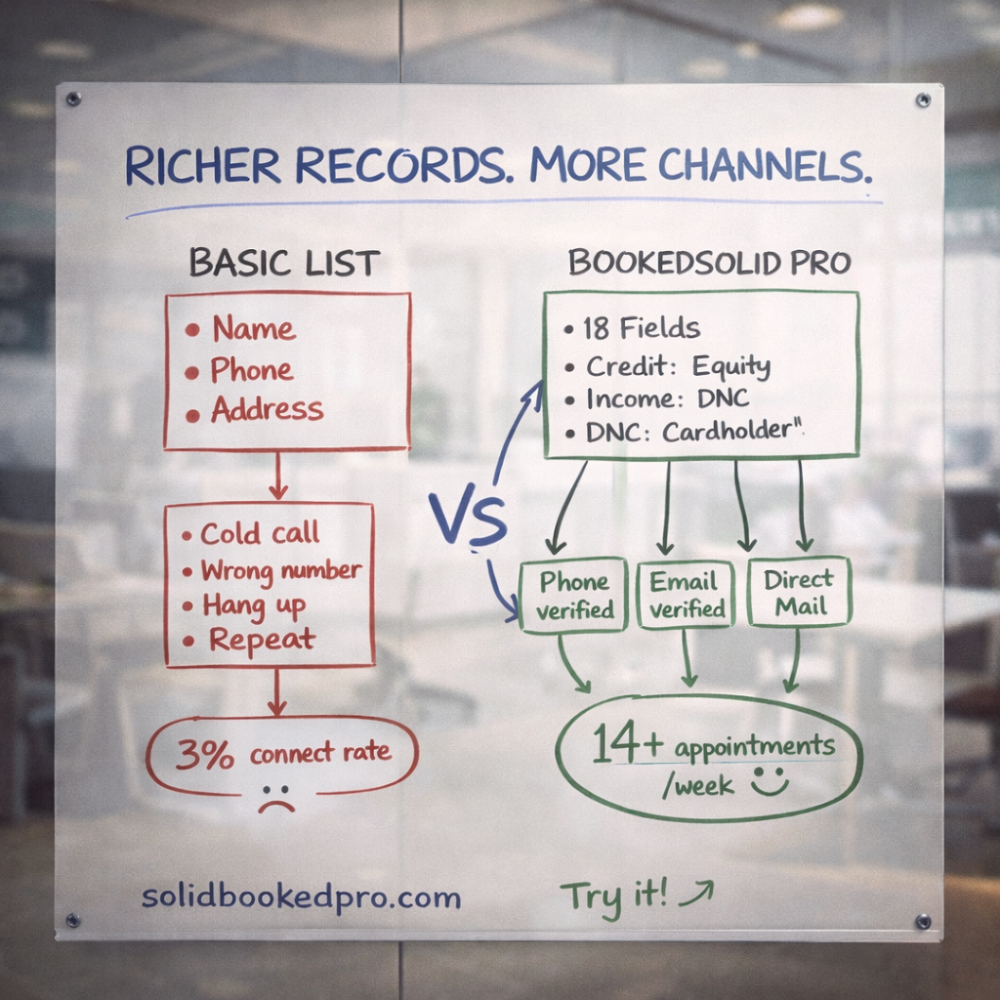
solidbookedpro.com/full-records
Richer Records. More Channels.
Same homeowners, fundamentally richer records.
View Full Ad Copy
Teams buying homeowner records from ListSource, Cole, or DataAxle:
❌ Pull up your last file. Count the columns. If it's name, phone, and address — you're paying premium prices for commodity data.
🛑 And when that phone number is disconnected, you have exactly zero fallback. That homeowner is gone.
✅ Now imagine the same homeowner record with their income range, credit tier, home value, home age, DNC status, and three additional contact channels. 📊 Same person. But now your closer knows if they're worth calling — 📞 and has three more ways to reach them if the phone doesn't connect.
🔥 That's not a marginal upgrade. That's the difference between your closer guessing and your closer qualifying.
🚨 Your competitors are calling the same homeowner universe. ➡️ The difference is what they know before they dial. 💰 Every day that gap exists, they're having conversations you're not.
👉 You can close that gap in about 60 seconds — same homeowner universe, fundamentally richer records.
AI Image Prompt (paste-ready)
BRAND STYLE: BookedSolid Pro — B2B data intelligence SaaS for professionals. COLOR PALETTE: Primary navy #0f172a, accent blue #2563eb, success green #22c55e, danger red #ef4444, navy text #0f172a, light gray #f1f5f9, medium gray #94a3b8. TYPOGRAPHY: Headlines use a modern serif font (like DM Serif Display) in bold weight. Body text uses a clean sans-serif (like Inter). LOGO: BookedSolid Pro in clean navy sans-serif with a small blue diamond icon before the text. OVERALL AESTHETIC: Whiteboard flowchart comparison. Glass office whiteboard with hand-drawn flowchart comparing basic list vs BSP intelligence. RENDERING STYLE: Photorealistic glass/acrylic whiteboard with office visible behind blurred. Natural lighting, realistic marker textures. COMPOSITION (1080x1080 square — single static image, NOT a carousel): BACKGROUND: Glass whiteboard with modern office behind blurred. WHITEBOARD CONTENT (dry-erase markers): Title blue marker: RICHER RECORDS. MORE CHANNELS. FLOWCHART boxes with arrows: Box 1 red border: BASIC LIST contains Name Phone Address. Arrow down to Box 2 red: Cold call Wrong number Hang up Repeat. Arrow to Box 3 red: 3% connect rate with sad face. Big blue VS in center. Box 4 green border: BOOKEDSOLID PRO contains 18 Fields Credit Equity Income DNC Cardholder. Arrows to 4 channel boxes: Phone verified green, Email verified green, Direct Mail green, SMS green. All arrows converge to Box 5 green circled: 14+ appointments/week with smiley. BOTTOM: Blue marker solidbookedpro.com. Green marker Try it arrow.
AI Video Storyboard (paste-ready)
AI VIDEO STORYBOARD — Ad 3.5 "Richer Records. More Channels." FORMAT: 9:16 vertical (1080x1920), 15 seconds, 30fps MOOD: Comparison → Multi-Channel Power ── HOOK (0-3s) ────────────────────────── Split screen vertical. LEFT: dark gray (#1a1a1a), "THEIRS" Inter 800, 16pt, red. Small dim card with 3 gray rows. Single dim phone icon. RIGHT: Navy (#0f172a) with blue glow, "YOURS" Inter 800, 16pt, green. Vibrant 18-row card scrolling with checkmarks. At 1.8s: four channel icons pop in (phone blue, envelope green, @ purple, chat amber). Divider: 2px white pulse. AUDIO: Unlock chime at 1.8s. ── ZOOM COMPARISON (3-7s) ────────────────────────── Camera zooms into right half. Side-by-side materializes: ROW 1 — "3 fields" (gray/red) arrow morphs to "18+ fields" (navy/blue glow). ROW 2 — single dim phone "Cold Call Only" arrow to 4 colored channel squares pulsing. Counter types: "Same price. 6x the intelligence. 4x the reach." Inter 500, 20pt, white. AUDIO: Building momentum. ── CLOSER'S PERSPECTIVE (7-11s) ────────────────────────── Cut to mock CRM/dialer screen. Contact record: "Martinez, Roberto." 18 data fields populate one-by-one with green checkmarks: Income $85K-$100K, Credit Good, Home Value $340K, Home Age 12yr, DNC Clear... Four channel icons light up at bottom: phone (blue), email (green), social (purple), text (amber). "Your closer knows who's worth calling." Inter 500, 20pt, white. DNC Clear field has green shield pulse. AUDIO: CRM interface sounds. Confidence building. ── CTA (11-15s) ────────────────────────── Green wipe. Navy bg. "BookedSolid Pro" logo, 48pt white. "Same homeowners. Fundamentally richer records." Inter 500, 20pt, white. Blue CTA pill: "Build a Free List" Inter 600, 20pt. Four channel icons pulsing below. AUDIO: Resolution. ── CONDENSED SINGLE-SHOT PROMPT ────────────────────────── 15-second vertical (1080x1920, 30fps). Split comparison: dim 3-field card with one channel vs vibrant 18-field card with 4 channel icons. Zoom into CRM view showing full record with all fields populating + 4 contact channels. End with logo + "Fundamentally richer records." Palette: navy #0f172a, blue #2563eb, green #22c55e, amber, purple.
4
Replacement Guarantee: Trust / Risk Reversal
Emotion: Trust / Confidence | 5 hook variations
4.1
Replacement Guarantee: Trust / Risk Reversal
Sponsored
Question
Tiana #4 (Pain Point?)
Every Bad Number Replaced.
What does your current list provider do when half the numbers are disconnected?
❌ You already know the answer. Nothing. You bought it. Bad numbers are your problem.
🛑 The most you'll get is a form...
See more
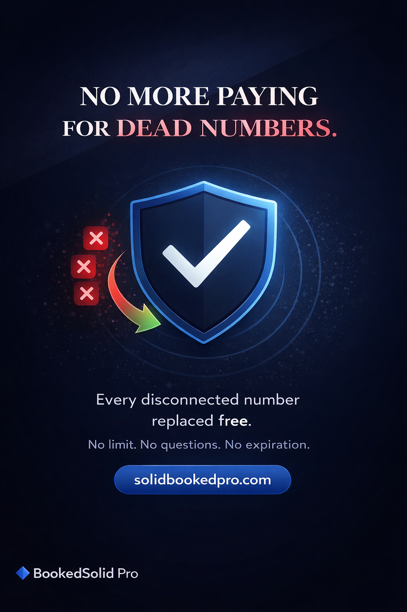
solidbookedpro.com/guarantee
Every Bad Number Replaced.
No threshold. No ticket. No questions.
View Full Ad Copy
What does your current list provider do when half the numbers are disconnected?
❌ You already know the answer. Nothing. You bought it. Bad numbers are your problem.
🛑 The most you'll get is a form to fill out, a ticket number, and an email that says "we'll review your request within 5-7 business days." By then you've already bought the next list.
👀 "Data quality and accuracy along with reliable uptime are the biggest issues with this service." — PropStream reviewer, Trustpilot
✅ We do it differently. Every disconnected or wrong number gets replaced.
🔒 No threshold. No form. No ticket. No 5-7 business days.
⚡ The few that slip past verification? Replaced free. Same day. Period.
💰 The dead numbers from last month's list aren't coming back. That money is gone.
🚨 Next month's list will have the same problem — unless you switch to data that replaces what doesn't work.
👉 You can see how the guarantee works — takes about 60 seconds. No commitment, no call.
AI Image Prompt (paste-ready)
BRAND STYLE: BookedSolid Pro — B2B data intelligence SaaS for professionals. COLOR PALETTE: Primary navy #0f172a, accent blue #2563eb, success green #22c55e, danger red #ef4444, navy text #0f172a, light gray #f1f5f9, medium gray #94a3b8. TYPOGRAPHY: Headlines use a modern serif font (like DM Serif Display) in bold weight. Body text uses a clean sans-serif (like Inter). LOGO: BookedSolid Pro in clean navy sans-serif with a small blue diamond icon before the text. OVERALL AESTHETIC: Social proof product card. Trust-forward with review stars, guarantee badge, benefit icons. Warm background, stacked trust elements. RENDERING STYLE: Clean card-based layout on warm cream bg. Central product card with trust badges below. Stars, review count, guarantee badge prominent. Premium but trustworthy not flashy. COMPOSITION (1080x1080 square — single static image, NOT a carousel): BACKGROUND: Warm cream #f5f0e8 subtle paper texture. CENTER CARD (720x480px white rounded 16px shadow): BSP logo + wordmark top. Simplified dashboard screenshot with green Verified badges. Below: 5 stars 4.9 from 4,200+ professionals amber. BELOW CARD: GUARANTEE BADGE (centered 180x180px): Shield icon green #22c55e with EVERY BAD NUMBER REPLACED FREE NO LIMIT NO QUESTIONS. BENEFIT ICONS ROW (4 circles 60px): Phone Verified Numbers — Shield DNC Scrubbed — Refresh Free Replacements — Chart 18 Data Fields. BOTTOM: solidbookedpro.com navy centered.
AI Video Storyboard (paste-ready)
AI VIDEO STORYBOARD — Ad 4.1 "Every Bad Number Replaced" FORMAT: 9:16 vertical (1080x1920), 15 seconds, 30fps MOOD: Trust → Guarantee Reveal ── HOOK (0-3s) ────────────────────────── Navy (#0f172a). "EVERY BAD NUMBER" DM Serif Display, 800 weight, 72pt, white, centered at 30%. At 1.0s: "REPLACED." slams in — 88pt, green (#22c55e). Green shockwave ripple radiates (concentric circles, 10%, expanding 400px). At 2.0s: "FREE." appears in green 88pt. Shield icon (48px, green outline, white checkmark) bounces in. AUDIO: Shield lock click at 1.0s. ── THE PROBLEM (3-7s) ────────────────────────── Crossfade to dark (#111827). Phone screen mockup (360x640px) shows call log scrolling: "Disconnected" (red), "Wrong Number" (orange), "Not in Service" (dark red). Red X icons. Counter: "Dead: 12... 28... 41... 67..." ticking in red. At 5.5s: screen cracks (glass fracture 15%). "This is what 'no guarantee' looks like." Inter 500, 18pt, #94a3b8. AUDIO: Escalating tension. Crack sound. ── THE GUARANTEE (7-11s) ────────────────────────── Green pulse wipe. Navy bg. Large shield (280x340px): green 3px stroke, navy fill, white checkmark. Three floating icons orbit: refresh arrows (green/replacement), infinity (blue/no limit), clock (blue/same day). Three lines fade in: "No Limit" | "No Questions" | "No Expiration" — green dots, Inter 600, 20pt, white. Green radial glow behind shield (10%, 500px). AUDIO: Trust tone. Orbital swooshes. ── CTA (11-15s) ────────────────────────── Navy. "BookedSolid Pro" logo 48pt white. "The only data with a replacement guarantee." Inter 500, 20pt, white. Blue CTA: "Build a Free List." Green dots float upward — replaced records returning to life. AUDIO: Confident resolution. ── CONDENSED SINGLE-SHOT PROMPT ────────────────────────── 15-second vertical (1080x1920, 30fps). "EVERY BAD NUMBER REPLACED FREE" with green shockwave on navy. Phone screen showing dead call log that cracks. Green shield with orbiting guarantee icons (no limit, no questions, same day). End with logo + guarantee statement. Palette: navy #0f172a, green #22c55e, blue #2563eb, red #ef4444.
4.2
Replacement Guarantee: Trust / Risk Reversal
Sponsored
Bold Claim
Tiana #10 (Finally)
Finally. Data With a Guarantee.
We replace every bad number. No cap. No questions.
❌ Most list providers sell you a file and vanish. If 40% of the phones are dead — tough luck. You already swiped your card. They already got...
See more
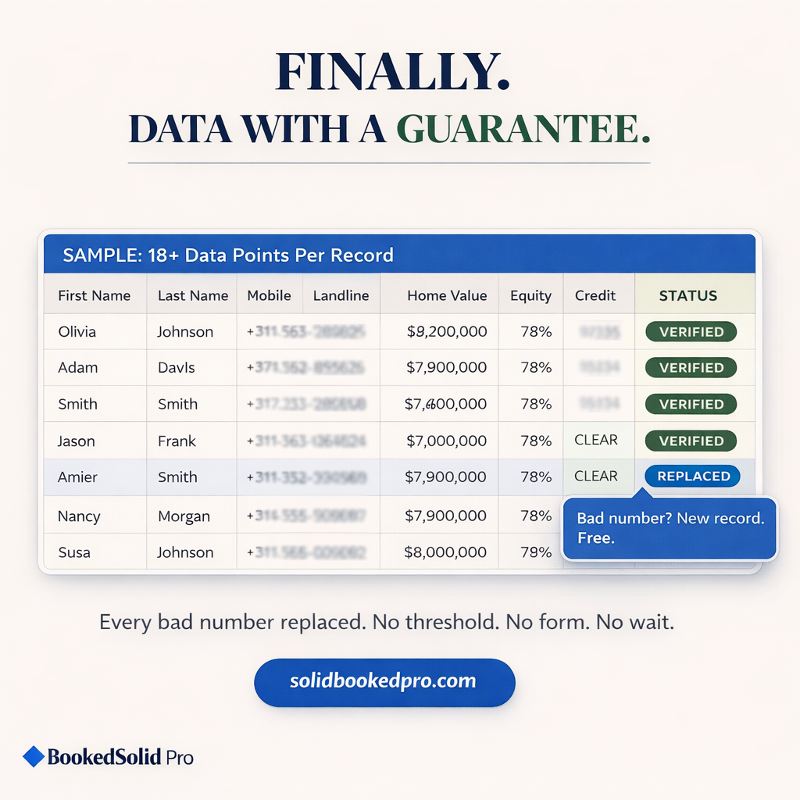
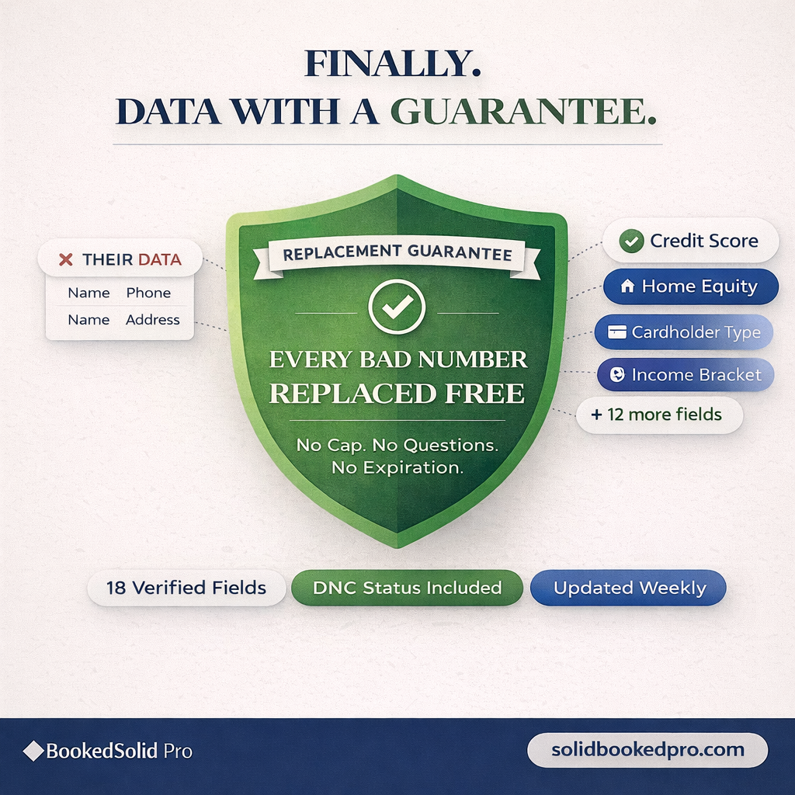
solidbookedpro.com/guarantee
Finally. Data With a Guarantee.
Disconnected? Wrong number? Replaced. Period.
View Full Ad Copy
We replace every bad number. No cap. No questions.
❌ Most list providers sell you a file and vanish. If 40% of the phones are dead — tough luck. You already swiped your card. They already got paid.
🛑 And somewhere in their terms of service, buried in paragraph 14, it says "data accuracy is not guaranteed."
🚨 That's not a disclaimer. That's a confession.
✅ Our guarantee is unconditional. Report a bad number, get a replacement. Report a thousand. Same deal.
🔒 No form. No waiting. No "we'll review your case."
⚡ Just a new number, same day.
💰 Every day you buy data from a provider whose terms say "accuracy is not guaranteed," you're accepting a deal you'd never accept from any other vendor.
➡️ You wouldn't buy a car without a warranty. You shouldn't buy data without one either — and every list you buy without it is money you're choosing to risk.
👉 You can see how the guarantee works — takes about 60 seconds.
AI Image Prompt (paste-ready)
BRAND STYLE: BookedSolid Pro — B2B data intelligence SaaS for professionals. COLOR PALETTE: Primary navy #0f172a, accent blue #2563eb, success green #22c55e, danger red #ef4444, navy text #0f172a, light gray #f1f5f9, medium gray #94a3b8. TYPOGRAPHY: Headlines use a modern serif font (like DM Serif Display) in bold weight. Body text uses a clean sans-serif (like Inter). LOGO: BookedSolid Pro in clean navy sans-serif with a small blue diamond icon before the text. OVERALL AESTHETIC: Bold guarantee hero. Centered shield/badge design with the replacement guarantee as the main visual. Premium trust-forward clean. Think insurance ad or money-back guarantee hero. RENDERING STYLE: Light editorial with prominent centered trust badge. Warm cream background, large green shield badge dominating center, supporting benefit pills below. Clean authoritative reassuring. The guarantee IS the visual. COMPOSITION (1080x1080 square — single static image, NOT a carousel): BACKGROUND: Warm cream #f5f0e8 with subtle paper grain. TOP: FINALLY. DATA WITH A GUARANTEE. DM Serif Display 38pt navy centered. CENTER (main visual, 500x500px area): Large shield badge centered: Green gradient #22c55e to #16a34a, 360x400px, shield shape with rounded top. Inside shield (white text centered): - Small ribbon banner at top: REPLACEMENT GUARANTEE Inter 800 11pt white letter-spacing 0.1em - Large check icon (circle with checkmark, 80px, white) - EVERY BAD NUMBER DM Serif Display 28pt white - REPLACED FREE DM Serif Display 36pt white bold - Thin white line 60% width - No Cap. No Questions. No Expiration. Inter 500 13pt white 90% BENEFIT PILLS (row below shield, 3 pills centered): - 18 Verified Fields (navy pill white text) - DNC Status Included (green pill white text) - Updated Weekly (blue pill white text) BOTTOM: BookedSolid Pro wordmark left with blue diamond. solidbookedpro.com right #2563eb.
AI Video Storyboard (paste-ready)
AI VIDEO STORYBOARD — Ad 4.2 "Finally. Data With a Guarantee." FORMAT: 9:16 vertical (1080x1920), 15 seconds, 30fps MOOD: Relief → Trust Building ── HOOK (0-3s) ────────────────────────── Navy (#0f172a). "FINALLY." DM Serif Display, 800 weight, 100pt, white, centered at 35%. Period is blue (#2563eb). 0.6s exhale fade — viewer has been waiting. At 1.2s: "DATA WITH A" 56pt white. At 1.8s: "GUARANTEE." 64pt green (#22c55e). Gold shimmer passes across word (specular highlight, 40%, 0.5s). AUDIO: Relieved exhale tone. ── FLOATING CARDS (3-7s) ────────────────────────── Navy deepens. Three guarantee cards float up from bottom, staggered 0.5s: Card 1 (tilted -5°): Refresh icon (green) + "Dead Number? Replaced Free." Inter 500, 20pt, white. Card 2 (tilted -2°): Infinity icon (blue) + "No Replacement Limit. Ever." Card 3 (front, no tilt): Shield checkmark (green) + "18+ Verified Data Points." 2px blue left border. All cards 640x160px, bg #1e293b. At 5.5s: gentle 8px breathing float animation. Blue ambient glow behind stack (6%). AUDIO: Cards land with soft drops. Ambient warmth. ── THE CONFESSION (7-11s) ────────────────────────── Cut to dark charcoal (#111827). "Terms of service" card appears — gray parchment, blurred legal text. One line highlighted red: "Data accuracy is not guaranteed." At 8.5s: red X stamp slams across. At 9.0s: document tears apart (rip animation). Behind it: "Ours is." DM Serif Display, 64pt, green. Centered. Confident. AUDIO: Paper tear. Green confidence tone. ── CTA (11-15s) ────────────────────────── Navy. "BookedSolid Pro" logo 48pt. "Disconnected? Wrong number? Replaced. Period." Inter 500, 20pt, white. Blue CTA: "Build a Free List." Three miniaturized guarantee cards reappear above CTA — visual callback. AUDIO: Clean resolution. ── CONDENSED SINGLE-SHOT PROMPT ────────────────────────── 15-second vertical (1080x1920, 30fps). "FINALLY. DATA WITH A GUARANTEE." with gold shimmer on navy. Three floating guarantee cards (replaced free, no limit, 18+ verified). Competitor TOS highlighted and torn apart, revealing "Ours is." End with logo + guarantee cards callback. Palette: navy #0f172a, green #22c55e, blue #2563eb.
4.3
Replacement Guarantee: Trust / Risk Reversal
Sponsored
Story
Hook #1 (My problem was X, product saved me)
Zero Waste. Guaranteed.
Nicole runs a 40-seat call center in Phoenix. Her team makes 12,000 dials a day.
She budgets 30% waste on every list she buys. Not because she's careless — because that's what every provider has trai...
See more
solidbookedpro.com/guarantee
Zero Waste. Guaranteed.
$1,980/day in payroll — dialing nothing.
View Full Ad Copy
Nicole runs a 40-seat call center in Phoenix. Her team makes 12,000 dials a day.
❌ She budgets 30% waste on every list she buys. Not because she's careless — because that's what every provider has trained her to expect. 30%. Baked into the P&L. Accepted as the cost of doing business. Her CFO doesn't even blink.
😱 But one afternoon she did the math on a napkin: 30% of 12,000 dials = 3,600 calls to dead air. Every single day. 💰 At $22/hour per agent, that's $1,980 in daily payroll spent listening to dial tones.
✅ We told her: we replace every disconnected or wrong number. 🔒 No threshold. No limit. No "submit a ticket."
🔥 She didn't believe us until the first replacement batch came through — same day, zero cost. The napkin went on her office wall.
🚨 Nicole calculated she'd wasted $514,800 in the previous year on payroll dialing dead air. 📈 That number grows by $1,980 every business day she doesn't fix the data.
👉 You can do your own napkin math — or just see what zero-waste data looks like. Takes about 60 seconds.
AI Image Prompt (paste-ready)
BRAND STYLE: BookedSolid Pro — B2B data intelligence SaaS for professionals. COLOR PALETTE: Primary navy #0f172a, accent blue #2563eb, success green #22c55e, danger red #ef4444, navy text #0f172a, light gray #f1f5f9, medium gray #94a3b8. TYPOGRAPHY: Headlines use a modern serif font (like DM Serif Display) in bold weight. Body text uses a clean sans-serif (like Inter). LOGO: BookedSolid Pro in clean navy sans-serif with a small blue diamond icon before the text. OVERALL AESTHETIC: Emotional photo with text overlay. Dark moody photo of frustrated professional with empathetic text. Single still image. RENDERING STYLE: Cinematic dark photograph with text overlay. Dramatic side light. Semi-transparent text overlays. Thought bubble hand-drawn quality. Empathetic emotional documentary still. COMPOSITION (1080x1080 square — single static image, NOT a motion graphic, NOT a video): BACKGROUND: Dark moody office. Professional man mid-30s at desk at night, face lit by phone screen. Tired frustrated, staring at Call Failed Number Disconnected message. THOUGHT BUBBLE (hand-drawn white near head): Another dead number. Thats 14 today. TEXT OVERLAY (bottom 35% semi-transparent dark gradient): ZERO WASTE. DM Serif Display 48pt white. GUARANTEED. DM Serif Display 48pt #22c55e green. Below: Every disconnected number replaced. No limit. No questions. Inter 500 16pt white 90%. CTA: Bottom center green pill #22c55e: See Your Verified List Inter 700 14pt white. BOTTOM-LEFT: BookedSolid Pro white wordmark blue diamond. BOTTOM-RIGHT: solidbookedpro.com white.
AI Video Storyboard (paste-ready)
AI VIDEO STORYBOARD — Ad 4.3 FORMAT: 9:16 vertical (1080x1920), 15 seconds, 30fps MOOD: Trust to Confidence MUSIC: Royalty-free, matches trust to confidence arc ── HOOK (0-3s) ────────────────────────── Shield icon with checkmark pulses center. Disconnected call icons dissolve into green verified badges behind it. Text: EVERY BAD NUMBER REPLACED. in DM Serif Display, 800 weight, white. Sub: No limit. No questions. in Inter 500, 18pt. AUDIO: Trust tone. Warm brass hit. ── AGITATE (3-7s) ────────────────────────── Montage of industry frustrations: ticket form with 3-5 business days crossed out, chatbot saying Sorry replacements not available, fine-print page scrolling endlessly. Text: Other providers make you beg. in Inter 600, 24pt, white with red accent. AUDIO: Tension. Bureaucratic frustration. ── PROOF (7-11s) ────────────────────────── BookedSolid Pro dashboard: user clicks Report Bad Number, green animation instantly shows Replaced with new verified record sliding in. Counter: 47 bad numbers reported. 47 replacements. Same day. in Inter 700, 22pt, white on navy. AUDIO: Relief. Clean positive tone. ── CTA (11-15s) ────────────────────────── Shield icon returns, surrounded by verified record cards. Logo locks up. Text: You can test the guarantee yourself -- build a sample list for your market. in Inter 500, 20pt, white. Blue glow pulse. AUDIO: Confidence. Warm resolution. ── CONDENSED SINGLE-SHOT PROMPT ────────────────────────── 15-second vertical video (1080x1920, 30fps). Color palette: navy #0f172a, blue #2563eb, green #22c55e, white. Typography: DM Serif Display headlines, Inter body. Mood arc: Trust to Confidence.
AI Video Storyboard (paste-ready)
SCENE 1 (0-3s): TEXT HOOK — Black (#000000) screen.
- Line 1 appears: "SHE BUDGETS" in DM Serif Display, 800 weight, 80pt, white. Centered.
- Line 2 appears (0.8s): "30% FOR GARBAGE DATA." in same font, 80pt, white.
- At 1.5s: the "30%" morphs — text color transitions from white to red (#ef4444), text scales up 20%, and a subtle red glow pulses behind it.
- The number feels alarming. Hold for 1.5s.
SCENE 2 (3-7s): INFOGRAPHIC — Smooth transition (black fades to navy #0f172a).
- A horizontal bar chart fades in:
- Full bar (800px wide): "40 agents x 300 calls = 12,000/day" — labeled in Inter 500, 18pt, white.
- The bar is blue (#2563eb).
- A red (#ef4444) section at the end of the bar, 30% width, pulses and separates:
- Label: "3,600 calls = DEAD AIR" in Inter 700, 20pt, red.
- Small dollar signs ($) float up from the red section, fading out — representing wasted money.
- A counter ticks up in the corner: "$1,200/day wasted" in red monospace.
SCENE 3 (7-11s): TRANSFORMATION — Green (#22c55e) wipe from left.
- Navy background.
- The red "30%" from Scene 1 reappears, then shrinks and morphs into "0%" in green.
- A large green shield icon scales up behind the "0%" — pulsing once.
- Text below: "Every dead number replaced. No limit." in Inter 500, 24pt, white. Fades in.
- Below that: "Your budget goes to conversations, not dead air." in Inter 400, 18pt, #94a3b8.
SCENE 4 (11-15s): BRAND CARD — Navy background.
- "BookedSolid Pro" logo centered, white with blue diamond, 48pt.
- Below: "The only data provider with a replacement guarantee." Inter 500, 20pt, white.
- CTA pill: blue, "Build a Free List" in white, 20pt.
- Subtle particle effect: small data-point dots drift upward.
4.4
Replacement Guarantee: Trust / Risk Reversal
Sponsored
Pattern Interrupt
Tiana #9 (Do NOT Buy Unless)
Do NOT Buy Without a Guarantee.
Do NOT buy homeowner data without a replacement guarantee.
🛑 Seriously. Don't. Because here's what happens without one:
❌ You download 10,000 records. Your team starts dialing Monday morning. By...
See more
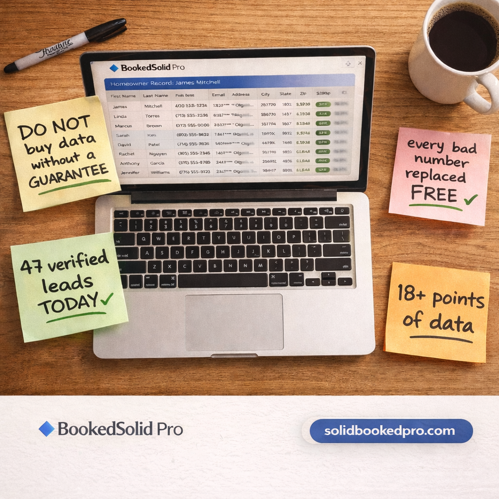
solidbookedpro.com/guarantee
Do NOT Buy Without a Guarantee.
Every bad number replaced free. No form. No waiting.
View Full Ad Copy
Do NOT buy homeowner data without a replacement guarantee.
🛑 Seriously. Don't. Because here's what happens without one:
❌ You download 10,000 records. Your team starts dialing Monday morning. By Wednesday, they've flagged 3,200 dead numbers. You email your provider. They send you a form. You fill it out. They "review" it.
😱 By next Friday — ten business days later — they offer you a 15% credit toward your next purchase. Of the same bad data.
🚨 That's not support. That's a recycling program for your frustration.
👀 "So expensive and credits don't even go past the month. You use or lose it." — PropStream reviewer
✅ We don't charge you for data that doesn't work.
🔒 Every bad number replaced. Free. Same day. No form, no ticket, no waiting.
💰 Your next list purchase is coming. You're going to spend $1,500, $3,000, maybe $5,000 — and without a guarantee, 30-40% of that is gone the moment you download.
➡️ That's not a prediction. That's what happened last time, and the time before that.
👉 You can see how the guarantee works before your next purchase — takes about 60 seconds.
AI Image Prompt (paste-ready)
BRAND STYLE: BookedSolid Pro — B2B data intelligence SaaS for professionals. COLOR PALETTE: Primary navy #0f172a, accent blue #2563eb, success green #22c55e, danger red #ef4444, navy text #0f172a, light gray #f1f5f9, medium gray #94a3b8. TYPOGRAPHY: Headlines use a modern serif font (like DM Serif Display) in bold weight. Body text uses a clean sans-serif (like Inter). LOGO: BookedSolid Pro in clean navy sans-serif with a small blue diamond icon before the text. OVERALL AESTHETIC: Post-it notes on desk with product. Flat-lay laptop surrounded by colorful sticky notes with handwritten messages. Authentic craft-made personality. RENDERING STYLE: Top-down flat-lay photograph. Photorealistic warm oak desk, laptop centered, 3-4 colorful post-its at casual angles. Handwritten black marker. Coffee cup and pen visible. Natural daylight. NOT digital mockup. COMPOSITION (1080x1080 square — single static image, NOT a carousel): BACKGROUND: Warm oak wood desk flat-lay. CENTER: Laptop showing BSP dashboard homeowner data visible. POST-IT NOTES (real physical sticky notes curled corners): YELLOW top-left slightly rotated: DO NOT buy data without a GUARANTEE bold black marker PINK top-right: BSP every bad number replaced FREE with green check drawn GREEN bottom-left overlapping laptop: 47 verified leads TODAY ORANGE bottom-right: use code LAUNCH large black marker COFFEE CUP top-right white mug half-visible. PEN black Sharpie next to yellow post-it. BOTTOM: White strip. BookedSolid Pro left, solidbookedpro.com right.
AI Video Storyboard (paste-ready)
AI VIDEO STORYBOARD — Ad 4.4 "Do NOT Buy Without a Guarantee" FORMAT: 9:16 vertical (1080x1920), 15 seconds, 30fps MOOD: Warning → Solution ── HOOK (0-3s) ────────────────────────── Off-white (#f8fafc). "DO NOT" DM Serif Display, 900 weight, 96pt, red (#ef4444), centered at 30%. Instant slam. At 0.6s: "BUY DATA" 72pt navy. At 1.2s: "WITHOUT A GUARANTEE." 56pt navy — "GUARANTEE" gets green underline drawing left-to-right (0.5s). At 2.5s: red 4px warning pulse borders entire frame for 2 frames. AUDIO: Alarm hit. Underline draw sound. ── THE CYCLE (3-7s) ────────────────────────── Editorial layout. Three red objection cards slide in from left (0.5s stagger, shake on landing): 1. Red bg (#fef2f2), 3px red left border: "Download 10,000 records." 2. "3,200 come back dead." 3. "Provider offers 15% credit... toward more bad data." At 6.0s: red recycling icon spins between cards — frustration loop. Quote: "'Credits don't even go past the month.' — PropStream reviewer" Inter 400, 14pt, italic. AUDIO: Frustration building. Recycling loop sound. ── THE ANSWER (7-11s) ────────────────────────── Green wipe bottom-to-top. Off-white to navy transition. Three green answer cards from right: 1. Green bg (#f0fdf4), 3px green border: "Every bad number replaced." 2. "No form. No ticket. No waiting." 3. "Same day. Free. No limit." Red arrows morph to green arrows connecting objections to answers. At 10s: red cards shrink/fade, green cards enlarge and center. AUDIO: Problem-to-solution resolution. ── CTA (11-15s) ────────────────────────── Navy. "BookedSolid Pro" logo 48pt. "Every bad number replaced free. No form. No waiting." Inter 500, 20pt. Blue CTA: "Build a Free List." Green shield icon beside CTA. AUDIO: Confident close. ── CONDENSED SINGLE-SHOT PROMPT ────────────────────────── 15-second vertical (1080x1920, 30fps). "DO NOT BUY DATA WITHOUT A GUARANTEE" warning on off-white. Three red objection cards (dead numbers, credits, frustration loop) morph via green arrows to three green solution cards (replaced, no waiting, no limit). End with logo + green shield CTA. Palette: off-white #f8fafc, red #ef4444, green #22c55e, navy #0f172a.
4.5
Replacement Guarantee: Trust / Risk Reversal
Sponsored
Direct Call-Out
Fraser #8 (Demographic Call-Out) + Oliver
Conversations, Not Dead Air.
Teams running 20+ seats on homeowner data:
Do the napkin math Nicole did. If 30% of your numbers are dead, that's 30% of your payroll dialing nothing. At 40 agents making 300 calls a day, that's 3,60...
See more
Conversations, Not Dead Air.
Trust / Confidence
Static 1080x1080
Format CSV
solidbookedpro.com/guarantee
Conversations, Not Dead Air.
$514K/year dialing dead air. There's a fix.
View Full Ad Copy
Teams running 20+ seats on homeowner data:
💰 Do the napkin math Nicole did. If 30% of your numbers are dead, that's 30% of your payroll dialing nothing. 😱 At 40 agents making 300 calls a day, that's 3,600 wasted dials — $1,980 in labor costs — every single day. $9,900 a week. $514,800 a year. ❌ Listening. To. Nothing.
🚨 That number should make someone in your finance department very uncomfortable.
👀 "Many numbers were disconnected, inaccurate, or unusable." — BBB complaint, PropStream
✅ We replace every disconnected or wrong number. 🔒 No threshold. No limit. No questions asked. 📞 Plus up to 4 contact channels per record — when one channel doesn't connect, you've got three more.
➡️ Your payroll should buy conversations. Not the sound of your agents staring at the ceiling between disconnected numbers.
📈 $514,800 a year. That number is real. It's accumulating right now — $9,900 this week, $1,980 today — while your team dials from the same unguaranteed list.
👉 You can see what guaranteed data looks like in about 60 seconds.
AI Image Prompt (paste-ready)
BRAND STYLE: BookedSolid Pro — B2B data intelligence SaaS for professionals. COLOR PALETTE: Primary navy #0f172a, accent blue #2563eb, success green #22c55e, danger red #ef4444, navy text #0f172a, light gray #f1f5f9, medium gray #94a3b8. TYPOGRAPHY: Headlines use a modern serif font (like DM Serif Display) in bold weight. Body text uses a clean sans-serif (like Inter). LOGO: BookedSolid Pro in clean navy sans-serif with a small blue diamond icon before the text. OVERALL AESTHETIC: Person with handwritten callouts — conversation/relationship focused. Person actually talking on phone engaged and successful. RENDERING STYLE: Warm photorealistic portrait with hand-drawn marker annotations. Natural lighting warm tones friendly energy. Person in active positive phone conversation not looking at screen. COMPOSITION (1080x1080 square — single static image, NOT a carousel): BACKGROUND: Warm natural office, soft-focus. Window light warm inviting. CENTER: Professional woman early 30s natural smile headset on, leaning back genuinely smiling, in middle of great conversation. One hand gesturing as she talks. Energized not stressed. HANDWRITTEN CALLOUTS (marker-style upbeat): Near smile: THIS is what verified data sounds like (green marker underlined) Arrow to headset: conversations not dead air (blue marker) Near gesture: she already knew his credit score (black marker circled) Bottom: 14 real conversations today check (green marker) TOP BANNER: Light cream #f5f0e8 strip: CONVERSATIONS NOT DEAD AIR. DM Serif Display 32pt navy. BOTTOM STRIP: White bar. BookedSolid Pro left blue diamond. Blue pill CTA solidbookedpro.com.
AI Video Storyboard (paste-ready)
AI VIDEO STORYBOARD — Ad 4.5 "Conversations, Not Dead Air" FORMAT: 9:16 vertical (1080x1920), 15 seconds, 30fps MOOD: Frustration Math → Transformation ── HOOK (0-3s) ────────────────────────── Navy (#0f172a). "CONVERSATIONS," DM Serif Display, 800 weight, 72pt, white, centered at 30%. At 0.8s: "NOT DEAD AIR." slams in — 72pt red (#ef4444), each letter vibrates (1px random offset, 0.3s). At 2.0s: flat red audio waveform (no signal, dead air) — 600px wide, 2px, red. AUDIO: 0.5s literal silence/static hiss, then cut. ── THE NAPKIN MATH (3-7s) ────────────────────────── Navy bg. White "napkin" square (500x500px), tilted 2°. Numbers write in handwriting-style: "40 agents x 300 calls = 12,000/day" (3.5s) "30% dead = 3,600 wasted dials" (4.5s, "3,600" red) "$22/hr x 3,600 = $1,980/day" (5.5s, "$1,980" red, underlined twice) "$514,800/year" circled aggressively in red (6.3s) Napkin pinned to dark wall. Nicole's napkin from the story. AUDIO: Pen-on-paper scratch. Circle emphasis. ── TRANSFORMATION (7-11s) ────────────────────────── Napkin burns away (edges-inward, 1s). Behind: dashboard mockup. Dead red waveform reappears, morphs into live green waveform — peaks and valleys, active conversation. Counter: "$1,980/day wasted" (red, strikethrough) morphs to "$0 wasted" (green). Four channel icons (phone blue, envelope green, @ purple, chat amber): "4 backup channels. Never lose a homeowner." Shield pulses green. AUDIO: Paper burn. Waveform comes alive. Confidence. ── CTA (11-15s) ────────────────────────── Navy. "BookedSolid Pro" logo 48pt. "Your payroll should buy conversations." Inter 500, 22pt. "Every dead number replaced. Guaranteed." Inter 400, 16pt, #94a3b8. Blue CTA: "Build a Free List." Green dots ascending. AUDIO: Clean resolution. ── CONDENSED SINGLE-SHOT PROMPT ────────────────────────── 15-second vertical (1080x1920, 30fps). "CONVERSATIONS, NOT DEAD AIR" with dead waveform on navy. Napkin math writes: 40 agents, 3,600 wasted dials, $514K/year circled in red. Napkin burns revealing dashboard — dead waveform morphs to live green. 4 channel icons + shield. End with logo + "payroll should buy conversations." Palette: navy #0f172a, red #ef4444, green #22c55e, blue #2563eb.
5
TCPA Time Bomb: Fear / Educational
Emotion: Fear / Urgency | 5 hook variations
5.1
TCPA Time Bomb: Fear / Educational
Sponsored
Question
Oliver (Metric+Magnitude) + Fraser #1 (Expose Truth)
$1,500 Per Violation. Compliant?
Can your business survive a $40 million TCPA lawsuit?
🚨 Keller Williams couldn't avoid one. Neither could Momentum Solar ($30M), Coldwell Banker ($20M), or SolarCity ($15M). These weren't...
See more
solidbookedpro.com/compliance
$1,500 Per Violation. Compliant?
DNC status on every record. Know before you dial.
View Full Ad Copy
Can your business survive a $40 million TCPA lawsuit?
🚨 Keller Williams couldn't avoid one. Neither could Momentum Solar ($30M), Coldwell Banker ($20M), or SolarCity ($15M). These weren't fly-by-night operations. These were industry leaders — with legal teams, compliance departments, and budgets bigger than yours.
📈 507 TCPA class actions were filed in Q1 2025 alone — a 112% increase over the previous year.
😱 That's 507 business owners who thought compliance was someone else's problem. Until the certified letter arrived.
💰 The penalty? Up to $1,500 per violation. If your team makes 100,000 calls without proper DNC scrubbing, your exposure isn't theoretical. It's $50 million to $150 million.
✅ Every BookedSolid Pro record includes DNC status. 🔒 Not as an upsell. It's in every file. Know before you dial.
⚡ Your team is making calls right now.
❌ Every number they dial without a DNC flag is another $1,500 added to your exposure. That number doesn't reset tomorrow. It compounds.
👉 You can check your compliance risk in about 60 seconds — before your team finishes today's list.
AI Image Prompt (paste-ready)
BRAND STYLE: BookedSolid Pro — B2B data intelligence SaaS for professionals. COLOR PALETTE: Primary navy #0f172a, accent blue #2563eb, success green #22c55e, danger red #ef4444, navy text #0f172a, light gray #f1f5f9, medium gray #94a3b8. TYPOGRAPHY: Headlines use a modern serif font (like DM Serif Display) in bold weight. Body text uses a clean sans-serif (like Inter). LOGO: BookedSolid Pro in clean navy sans-serif with a small blue diamond icon before the text. OVERALL AESTHETIC: Emotional photo with text overlay and urgency. Dark moody compliance-focused. Professional worried about TCPA. Single still image. RENDERING STYLE: Cinematic dark photography with bold text overlay. Deep navy/charcoal, dramatic side-lighting. Large urgent high-contrast text. NOT a motion graphic. COMPOSITION (1080x1080 square — single static image, NOT a motion graphic, NOT a video, NOT animated): BACKGROUND: Dark cinematic office. Professional man late 40s suit jacket at desk, looking at opened official letter concerned expression. Warm desk lamp dramatic side light. Papers scattered. OVERLAY TEXT (bottom 40% semi-transparent navy gradient): $1,500 DM Serif Display 80pt #ef4444 red centered. PER VIOLATION. Inter 800 28pt white. Gap 20px. Are you TCPA compliant? Inter 500 18pt white 80%. THOUGHT BUBBLE near head subtle: Did I check DNC status? CTA: Bottom center red pill #ef4444: Check Your Compliance Inter 700 14pt white. BOTTOM-LEFT: BookedSolid Pro white wordmark blue diamond. BOTTOM-RIGHT: solidbookedpro.com white.
AI Video Storyboard (paste-ready)
AI VIDEO STORYBOARD — Ad 5.1 FORMAT: 9:16 vertical (1080x1920), 15 seconds, 30fps MOOD: Fear to Safety MUSIC: Royalty-free, matches fear to safety arc ── HOOK (0-3s) ────────────────────────── Ticking clock overlaid on phone screen. Red warning icon pulses. Text: TCPA FINES: $500-$1,500 PER CALL. in DM Serif Display, 800 weight, red (#ef4444), centered. Eyebrow: COMPLIANCE ALERT in Inter 700. AUDIO: Alarm tone. Urgent percussion. ── AGITATE (3-7s) ────────────────────────── Calculator animation: 50 bad calls x $1,500 = $75,000 in potential fines. Court gavel slams. Real TCPA case headlines scroll. Text: Your list provider wont pay the fine. You will. in Inter 600, 24pt, white on dark red. AUDIO: Escalating tension. Strings. ── PROOF (7-11s) ────────────────────────── BookedSolid Pro DNC scrubbing animation: red flagged numbers removed in real-time, replaced with green verified records. Shield with DNC COMPLIANT badge. Text: Real-time DNC scrubbing built into every list. in Inter 700, 24pt, white on navy. AUDIO: Resolution. Safety tone. ── CTA (11-15s) ────────────────────────── Clean dashboard showing compliant list with zero DNC flags. Logo + shield. Text: You can check if your current list has DNC exposure -- takes 30 seconds, no commitment. in Inter 500, 20pt, white. AUDIO: Calm confidence. Brand tone. ── CONDENSED SINGLE-SHOT PROMPT ────────────────────────── 15-second vertical video (1080x1920, 30fps). Color palette: navy #0f172a, blue #2563eb, green #22c55e, white. Typography: DM Serif Display headlines, Inter body. Mood arc: Fear to Safety.
AI Video Storyboard (paste-ready)
SCENE 1 (0-3s): TEXT HOOK — Black screen. - "$40." appears center-screen, DM Serif Display, 900 weight, 140pt, white. Hold 0.6s. - "MILLION." appears below, same font, 100pt, white. Hold 0.6s. - "LAWSUIT." appears below, same font, 100pt, #ef4444 (red). The word shakes subtly (2px vibration, 4 frames). - At 2.5s: entire screen flashes RED for 2 frames (like a camera flash / alarm), then returns to black with all three words visible. - SFX: bass impact sound on each word. SCENE 2 (3-8s): SETTLEMENT CARDS — Navy (#0f172a) background. - Settlement cards fly in from different angles, stacking in the center: - Each card is 500x80px, bg #1e293b, border-radius 8px, red left border 3px. - Card 1 (from left): "KELLER WILLIAMS — $40M" in Inter 700, 20pt, white. Red gavel icon. - Card 2 (from right): "REALOGY — $6M" same style. - Card 3 (from bottom): "QUICKEN LOANS — $4.5M" same style. - Each card has a subtle "stamp" effect — a diagonal red "SETTLED" watermark at 20% opacity. - Cards stack with 8px overlap, creating a pile effect. - Counter in top-right: spinning numbers, settling on "$50M+" in red, Inter Mono. SCENE 3 (8-12s): THE MATH — White (#ffffff) screen. Hard cut. - Clean, stark contrast from the dark previous scene. - "$1,500" in DM Serif Display, 900 weight, 100pt, #ef4444 (red). Centered, upper third. - "per violation." in Inter 400, 24pt, #334155. Below. - A calculator-style equation fades in: "100,000 calls" (gray) × "$1,500" (red) = "$150,000,000" (red, bold, grows 10% on appearance). - The final number pulses once with a red glow. - Below: "exposure." in Inter 500, 20pt, #64748b. SCENE 4 (12-15s): BRAND CARD — Navy background. - Smooth transition (white screen slides up to reveal navy). - Shield icon with checkmark, green, 120x140px. Centered. - "DNC Status on Every Record." in Inter 600, 24pt, white. Below shield. - "BookedSolid Pro" logo, white, below. - CTA pill: blue, "Check Your Compliance" in white. - Reassurance: "Every record. Every time. Built-in." Inter 400, 16pt, #94a3b8.
5.2
TCPA Time Bomb: Fear / Educational
Sponsored
Bold Claim
Oliver (Metric+Magnitude+Timeframe)
507 Lawsuits in 90 Days.
507 TCPA class actions filed in Q1 2025. That's not a yearly number. That's 90 days.
A 112% increase over the previous year. Average settlement: $6.6 million — which sounds like a lot until you reali...
See more
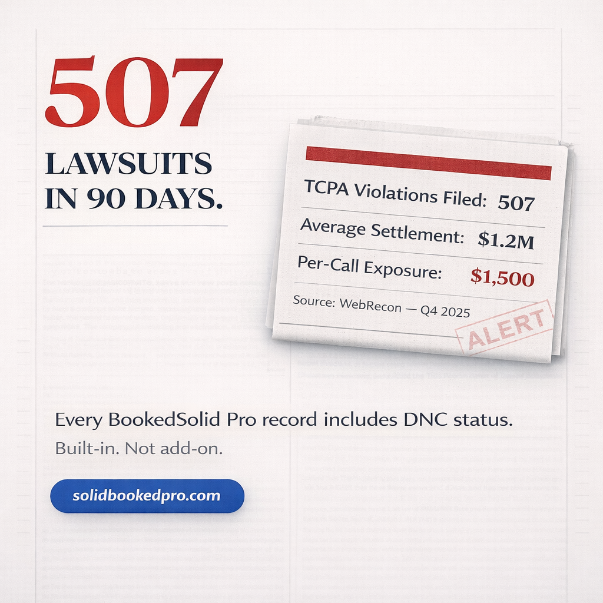
solidbookedpro.com/compliance
507 Lawsuits in 90 Days.
DNC status included. Every record. Not an upsell.
View Full Ad Copy
507 TCPA class actions filed in Q1 2025. That's not a yearly number. That's 90 days.
📈 A 112% increase over the previous year. 💰 Average settlement: $6.6 million — which sounds like a lot until you realize the Keller Williams one was $40 million. 🚨 These aren't nuisance suits. These are company-ending events.
❌ The penalty for a single non-compliant call: up to $1,500. 😱 One list of 100,000 homeowners without proper DNC scrubbing = up to $150 million in exposure. That's not a fine. That's a business. Gone.
🛑 And your list provider's terms of service? They say you're 100% responsible for compliance. Translation: when the lawsuit comes, they're not in the room with you.
✅ Every BookedSolid Pro record includes DNC status. 🔒 You see the flag before you dial — not after the certified letter arrives on your desk between your coffee and your call reports.
⚡ The 508th lawsuit was probably filed while you were reading this ad. TCPA attorneys don't take vacations. They take percentages.
👉 You can build a DNC-scrubbed list in about 60 seconds — before your team adds another hundred calls to your exposure.
AI Image Prompt (paste-ready)
BRAND STYLE: BookedSolid Pro — B2B data intelligence SaaS for professionals. COLOR PALETTE: Primary navy #0f172a, accent blue #2563eb, success green #22c55e, danger red #ef4444, navy text #0f172a, light gray #f1f5f9, medium gray #94a3b8. TYPOGRAPHY: Headlines use a modern serif font (like DM Serif Display) in bold weight. Body text uses a clean sans-serif (like Inter). LOGO: BookedSolid Pro in clean navy sans-serif with a small blue diamond icon before the text. OVERALL AESTHETIC: In-feed native ad Facebook post screenshot. Looks like real Facebook post in feed with page name post text image headline CTA reactions. RENDERING STYLE: Photorealistic Facebook feed screenshot. Complete FB UI: page photo, name, Sponsored, text, image, headline bar, Learn More button, reactions. COMPOSITION (1080x1080 square — single static image, NOT a carousel): BACKGROUND: Facebook feed gray #f0f2f5. FACEBOOK POST CARD (white full-width 12px margin rounded): HEADER: BSP blue diamond avatar. BookedSolid Pro bold 14pt. Sponsored globe gray 12pt. Three dots right. POST TEXT 14pt dark gray: 507 TCPA lawsuits were filed in just 90 days. Most defendants didnt know they were calling DNC numbers. Every lead in BookedSolid Pro includes real-time DNC status. No guessing. No risk. Your current list doesnt have this. POST IMAGE (16:9 inside card): Navy #0f172a bg. Large red 507 DM Serif Display 120pt #ef4444. Below: TCPA lawsuits in 90 days Inter 600 24pt white. Shield icon DNC-Verified badge green. HEADLINE BAR (below image light gray bg): SOLIDBOOKEDPRO.COM caps 11pt gray. Every Lead DNC-Verified. No Exceptions. bold 16pt. Blue Learn More button right. REACTIONS: thumbs up heart 1.2K 347 Comments 89 Shares.
AI Video Storyboard (paste-ready)
AI VIDEO STORYBOARD — Ad 5.2 "507 Lawsuits in 90 Days" FORMAT: 9:16 vertical (1080x1920), 15 seconds, 30fps MOOD: Alarm → Compliance Shield ── HOOK (0-3s) ────────────────────────── Off-white (#f8fafc) with faint newspaper column guides (5%). "507" slams on — DM Serif Display, 900 weight, 240pt, red (#ef4444), upper-left. Number shakes on impact (2px, 4 frames). At 1.0s: "LAWSUITS" Inter 800, 32pt, navy. "IN 90 DAYS." with red period. At 2.2s: "ALERT" watermark rotates in (red, 8%). AUDIO: Typewriter bell ding. ── NEWS TICKER (3-7s) ────────────────────────── Newspaper scrolls up revealing navy. Red ticker bar at top: "TCPA FILINGS UP 112% YOY | AVG SETTLEMENT: $6.6M | PER-CALL: $1,500 | SOURCE: WEBRECON Q4 2025." Legal filing card (640x480px, tilted -2°): TCPA Class Actions: 507 | Average Settlement: $6.6M | Per-Call Exposure: $1,500 (red). Source: WebRecon Q4 2025. Red ALERT stamp at 5.5s. AUDIO: News urgency. Ticker scroll. ── THE SOLUTION (7-11s) ────────────────────────── Navy. Red "507" reappears glowing. At 8s: green shield scales up from behind, covering the number. Shield locks (checkmark pulses). "DNC Status: Built Into Every Record." Inter 600, 22pt, white. "Not an add-on. Not an upsell. Standard." Inter 400, 16pt, #94a3b8. AUDIO: Shield lock. Safety resolution. ── CTA (11-15s) ────────────────────────── Navy. "BookedSolid Pro" logo 48pt. "Know before you dial." Inter 500, 22pt. Blue CTA: "Build a Free List." News ticker continues at top — persistent urgency. AUDIO: Confident close over ticker. ── CONDENSED SINGLE-SHOT PROMPT ────────────────────────── 15-second vertical (1080x1920, 30fps). Giant "507" slams on newspaper bg. News ticker with TCPA stats scrolling. Legal filing card with settlement amounts. Green shield rises covering the 507 — "DNC Status Built Into Every Record." End with logo + persistent ticker. Palette: off-white, red #ef4444, navy #0f172a, green #22c55e.
5.3
TCPA Time Bomb: Fear / Educational
Sponsored
Story
Tiana #8 (Social Proof) + Fraser #1 (Expose Truth)
The Letter That Changed Everything.
The certified letter arrived on a Monday.
The office manager signed for it and put it on the owner's desk — between his coffee and his call reports. He didn't open it until after lunch. He wished he ...
See more
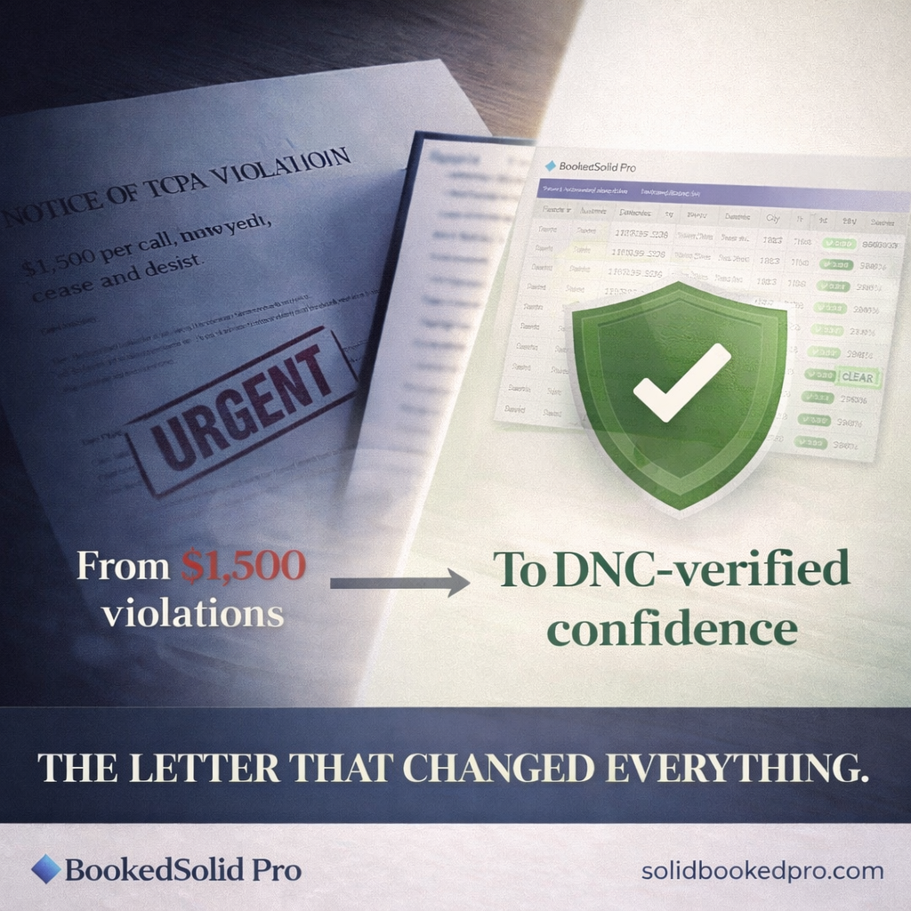
solidbookedpro.com/compliance
The Letter That Changed Everything.
DNC status on every record. Know before you dial.
View Full Ad Copy
The certified letter arrived on a Monday.
👀 The office manager signed for it and put it on the owner's desk — between his coffee and his call reports. He didn't open it until after lunch. He wished he hadn't.
😱 Keller Williams. $40 million. TCPA class action. Their crime? Making calls to consumers on the National Do Not Call Registry. The same registry their team had been dialing through for months because nobody checked.
💰 Momentum Solar: $30 million. Same thing. Coldwell Banker: $20 million. SolarCity: $15 million. 🚨 Four industry leaders. Four legal departments. Four compliance teams. ❌ All calling numbers they shouldn't have been calling.
🔒 "Fines for violations of the TCPA are steep, amounting to up to $1,500 per noncompliant call, text or fax." — Victor Insurance
✅ Every BookedSolid Pro record includes DNC status. Not optional — it's in every file you download.
⚡ The clock on TCPA violations doesn't start when you get sued. It started the day your team dialed the first unchecked number. ➡️ Every call since then is on the meter.
👉 You can check your compliance in about 60 seconds — before another day of unchecked calls adds to the tab.
AI Image Prompt (paste-ready)
BRAND STYLE: BookedSolid Pro — B2B data intelligence SaaS for professionals. COLOR PALETTE: Primary navy #0f172a, accent blue #2563eb, success green #22c55e, danger red #ef4444, navy text #0f172a, light gray #f1f5f9, medium gray #94a3b8. TYPOGRAPHY: Headlines use a modern serif font (like DM Serif Display) in bold weight. Body text uses a clean sans-serif (like Inter). LOGO: BookedSolid Pro in clean navy sans-serif with a small blue diamond icon before the text. OVERALL AESTHETIC: Pain-to-outcome transformation. Before/after split. Left dark threatening TCPA letter, right bright protected BSP shield. RENDERING STYLE: Split composition cinematic contrast. Left cold blue-gray threatening, right warm protective. Diagonal soft blend. Professional authoritative. COMPOSITION (1080x1080 square — single static image, NOT a carousel): LEFT HALF (threat dark): Dark navy-gray. Close-up of official legal letter on desk. Visible text: NOTICE OF TCPA VIOLATION, $1,500 per call, cease and desist. Red URGENT stamp. RIGHT HALF (protection light): Warm cream-white green tint. BSP dashboard showing lead record with DNC Status CLEAR highlighted green. Shield icon green checkmark overlaid. CENTER OVERLAY on diagonal: From $1,500 violations Inter 600 16pt red left. Arrow. To DNC-verified confidence Inter 600 16pt green right. BOTTOM: Navy bar. THE LETTER THAT CHANGED EVERYTHING. DM Serif Display 28pt white. solidbookedpro.com #2563eb.
AI Video Storyboard (paste-ready)
AI VIDEO STORYBOARD — Ad 5.3 "The Letter That Changed Everything" FORMAT: 9:16 vertical (1080x1920), 15 seconds, 30fps MOOD: Dread → Protection ── HOOK (0-3s) ────────────────────────── Dark charcoal (#111827). White envelope slides down from top, slow and ominous (1.5s drop). Red "CERTIFIED" stamp, legal letterhead visible through envelope (blurred). At 1.5s: envelope opens (flap animation). At 2.0s: "THE LETTER" DM Serif Display, 64pt, white. "THAT CHANGED EVERYTHING." 48pt, red (#ef4444). AUDIO: Heavy slow thud. Ominous low-frequency build. ── SETTLEMENT CASCADE (3-7s) ────────────────────────── Envelope dissolves. Dark bg. Settlement amounts cascade down like a market crash: "Keller Williams" — "$40,000,000" (red, down-triangle icon) "Momentum Solar" — "$30,000,000" "Coldwell Banker" — "$20,000,000" "SolarCity" — "$15,000,000" Entries arrive 0.6s apart. At 6.2s: "..." then "YOURS?" Inter 800, 28pt, red. Blinking cursor. Warning triangle (400x400px) behind at 6%. AUDIO: Descending crash tones. Dread building. ── THE SHIELD (7-11s) ────────────────────────── Green wipe from bottom. Navy bg. Settlement list ghosted at 5% behind. Green shield (280x340px) rises from bottom, covering ghost list. Shield locks. Text: "DNC STATUS" Inter 800, 16pt, green. "On every record." Inter 500, 22pt, white. "Before you dial." same. "Not after the letter arrives." Inter 400, 16pt, #94a3b8. AUDIO: Shield rise. Ominous resolves to confidence. ── CTA (11-15s) ────────────────────────── Navy with dark green strip (#0f4a2a) at bottom. Logo 48pt. "Know before you dial." Inter 500, 22pt. Green strip: shield + "DNC Compliance Built Into Every Record." Green outline CTA: "Build a Free List." AUDIO: Clean confident resolution. ── CONDENSED SINGLE-SHOT PROMPT ────────────────────────── 15-second vertical (1080x1920, 30fps). Certified envelope drops ominously. Opens to reveal settlement cascade (Keller Williams $40M, etc.) ending with "YOURS?" Green shield rises covering the settlements. "DNC status on every record. Before you dial." End with logo + compliance bar. Palette: charcoal #111827, red #ef4444, navy #0f172a, green #22c55e.
5.4
TCPA Time Bomb: Fear / Educational
Sponsored
Pattern Interrupt
Tiana #11 + Jared (Emotion: Fear)
Every Call Is a $1,500 Bet.
Every cold call you make without checking DNC status is a $1,500 bet.
❌ Your closer picks up the phone. Dials. It rings. Someone answers. They pitch. Hang up. Next number. They do this 300 times a...
See more
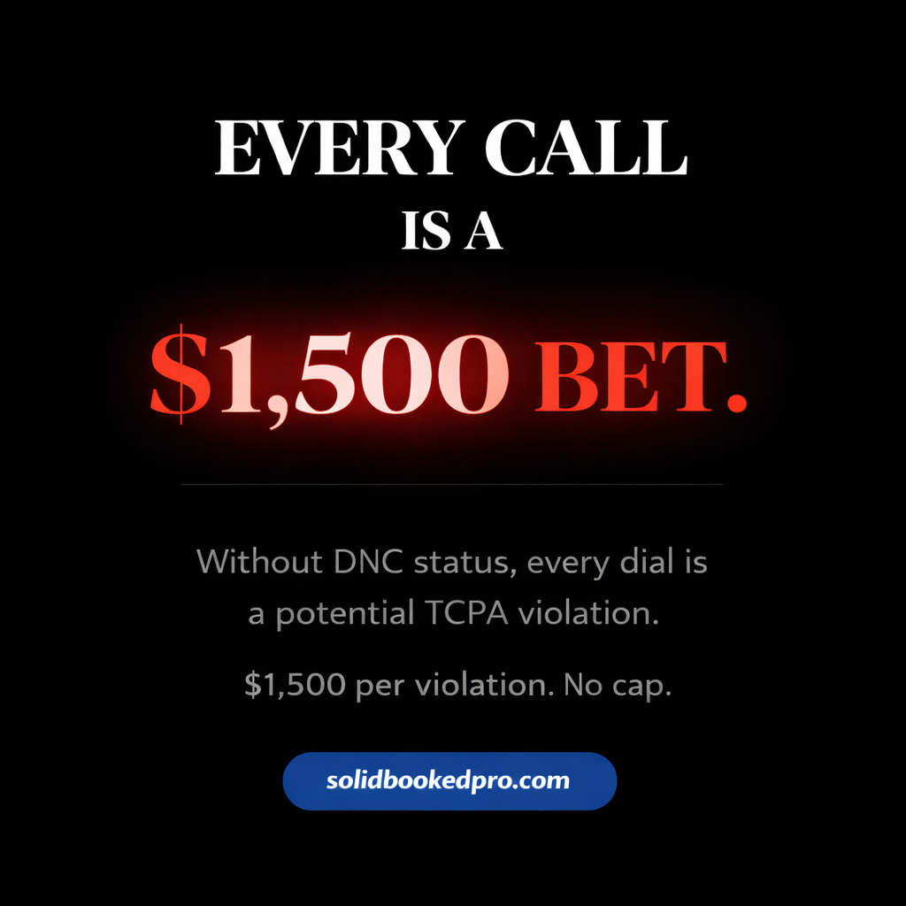
solidbookedpro.com/compliance
Every Call Is a $1,500 Bet.
DNC status included. Standard. Every file.
View Full Ad Copy
Every cold call you make without checking DNC status is a $1,500 bet.
❌ Your closer picks up the phone. Dials. It rings. Someone answers. They pitch. Hang up. Next number. They do this 300 times a day. Routine.
🚨 Except one of those numbers belongs to someone on the Do Not Call Registry. And that person doesn't yell, doesn't hang up, doesn't complain to your manager. They call a TCPA attorney. Who files a class action. Against you. 🛑 Not your list provider — you. Because their terms say "you are 100% responsible for compliance."
👀 But here's what your provider won't tell you: most of them don't even scrub the full DNC list. One admitted they "only scrub active litigators, not the complete DNC list."
✅ Every BookedSolid Pro record includes DNC status. 🔒 Not as an upsell. Not as an add-on. Standard. Every file.
💰 Your team made 300 calls today. If 5% were on the DNC registry, that's 15 violations. $22,500 in exposure. 📈 Tomorrow it'll be $45,000. By Friday: $112,500. 😱 That's one week. One team. One list nobody checked.
👉 You can see what compliant data looks like in about 60 seconds — before this week's tab gets any larger.
AI Image Prompt (paste-ready)
BRAND STYLE: BookedSolid Pro — B2B data intelligence SaaS for professionals. COLOR PALETTE: Primary navy #0f172a, accent blue #2563eb, success green #22c55e, danger red #ef4444, navy text #0f172a, light gray #f1f5f9, medium gray #94a3b8. TYPOGRAPHY: Headlines use a modern serif font (like DM Serif Display) in bold weight. Body text uses a clean sans-serif (like Inter). LOGO: BookedSolid Pro in clean navy sans-serif with a small blue diamond icon before the text. OVERALL AESTHETIC: Bold text-only stark urgent. Pure typography on white — looks like legal warning not ad. $1,500 figure dominates. RENDERING STYLE: Stark typography on white. No images no product. Numbers sell. Red and navy maximum contrast urgency. COMPOSITION (1080x1080 square — single static image, NOT a carousel): BACKGROUND: White #ffffff. TEXT (centered): Line 1: Every call in Inter 500 28pt #64748b gray. Line 2: is a $1,500 bet. DM Serif Display 64pt #ef4444 red. 32px gap. Line 3: Unless you know their DNC status. Inter 600 22pt navy #0f172a. 48px gap. Line 4: BookedSolid Pro: DNC-verified. Inter 700 20pt #22c55e green. Line 5: Every lead. Every time. Inter 500 16pt #64748b. BOTTOM: Thin navy line 60% width centered. solidbookedpro.com #2563eb Inter 600 16pt. NO images. NO icons. Text only.
AI Video Storyboard (paste-ready)
AI VIDEO STORYBOARD — Ad 5.4 "Every Call Is a $1,500 Bet" FORMAT: 9:16 vertical (1080x1920), 15 seconds, 30fps MOOD: Risk Escalation → Compliance Fix ── HOOK (0-3s) ────────────────────────── Pure black (#000000). "EVERY CALL" DM Serif Display, 900 weight, 80pt, white, centered at 25%. At 0.6s: "IS A" 56pt white. At 1.0s: "$1,500 BET." slams in — 120pt, red (#ef4444). LARGEST element. Red radial glow (8%, 400px) throbs like heartbeat, pulsing twice. At 2.5s: thin white separator line draws. AUDIO: Two heartbeat thuds synced to glow. ── THE METER (3-7s) ────────────────────────── Black bg. Vertical exposure meter (80x800px, centered) — thermometer style. Red fill rises as counter ticks: "DAY 1: $22,500" (5%) → "DAY 2: $45,000" (10%) → "WEEK 1: $112,500" (25%) → "MONTH 1: $450,000" (50%) Fill accelerates. At 6.5s: meter overflows — red liquid spills over top. "NO CAP." Inter 800, 24pt, red. "Without DNC status, every dial adds to the tab." Inter 400, 16pt, #64748b. AUDIO: Rising urgency. Overflow splash. ── THE FIX (7-11s) ────────────────────────── Navy (#0f172a). Overflowing meter shrinks left, grays out. Right: compliance dashboard — record with "DNC: CLEAR" green badge, shield icon pulsing. Three lines: "DNC status on every record" | "Standard. Not add-on." | "Know before your team dials" — green checkmarks. At 9.5s: gray meter shatters (glass break, pieces fall off-screen). "$1,500 per violation. No cap. Unless you check first." Inter 500, 18pt, #94a3b8. AUDIO: Glass shatter. Clean confidence. ── CTA (11-15s) ────────────────────────── Black. Logo 48pt. "DNC status included. Every record. Every file." Inter 500, 20pt. Blue CTA: "Build a Free List." "$1,500" from Scene 1 reappears tiny (16pt, #333) in bottom corner — subtle reminder. AUDIO: Resolute close. ── CONDENSED SINGLE-SHOT PROMPT ────────────────────────── 15-second vertical (1080x1920, 30fps). "$1,500 BET" with heartbeat red glow on black. Vertical exposure meter fills and overflows (Day 1 → Month 1, no cap). Meter grays/shatters while compliance dashboard shows DNC CLEAR. End with logo + tiny $1,500 reminder. Palette: black, red #ef4444, navy #0f172a, green #22c55e.
5.5
TCPA Time Bomb: Fear / Educational
Sponsored
Direct Call-Out
Fraser #8 (Demographic Call-Out) + Tiana #9 (Do NOT Buy Unless)
Do NOT Dial Without DNC Status.
Outbound teams making 1,000+ calls a day:
🚨 Your list provider's terms say you're responsible for DNC compliance. But did they actually scrub the full registry — or just the known litigators?
👀 Ask...
See more
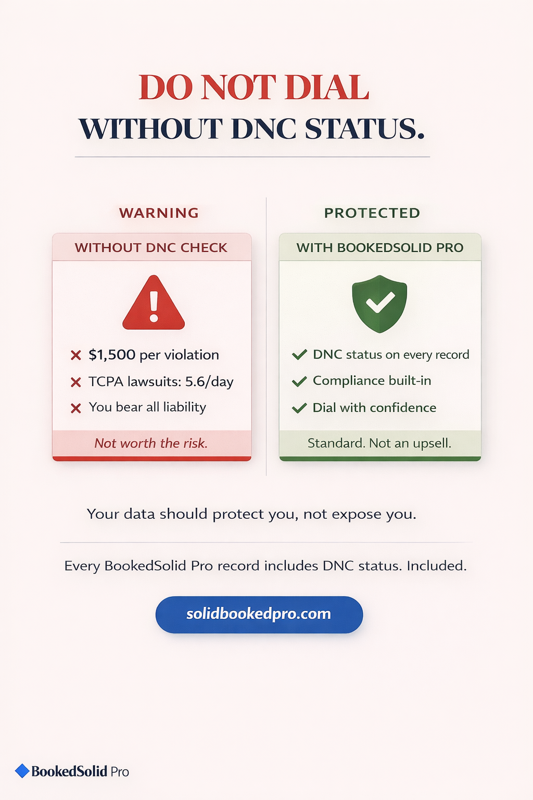
solidbookedpro.com/compliance
Do NOT Dial Without DNC Status.
DNC included on every record. Standard. Not an upsell.
View Full Ad Copy
Outbound teams making 1,000+ calls a day:
🚨 Your list provider's terms say you're responsible for DNC compliance. But did they actually scrub the full registry — or just the known litigators?
👀 Ask them. Watch how long it takes them to answer. That pause is the sound of your legal exposure.
❌ Most providers don't scrub the complete DNC list. They scrub the serial filers — the people who've already sued — and leave everyone else in your file.
🛑 That means your team is still dialing numbers on the registry. They just haven't been caught yet.
💰 Keller Williams: $40M. Momentum Solar: $30M. Up to $1,500 per violation.
➡️ The clock doesn't start when you get sued. It started the day you dialed.
✅ Every BookedSolid Pro record includes DNC status as a standard data point. 🔒 Not an upsell. Not an add-on. It's in every file. Know before you dial.
⚡ Every hour your team dials from an unscrubbed list, the meter runs. 📈 TCPA attorneys are filing 5.6 cases per day. They don't need your team to call a thousand DNC numbers. They need one. And your list provider's terms already say it's your problem, not theirs.
👉 You can build a fully compliant list in about 60 seconds — before your team finishes today's calls.
AI Image Prompt (paste-ready)
BRAND STYLE: BookedSolid Pro — B2B data intelligence SaaS for professionals. COLOR PALETTE: Primary navy #0f172a, accent blue #2563eb, success green #22c55e, danger red #ef4444, navy text #0f172a, light gray #f1f5f9, medium gray #94a3b8. TYPOGRAPHY: Headlines use a modern serif font (like DM Serif Display) in bold weight. Body text uses a clean sans-serif (like Inter). LOGO: BookedSolid Pro in clean navy sans-serif with a small blue diamond icon before the text. OVERALL AESTHETIC: Bold color background with product + warning. Bright red/orange bg, centered white product card with DNC verification. Urgent color stops scroll. RENDERING STYLE: Bold flat design vibrant red-orange gradient bg. Central white card. Warning icon top. Emergency alert meets clean SaaS. COMPOSITION (1080x1080 square — single static image, NOT a carousel): BACKGROUND: Bold gradient #ef4444 red to #f97316 orange top to bottom. TOP: Warning triangle icon white 48px centered. DO NOT DIAL Inter 900 36pt white. WITHOUT DNC STATUS. Inter 700 24pt white 90%. CENTER CARD (640x380px white rounded 16px heavy shadow): BSP lead record: David Patel, (214) 555-7890 green check, DNC Status CLEAR green, Credit 720, Equity $168,000. Green badge Safe to Call. Comparison: Without BSP $1,500 gamble per call red. With BSP DNC-verified every lead green. BOTTOM: White text on red/orange. BookedSolid Pro wordmark. solidbookedpro.com.
AI Video Storyboard (paste-ready)
AI VIDEO STORYBOARD — Ad 5.5 "Do NOT Dial Without DNC Status" FORMAT: 9:16 vertical (1080x1920), 15 seconds, 30fps MOOD: Warning → Compliance Confidence ── HOOK (0-3s) ────────────────────────── Navy (#0f172a). "DO NOT DIAL" DM Serif Display, 800 weight, 80pt, white, centered at 25%. Red danger glow (6%, 300px) behind. At 0.8s: "WITHOUT" 56pt white. At 1.2s: "DNC STATUS." 64pt blue (#2563eb) — solution embedded in the warning. At 2.2s: red glow intensifies to 12%, red frame border flashes (2 frames). AUDIO: Emergency broadcast pulse, 0.3s. ── TWO SCENARIOS (3-7s) ────────────────────────── Screen splits vertically on navy: LEFT (440x700px): "WITHOUT DNC CHECK" red header. Phone + red warning triangle. Three red X lines: "$1,500 per violation" | "507 lawsuits in 90 days" | "Your provider says it's YOUR problem." 2px red border. Red danger bar bottom. RIGHT (at 4.5s): "WITH BOOKEDSOLID PRO" green header. Shield + checkmark. Three green checks: "DNC status on every record" | "Full compliance built-in" | "Dial with confidence." 2px green border. Green bar bottom. At 6.5s: left dims to 30%, right brightens with blue glow. AUDIO: Split comparison. Left tense, right confident. ── URGENCY COUNTER (7-11s) ────────────────────────── Panels shrink to top half. Bottom: live ticker on navy. "TCPA LAWSUITS FILED TODAY:" counter ticks 5 → 6. "Every hour your team dials unscrubbed = more exposure." types character-by-character. Ghost text: "Keller Williams $40M, Momentum Solar $30M" scrolling at 15%. "Your data should protect you, not expose you." Inter 500, 20pt, white. Bold fade. AUDIO: Ticker ticks. Resolve to confidence. ── CTA (11-15s) ────────────────────────── Navy. Logo 48pt. "DNC included on every record. Standard." Inter 500, 20pt. Blue CTA: "Build a Free List." Miniaturized left/right panels (160x100px) reappear above CTA — visual callback. AUDIO: Confident close. ── CONDENSED SINGLE-SHOT PROMPT ────────────────────────── 15-second vertical (1080x1920, 30fps). "DO NOT DIAL WITHOUT DNC STATUS" with red glow warning on navy. Split comparison: without DNC (violations, lawsuits) vs BookedSolid Pro (compliance, confidence). Live TCPA lawsuit counter ticking. End with logo + miniaturized comparison callback. Palette: navy #0f172a, red #ef4444, green #22c55e, blue #2563eb.
CHEEKY
Cheeky / Double Entendre (10 Ads — Law #20 + #23)
Personality-driven ads inspired by Graza and Snuff Co. Suggestive headlines on bold block colors — the data product visual delivers the punchline. Humor calibrated to core demo: male-dominated outbound sales floors, 25-45, call center culture.
6.1
Cheeky / Double Entendre: Personality / Humor
Sponsored
Double Entendre
Graza/Snuff Co style + Oliver (Metric+Magnitude)
Go Deeper Than Anyone Else
Most list providers barely scratch the surface. Quick in, quick out. Three fields and done.
We don't stop at 3. We go 18 deep. And we take our time — verifying every number, enriching every record, m...
See more

solidbookedpro.com/go-deeper
Go Deeper Than Anyone Else
In Your Market. 18 data points per record.
View Full Ad Copy
Most list providers barely scratch the surface. Quick in, quick out. Three fields and done.
🔥 We don't stop at 3. We go 18 deep. And we take our time — verifying every number, enriching every record, making sure every data point is where it's supposed to be before we hand it over.
📊 Credit range. Income level. Home value. Home age. Square footage. Mortgage status. DNC flag. 📞 Up to 4 contact channels. 💎 Some people say that's excessive. We say it's thorough.
❌ Your competitors are still working with the bare minimum. Fumbling around in the dark with a name and a phone number.
🚨 You don't have to settle for a shallow experience. ➡️ But while you're playing it surface-level, someone in your market is already going deep on the same homeowners. 🔒 And they're not sharing.
👉 You can go deep whenever you're ready — takes about 60 seconds. Don't wait until someone else gets there first.
AI Image Prompt (paste-ready)
BRAND STYLE: BookedSolid Pro — B2B data intelligence SaaS for professionals. COLOR PALETTE: Primary navy #0f172a, accent blue #2563eb, success green #22c55e, danger red #ef4444, navy text #0f172a, light gray #f1f5f9, medium gray #94a3b8. TYPOGRAPHY: Headlines use a modern serif font (like DM Serif Display) in bold weight. Body text uses a clean sans-serif (like Inter). LOGO: BookedSolid Pro in clean navy sans-serif with a small blue diamond icon before the text. OVERALL AESTHETIC: UGC Instagram Story native. Looks like real IG story from @bookedsolidpro. Poll sticker swipe-up. Organic not paid. RENDERING STYLE: IG Story format as 1080x1080. Full-bleed UGC photo with IG UI overlays: progress bar, username, poll sticker. Slightly imperfect natural lighting phone-shot. NOT polished studio. COMPOSITION (1080x1080 square — single static image, NOT a carousel): BACKGROUND: Full-bleed UGC photo of male professional late 20s casual hoodie sitting cross-legged on couch looking at laptop with sly grin. Natural ambient light apartment setting. IG STORY UI: TOP: Story progress bar 5 segments 3rd active. @bookedsolidpro blue verified badge 2h. LOCATION TAG: Houston TX. TEXT OVERLAY (IG text style white bg rounded): Going deeper than anyone else POLL STICKER centered IG-native: How deep do you go on your leads? Option A: Name + Phone basic 23%. Option B: 18 fields BSP deep 77% check. BOTTOM: See More swipe-up white. Laptop screen subtly shows BSP data.
AI Video Storyboard (paste-ready)
AI VIDEO STORYBOARD — Ad 6.1 "Go Deeper Than Anyone Else" FORMAT: 9:16 vertical (1080x1920), 15 seconds, 30fps MOOD: Curiosity / Innuendo → Product Reveal ── HOOK (0-3s) ────────────────────────── Background: Warm cream (#f5f0e8) full bleed. Text: "WE GO DEEPER THAN ANYONE ELSE." — DM Serif Display, 72px, Navy (#0f172a), centered vertically. Subtext: Small italic Inter 18px below: "...into your prospect's data." Motion: Text slams in from bottom (0.3s ease-out). Subtext fades in at 2.2s. AUDIO: Low bass thud on text slam. ── REFRAME (3-7s) ────────────────────────── Background: Cross-dissolve to Navy (#0f172a). Visual: Accordion-style UI mockup drops in. Five stacked layers, each a rounded card: Layer 1: "Name & Phone" — White Layer 2: "Property Type & Value" — Blue (#2563eb) 80% Layer 3: "Mortgage Balance & Equity" — Blue 60% Layer 4: "Income & Net Worth" — Blue 40% Layer 5: "Household Demographics" — Green (#22c55e) Glowing blue line traces down left edge connecting all five layers. Text: "18+ data points per record." — Inter SemiBold, 24px, White, bottom-center. AUDIO: Building groove. Each layer has a soft chime. ── PRODUCT (7-11s) ────────────────────────── Background: Navy holds. Visual: Phone mockup (iPhone frame) showing BookedSolid Pro dashboard with sample data table. Green checkmark badge pulses top-right. Text: "Every record. Every detail." — DM Serif Display, 36px, White, above phone. Subtext: "136M+ households. 50 states." — Inter Regular, 18px, Green (#22c55e), below phone. Stats counter animates 0 to 136M (1.5s). AUDIO: Confident beat. Data reveal tone. ── CTA (11-15s) ────────────────────────── Background: Navy solid. Logo: "BookedSolid Pro" — DM Serif Display, 48px, White, centered at 40%. Tagline: "Depth your competitors can't reach." — Inter Medium Italic, 20px, cream (#f5f0e8). CTA pill: Blue (#2563eb) fill, "Start Building Lists →" Inter Bold, 20px, White. URL: "solidbookedpro.com" — Inter Regular, 14px, White 60%. AUDIO: Warm resolution. Brand tone. ── CONDENSED SINGLE-SHOT PROMPT ────────────────────────── 15-second vertical video (1080x1920, 30fps). Open on warm cream bg with "WE GO DEEPER THAN ANYONE ELSE" slamming in, subtext reveals data context. Dissolve to navy with accordion data layers cascading open (5 layers of homeowner intel). Phone mockup shows dashboard with 136M+ counter. End with logo + "Depth your competitors can't reach" + blue CTA pill. Palette: navy #0f172a, blue #2563eb, green #22c55e, cream #f5f0e8. Mood: curiosity → product confidence.
6.2
Cheeky / Double Entendre: Personality / Humor
Sponsored
Double Entendre
Snuff Co style + Tiana #11 (It's Not X, It's Y)
Size Isn't Everything.
Relax. We're talking about data points.
❌ Most list providers hand you a name and a phone number and call it a "record."
🛑 That's not a record. That's a Post-It note. You wouldn't take a Post-It...
See more

solidbookedpro.com/go-deeper
Size Isn't Everything.
Name and phone number isn't intelligence. 18 fields is.
View Full Ad Copy
Relax. We're talking about data points.
❌ Most list providers hand you a name and a phone number and call it a "record."
🛑 That's not a record. That's a Post-It note. You wouldn't take a Post-It note to a $15,000 sales conversation — so why are you building your call list on one?
✅ We give you 18 data points per homeowner.
📊 Credit range. Income. Home value. Home age. Square footage. And more.
📞 Plus up to 4 ways to make contact.
🔥 Once you've experienced the full package, 3 fields feels... inadequate. 😏 And every day you stick with 3 fields, your competitor is enjoying the full 18. Awkward.
👉 You can see what you've been missing — takes about 60 seconds. 👀 Fair warning: you won't want to go back.
AI Image Prompt (paste-ready)
BRAND STYLE: BookedSolid Pro — B2B data intelligence SaaS for professionals. COLOR PALETTE: Primary navy #0f172a, accent blue #2563eb, success green #22c55e, danger red #ef4444, navy text #0f172a, light gray #f1f5f9, medium gray #94a3b8. TYPOGRAPHY: Headlines use a modern serif font (like DM Serif Display) in bold weight. Body text uses a clean sans-serif (like Inter). LOGO: BookedSolid Pro in clean navy sans-serif with a small blue diamond icon before the text. OVERALL AESTHETIC: Illustration + product. Humorous cartoon alongside photorealistic product screenshot. Bold headline connects them. RENDERING STYLE: Split — left playful cartoon flat vector bold outlines BSP brand colors, right photorealistic product screenshot. Funny relatable not corporate clip art. COMPOSITION (1080x1080 square — single static image, NOT a carousel): BACKGROUND: Light cream #f8f5f0 subtle grid. LEFT HALF: Cartoon salesperson at desk with exaggerated surprise looking at TINY paper lead list saying Name Bob Phone ???. Thought bubble Thats it?! Flat vector bold black outlines navy blue green fill. RIGHT HALF: Photorealistic BSP dashboard 18 visible data fields. Clean modern data-rich. Green 18 FIELDS badge corner. DIVIDER: Hand-drawn arrow from cartoon to dashboard with text: Upgrade from this to THIS. TOP: SIZE ISNT EVERYTHING. DM Serif Display 40pt navy centered. SUBHEAD: (But 18 fields definitely helps.) Inter 500 16pt #64748b. BOTTOM: BookedSolid Pro left, solidbookedpro.com right.
AI Video Storyboard (paste-ready)
AI VIDEO STORYBOARD — Ad 6.2 "Size Isn't Everything" FORMAT: 9:16 vertical (1080x1920), 15 seconds, 30fps MOOD: Provocation → Quality Reveal ── HOOK (0-3s) ────────────────────────── Background: Warm cream (#f5f0e8). Text: "SIZE ISN'T EVERYTHING." — DM Serif Display, 76px, Navy (#0f172a), centered. Motion: Text types in character-by-character (typewriter, 0.04s/char). Period lands with 2px screen shake. AUDIO: Typewriter clicks. Subtle punch on period. ── REFRAME (3-7s) ────────────────────────── Background: Wipe to Navy (#0f172a). Visual: Two data blocks stacked vertically: TOP — "THEM" (Red #ef4444 border): "500,000 Records" large, "Name + Address only" small. 2 grey dots. BOTTOM — "US" (Green #22c55e border): "50,000 Records" but "18+ data points each." 18 green dots pulsing in grid. Text: "It's what's inside that counts." — Inter SemiBold, 22px, cream, bottom. AUDIO: Building awareness. Dots pulse with soft pings. ── PRODUCT (7-11s) ────────────────────────── Background: Navy gradient. Visual: Bottom card expands full width. 18 data labels in 3-column grid: Phone, Email, Property Value, Mortgage, Equity, Income, Net Worth, Age, Household Size, Property Type, Year Built, Credit Range, Marital Status, Children, Homeowner Status, Length of Residence, Dwelling Type, Est. Home Value. Header: "Every record is loaded." — DM Serif Display, 36px, White. Badge: Green shield "Replacement Guarantee" — Inter Medium, 16px. AUDIO: Confident reveal. Grid items chime in. ── CTA (11-15s) ────────────────────────── Logo: "BookedSolid Pro" — DM Serif Display, 48px, White. Tagline: "Quality over quantity. Always." — Inter Medium Italic, 20px, cream. CTA pill: Blue (#2563eb), "Build Your First List →" Inter Bold, 20px, White. URL: "solidbookedpro.com" — Inter Regular, 14px, White 60%. AUDIO: Clean resolution. ── CONDENSED SINGLE-SHOT PROMPT ────────────────────────── 15-second vertical video (1080x1920, 30fps). Typewriter "SIZE ISN'T EVERYTHING" on cream. Wipe to navy with side-by-side comparison: 500K records with 2 fields (red) vs 50K with 18 fields (green, pulsing dots). Green card expands showing all 18 data labels in grid. End with logo + "Quality over quantity" + blue CTA. Palette: navy #0f172a, blue #2563eb, green #22c55e, red #ef4444.
6.3
Cheeky / Double Entendre: Personality / Humor
Sponsored
Double Entendre
Graza personality + Tiana #7 (3 Reasons)
We Give Too Much.
We know. It's a lot. People tell us to hold back. "Nobody needs all that," they say.
🔥 But we can't help ourselves.
📊 Credit range. Income level. Home value. Home age. Square footage. Property...
See more

solidbookedpro.com/go-deeper
We Give Too Much.
18+ data points per record. We don
View Full Ad Copy
We know. It's a lot. People tell us to hold back. "Nobody needs all that," they say.
🔥 But we can't help ourselves.
📊 Credit range. Income level. Home value. Home age. Square footage. Property type. Mortgage status. DNC flag. 📞 Phone. Cell. Email. Mailing address. 💎 And six more where those came from.
👀 Is it too much? Maybe.
✅ Does your closer complain about having too much intel before a call? No. No they don't.
Nobody in the history of outbound sales has ever said "I wish I knew LESS about this homeowner."
➡️ We just don't know how to do less. Some might call it a problem.
📈 Your connect rate calls it a solution.
🚨 And every day you settle for less, you're leaving conversations — and commissions — on the table.
👉 You can experience the full thing whenever you're ready — takes about 60 seconds. Your team will wonder why you waited.
AI Image Prompt (paste-ready)
BRAND STYLE: BookedSolid Pro — B2B data intelligence SaaS for professionals. COLOR PALETTE: Primary navy #0f172a, accent blue #2563eb, success green #22c55e, danger red #ef4444, navy text #0f172a, light gray #f1f5f9, medium gray #94a3b8. TYPOGRAPHY: Headlines use a modern serif font (like DM Serif Display) in bold weight. Body text uses a clean sans-serif (like Inter). LOGO: BookedSolid Pro in clean navy sans-serif with a small blue diamond icon before the text. OVERALL AESTHETIC: Post-it notes with product flat-lay. Cheeky post-it messages around laptop showing BSP data. Playful authentic. RENDERING STYLE: Top-down flat-lay photograph. Light birch wood desk laptop centered colorful post-its playful angles. Coffee ring stain. Real handwritten marker slightly messy. NOT digital. COMPOSITION (1080x1080 square — single static image, NOT a carousel): BACKGROUND: Light birch wood desk flat-lay. CENTER: Laptop showing BSP dashboard multiple homeowner records. POST-IT NOTES: YELLOW top-left rotated 5deg: we give TOO much in bold black marker HOT PINK top-right rotated -8deg: 18 data fields per lead... youre welcome BLUE bottom-left: Credit score check Equity check DNC check Income check GREEN bottom-right overlapping laptop: other providers name + phone LOL PROPS: Coffee mug top-right Data > Feelings printed. Black Sharpie next to blue post-it. BOTTOM STRIP: White bar. BookedSolid Pro left, solidbookedpro.com right.
AI Video Storyboard (paste-ready)
AI VIDEO STORYBOARD — Ad 6.3 "We Give Too Much" FORMAT: 9:16 vertical (1080x1920), 15 seconds, 30fps MOOD: Generosity / Excess → Product Depth ── HOOK (0-3s) ────────────────────────── Background: Warm cream (#f5f0e8). Text: "WE GIVE TOO MUCH." — DM Serif Display, 72px, Navy (#0f172a), centered. Subtext at 1.8s: "At least that's what they tell us." — Inter Regular Italic, 18px, burnt orange (#c2410c). Motion: Text drops in with gravity bounce (0.4s). AUDIO: Generous tone. Warm hit. ── REFRAME (3-7s) ────────────────────────── Background: Navy (#0f172a). Visual: Data card (white, centered) literally overflowing — rows spill past the bottom edge like a waterfall of data. Inside card: Name, Phone (mobile), Phone (landline), Email, Address. Overflowing below: Property Value, Mortgage, Equity %, Income, Net Worth, Credit Range, Age, Marital Status, Children, Dwelling Type, Year Built, Length of Residence, Homeowner Status. Text: "18+ data points. Every single record." — Inter SemiBold, 20px, Green (#22c55e). AUDIO: Cascading chimes as rows overflow. ── PRODUCT (7-11s) ────────────────────────── Background: Navy. Visual: Overflowing card shrinks to corner. Phone mockup shows Build & Buy interface — state dropdown, county filter, record count slider. Text: "Self-serve. Filter by state, county, or ZIP." — DM Serif Display, 32px, White. Stat bar: "136M+ Records" | "50 States" | "$0.04/record" in blue pills. AUDIO: Confident. Platform reveal. ── CTA (11-15s) ────────────────────────── Logo: "BookedSolid Pro" — DM Serif Display, 48px, White. Tagline: "Too much data? No such thing." — Inter Medium Italic, 20px, cream. CTA pill: Blue (#2563eb), "Get Your List Now →" Inter Bold, 20px, White. AUDIO: Playful resolution. ── CONDENSED SINGLE-SHOT PROMPT ────────────────────────── 15-second vertical (1080x1920, 30fps). "WE GIVE TOO MUCH" drops on cream, subtext reveals data context. Cut to navy with data card overflowing — 18+ rows cascade past card borders like a waterfall. Shrinks to reveal phone dashboard with state/county filters. End with logo + "Too much data? No such thing." Palette: navy #0f172a, blue #2563eb, green #22c55e, cream #f5f0e8.
6.4
Cheeky / Double Entendre: Personality / Humor
Sponsored
Double Entendre
Snuff Co punchline style + Oliver (Sell Destination)
Finish Faster.
Your team dials 200 numbers to reach 40 homeowners. That's 160 wasted calls before lunch. 160 times your closer heard dead air, said "wrong number, sorry," or left a voicemail that nobody will ever ch...
See more

solidbookedpro.com/go-deeper
Finish Faster.
Reach the right homeowner on the first dial. Not the 47th.
View Full Ad Copy
Your team dials 200 numbers to reach 40 homeowners. That's 160 wasted calls before lunch.
❌ 160 times your closer heard dead air, said "wrong number, sorry," or left a voicemail that nobody will ever check.
😱 By 2pm, they're not selling. They're surviving. Eyes glazed. Script mechanical. 🚨 The energy that closed deals at 9am is gone — burned up by 160 rejections that weren't even rejections. They were just bad data.
✅ What if every number connected? 📊 What if your closer already knew the home value, credit range, and income level before they picked up the phone? 🔥 What if "hello" actually meant the start of a conversation — not another coin flip?
⚡ Reach the right homeowner on the first dial. Not the 47th. ➡️ And definitely not tomorrow's 47th, and the 47th after that.
💰 Every day your team grinds through 160 wasted dials is a day they'll never get back — and neither will you.
👉 You can see what fast feels like — takes about 60 seconds.
AI Image Prompt (paste-ready)
BRAND STYLE: BookedSolid Pro — B2B data intelligence SaaS for professionals. COLOR PALETTE: Primary navy #0f172a, accent blue #2563eb, success green #22c55e, danger red #ef4444, navy text #0f172a, light gray #f1f5f9, medium gray #94a3b8. TYPOGRAPHY: Headlines use a modern serif font (like DM Serif Display) in bold weight. Body text uses a clean sans-serif (like Inter). LOGO: BookedSolid Pro in clean navy sans-serif with a small blue diamond icon before the text. OVERALL AESTHETIC: Dark premium typography. Navy bg sophisticated serif headline. Cheeky copy contrasts classy design. Minimal text and brand only. RENDERING STYLE: Premium dark editorial. Deep navy bg cream/gold text generous whitespace. Luxury brand ad with cheeky headline. Minimal sophisticated surprising. COMPOSITION (1080x1080 square — single static image, NOT a carousel): BACKGROUND: Deep navy #0f172a subtle linen texture 3%. TEXT (centered generous spacing): Eyebrow: HOMEOWNER DATA Inter 600 11pt #94a3b8 letter-spacing 0.2em. Blue diamond accent. Headline: Finish Faster. DM Serif Display 72pt white. Subhead: 18 fields means fewer dials more deals. Inter 400 20pt #94a3b8. 48px gap. Thin line #334155 40% width. BookedSolid Pro Inter 600 14pt white. solidbookedpro.com #2563eb 13pt. NO images. Typography only. Dark premium.
AI Video Storyboard (paste-ready)
AI VIDEO STORYBOARD — Ad 6.4 "Finish Faster" FORMAT: 9:16 vertical (1080x1920), 15 seconds, 30fps MOOD: Speed / Urgency → Efficiency Reveal ── HOOK (0-3s) ────────────────────────── Background: Burnt orange (#c2410c) full bleed — hot, urgent energy. Text: "FINISH FASTER." — DM Serif Display, 80px, White, dead center. Motion: Punch-zoom from 200% to 100% (0.25s). Screen flash on impact. AUDIO: Punchy bass drop. Energy hit. ── REFRAME (3-7s) ────────────────────────── Background: Wipe to Navy (#0f172a). Visual: Split comparison top/bottom: TOP — "The Old Way" (Red tint): Icons: Googling → Spreadsheet → Skip tracing → CRM import → Cleaning. Red X on each. Timer: "4+ hours" BOTTOM — "BookedSolid Pro" (Green tint): Single icon: Click → Download. Timer: "Under 5 minutes" Text: "Build a 10,000-record list before your coffee gets cold." — Inter SemiBold, 20px, White. AUDIO: Speed comparison. Tick-tock accelerates. ── PRODUCT (7-11s) ────────────────────────── Background: Navy gradient. Visual: Phone mockup showing completed order: "Georgia — 12,500 records — Download Ready" with green download button pulsing. Progress ring 0-100% green fill. Text: "CSV export. CRM-ready. Instant." — DM Serif Display, 32px, White. Badge: "Replacement Guarantee" green shield below. AUDIO: Satisfaction tone. Speed confirmed. ── CTA (11-15s) ────────────────────────── Logo: "BookedSolid Pro" — DM Serif Display, 48px, White. Tagline: "Built for speed. Not shortcuts." — Inter Medium Italic, 20px, cream. CTA pill: Blue (#2563eb), "Start Building Lists →" Inter Bold, 20px, White. AUDIO: Confident resolution. ── CONDENSED SINGLE-SHOT PROMPT ────────────────────────── 15-second vertical (1080x1920, 30fps). "FINISH FASTER" punches in on burnt orange bg. Wipe to navy with speed comparison: old way (4+ hours, red Xs) vs BookedSolid Pro (5 min, green check). Phone shows completed download with 100% progress ring. End with logo + "Built for speed." Palette: orange #c2410c, navy #0f172a, blue #2563eb, green #22c55e.
6.5
Cheeky / Double Entendre: Personality / Humor
Sponsored
Double Entendre
Graza/Snuff Co tone + Tiana #1 (Pain Point Gone)
Stop Chasing Ghosts.
You dial. No answer. You dial again. Disconnected. You leave a voicemail that nobody will ever hear. You check the next number. Also dead. You stare at the ceiling for three seconds, put your headset...
See more

solidbookedpro.com/go-deeper
Stop Chasing Ghosts.
Every number verified. Every dead number replaced.
View Full Ad Copy
You dial. No answer. You dial again. Disconnected. You leave a voicemail that nobody will ever hear. You check the next number. Also dead. You stare at the ceiling for three seconds, put your headset back on, and dial again.
👀 Sound familiar? You've been ghosted — by your own data.
❌ Your list provider sold you those numbers, took your money, and disappeared. 🛑 No replacements. No accountability. No way to reach the homeowner through any other channel. No "sorry." Just silence.
✅ We verify every number before delivery. 🔒 The ones that slip through? Replaced. Free. No ticket. No hold music. No ghosting.
📞 Plus up to 4 contact channels per record. Phone doesn't work? You've still got cell, email, and mailing address.
🔥 Unlike your last list source — we actually stick around after the first date.
🚨 But here's the thing about being ghosted by your data: while you're getting stood up, your competitor is on a second date with the same homeowners. ➡️ And things are getting serious.
👉 You can see what commitment looks like — takes about 60 seconds.
AI Image Prompt (paste-ready)
BRAND STYLE: BookedSolid Pro — B2B data intelligence SaaS for professionals. COLOR PALETTE: Primary navy #0f172a, accent blue #2563eb, success green #22c55e, danger red #ef4444, navy text #0f172a, light gray #f1f5f9, medium gray #94a3b8. TYPOGRAPHY: Headlines use a modern serif font (like DM Serif Display) in bold weight. Body text uses a clean sans-serif (like Inter). LOGO: BookedSolid Pro in clean navy sans-serif with a small blue diamond icon before the text. OVERALL AESTHETIC: In-feed native Facebook post screenshot. Ghost-themed visual playing on chasing ghosts double meaning. Organic feel. RENDERING STYLE: Photorealistic Facebook feed screenshot with full FB UI chrome. COMPOSITION (1080x1080 square — single static image, NOT a carousel): BACKGROUND: Facebook feed gray #f0f2f5. FACEBOOK POST CARD (white rounded full-width margins): HEADER: BSP avatar + BookedSolid Pro bold + Sponsored globe gray. POST TEXT: Stop chasing ghosts. 47% of the numbers on your current list are disconnected. Thats not a lead list thats a haunted house. BookedSolid Pro: Every number verified. Every ghost exorcised. POST IMAGE: Light gray #f1f5f9 bg. Playful cartoon ghost white classic sheet-ghost with 555-0000 on body and red DISCONNECTED stamp. Next to it solid confident human figure holding phone with green check VERIFIED badge. Text below: From ghosts to guaranteed connections Inter 600 navy. HEADLINE BAR: SOLIDBOOKEDPRO.COM. Every Bad Number Replaced Free. No Exceptions. Blue Learn More button. REACTIONS: laughing heart thumbs up 2.1K 512 Comments 143 Shares.
AI Video Storyboard (paste-ready)
AI VIDEO STORYBOARD — Ad 6.5 "Stop Chasing Ghosts" FORMAT: 9:16 vertical (1080x1920), 15 seconds, 30fps MOOD: Frustration → Verified Relief ── HOOK (0-3s) ────────────────────────── Background: Navy (#0f172a) with faint fog/mist overlay (white 5%, drifting right). Text: "STOP CHASING GHOSTS." — DM Serif Display, 72px, White, centered. Visual: 3-4 translucent ghost silhouettes (white 15%) float upward behind text. AUDIO: Eerie ambient. Fog vibes. ── REFRAME (3-7s) ────────────────────────── Background: Navy, fog clears. Visual: Phone dialer showing three sequential states: 1. "Disconnected" — Red flash, ghost icon (0:03.5) 2. "Wrong Number" — Red flash, ghost (0:04.5) 3. "Connected — Homeowner Verified" — Green glow, ghost dissolves (0:05.5) Text: "Dead numbers kill your dial session." (Red) → "Verified data keeps you closing." (Green) AUDIO: Two failure tones then bright success chime. ── PRODUCT (7-11s) ────────────────────────── Background: Navy gradient. Visual: Phone shows BookedSolid Pro data table — every row has green checkmark in Phone Status column. Green shield badge: "Replacement Guarantee." Text: "Every number backed by our replacement guarantee." — DM Serif Display, 30px, White. Stat: "136M+ verified households" — Inter Bold, 18px, Green. AUDIO: Trust tone. Confidence. ── CTA (11-15s) ────────────────────────── Logo: "BookedSolid Pro" — DM Serif Display, 48px, White. Tagline: "Real people. Real numbers. Real results." — Inter Medium Italic, 20px, cream. CTA pill: Green (#22c55e), "Build a Verified List →" Inter Bold, 20px, White. AUDIO: Clean resolution. ── CONDENSED SINGLE-SHOT PROMPT ────────────────────────── 15-second vertical (1080x1920, 30fps). "STOP CHASING GHOSTS" on navy with fog and floating ghost silhouettes. Phone shows 3 dials: 2 disconnected (ghosts appear) then 1 connected (ghost dissolves, green glow). Dashboard with all-green verified status. End with logo + green CTA. Palette: navy #0f172a, green #22c55e, red #ef4444.
6.6
Cheeky / Double Entendre: Personality / Humor
Sponsored
Double Entendre
Snuff Co personality + Tiana #10 (Finally)
Get Lucky
Luck has nothing to do with it.
When every record comes with a complete profile and verified contact info, "getting lucky" is just called Tuesday. Your closer picks up the phone, already knows the ho...
See more

solidbookedpro.com/go-deeper
Get Lucky
On Every Dial. It's not luck — it's verified data.
View Full Ad Copy
Luck has nothing to do with it.
✅ When every record comes with a complete profile and verified contact info, "getting lucky" is just called Tuesday. 📊 Your closer picks up the phone, already knows the homeowner's income range, credit tier, and home value — 🔥 and when they hear "hello," they're not crossing their fingers. They're opening with confidence.
❌ No more praying the number works. No more crossing your fingers on the second ring. 🛑 No more hoping this one — please, this one — is actually the homeowner.
➡️ You don't need luck. You need better data. 🚨 And every day you rely on luck, someone in your market is relying on data — 💰 and closing the homeowners you're praying to reach.
👉 You can stop praying and start closing — takes about 60 seconds.
AI Image Prompt (paste-ready)
BRAND STYLE: BookedSolid Pro — B2B data intelligence SaaS for professionals. COLOR PALETTE: Primary navy #0f172a, accent blue #2563eb, success green #22c55e, danger red #ef4444, navy text #0f172a, light gray #f1f5f9, medium gray #94a3b8. TYPOGRAPHY: Headlines use a modern serif font (like DM Serif Display) in bold weight. Body text uses a clean sans-serif (like Inter). LOGO: BookedSolid Pro in clean navy sans-serif with a small blue diamond icon before the text. OVERALL AESTHETIC: Social proof product card with cheeky twist. Trust-forward card with stars and guarantee badge. Get Lucky headline adds personality. Warm bg premium but fun. RENDERING STYLE: Clean card-based on warm gradient. Central product card social proof stars review count. Trustworthy premium with playful headline. COMPOSITION (1080x1080 square — single static image, NOT a carousel): BACKGROUND: Warm gradient cream #f5f0e8 to light blue #e8f0f5. TOP: GET LUCKY DM Serif Display 56pt navy centered. SUBHEAD: (Its not luck. Its 18 fields of verified intel.) Inter 500 15pt #64748b. CENTER CARD (700x400px white rounded 16px shadow): Mini BSP dashboard homeowner record credit 720 equity $168K DNC CLEAR. Below: 5 stars 4,200+ professionals trust BSP amber. Green badge Every Bad Number Replaced Free. BENEFIT PILLS row 4 below card: 18 Fields navy — DNC Verified green — Free Replacements green — Weekly Updates blue. BOTTOM: solidbookedpro.com centered #2563eb.
AI Video Storyboard (paste-ready)
AI VIDEO STORYBOARD — Ad 6.6 "Get Lucky" FORMAT: 9:16 vertical (1080x1920), 15 seconds, 30fps MOOD: Playful / Fortune → Data Confidence ── HOOK (0-3s) ────────────────────────── Background: Warm cream (#f5f0e8) with gold sparkle particles drifting. Text: "WANT TO GET LUCKY?" — DM Serif Display, 72px, Navy (#0f172a), centered. Accent: Four-leaf clover icon (Green #22c55e, 60px) made of data points (tiny dots forming clover shape). AUDIO: Playful. Sparkle sounds. ── REFRAME (3-7s) ────────────────────────── Background: Dissolve to Navy (#0f172a). Visual: Phone mockup — user taps Georgia, fortune-cookie card unfolds: "Your fortune: 2,117,500 verified homeowner records with 18+ data points each." Golden border (#c2410c 60%). Text: "Luck has nothing to do with it." — Inter SemiBold, 22px, cream. Motion: Fortune card unfolds like origami (0:04.5-0:06). AUDIO: Fortune cookie crack. Reveal tone. ── PRODUCT (7-11s) ────────────────────────── Background: Navy. Visual: Phone shows completed order: "Georgia — 10,000 records — $400 — Download Ready." Stats pills below: "$0.04/record" (Blue) | "18+ data points" (Green) | "Instant download" (White). Header: "Stack the deck in your favor." — DM Serif Display, 34px, White. AUDIO: Confident. Data is your luck. ── CTA (11-15s) ────────────────────────── Logo: "BookedSolid Pro" — DM Serif Display, 48px, White. Tagline: "Stop hoping. Start knowing." — Inter Medium Italic, 20px, cream. CTA pill: Blue (#2563eb), "Create Free Account →" Inter Bold, 20px, White. Sparkle burst behind CTA on appear. AUDIO: Playful resolution. ── CONDENSED SINGLE-SHOT PROMPT ────────────────────────── 15-second vertical (1080x1920, 30fps). "WANT TO GET LUCKY?" on cream with sparkles and data-dot clover icon. Dissolve to navy — phone shows state selector, fortune cookie unfolds revealing 2M+ records. Order summary with $0.04/record stats. End with logo + sparkle burst CTA. Palette: navy #0f172a, blue #2563eb, green #22c55e, cream #f5f0e8, gold #c2410c.
6.7
Cheeky / Double Entendre: Personality / Humor
Sponsored
Double Entendre
Graza relationship humor + Tiana #2 (No More)
Stop One Night Stands
Buy a cheap list. Burn through it in a week. Toss it. Buy another one from someone else. Repeat.
😱 You've had — what, six list providers in two years? Seven? Each one promising "better data" and...
See more

solidbookedpro.com/go-deeper
Stop One Night Stands
with your data. We give you 4 channels.
View Full Ad Copy
Buy a cheap list. Burn through it in a week. Toss it. Buy another one from someone else. Repeat.
😱 You've had — what, six list providers in two years? Seven? Each one promising "better data" and delivering the same disconnected numbers with a different logo on the invoice. 💰 Each breakup costs you a week of re-training your team on a new platform, a new format, a new set of disappointments.
🚨 At some point, the problem isn't the providers. It's the pattern.
✅ We're the list source that actually sticks around.
🔒 Replacement guarantee — every dead number replaced, no limit, no expiration. ➡️ Not because we're romantic. Because our data is actually good enough to come back to.
🛑 Stop swiping. Start committing. ❌ Every time you switch providers, you lose a week re-training and re-learning — and your connect rate suffers through another adjustment period. 📈 That's a week your competitor doesn't waste.
👉 You can see what a real relationship looks like — takes about 60 seconds. Your connect rate is tired of dating around.
AI Image Prompt (paste-ready)
BRAND STYLE: BookedSolid Pro — B2B data intelligence SaaS for professionals. COLOR PALETTE: Primary navy #0f172a, accent blue #2563eb, success green #22c55e, danger red #ef4444, navy text #0f172a, light gray #f1f5f9, medium gray #94a3b8. TYPOGRAPHY: Headlines use a modern serif font (like DM Serif Display) in bold weight. Body text uses a clean sans-serif (like Inter). LOGO: BookedSolid Pro in clean navy sans-serif with a small blue diamond icon before the text. OVERALL AESTHETIC: Dark premium typography cheeky copy. Navy bg cream text luxury aesthetics. Stop One Night Stands headline. No images. RENDERING STYLE: Premium dark editorial typography. Deep navy bg white and green text generous spacing. Luxury brand aesthetic. COMPOSITION (1080x1080 square — single static image, NOT a carousel): BACKGROUND: Deep navy #0f172a subtle grain. TEXT (centered): Eyebrow: HOMEOWNER DATA Inter 600 11pt #94a3b8 letter-spacing 0.2em. Blue diamond. Headline: Stop One Night Stands. DM Serif Display 64pt white. Subhead: Build lasting relationships with leads you actually know. Inter 400 18pt #94a3b8. Supporting: 18 data fields. Verified numbers. Real connections. Inter 500 15pt #e2e8f0. Thin line #334155 35% width. BookedSolid Pro Inter 600 14pt white. solidbookedpro.com #2563eb 13pt. NO images. Typography only.
AI Video Storyboard (paste-ready)
AI VIDEO STORYBOARD — Ad 6.7 "Stop One Night Stands" FORMAT: 9:16 vertical (1080x1920), 15 seconds, 30fps MOOD: Commitment Humor → Platform Loyalty ── HOOK (0-3s) ────────────────────────── Background: Warm cream (#f5f0e8). Text: "STOP THE ONE-NIGHT STANDS." — DM Serif Display, 68px, Navy (#0f172a), centered. Subtext at 2.0s: "With your data vendor." — Inter Regular, 20px, burnt orange (#c2410c). Motion: Text slides in from left (0.3s). Subtext fades in with pause for double-take. AUDIO: Record scratch on subtext reveal. ── REFRAME (3-7s) ────────────────────────── Background: Split — left cream, right Navy. LEFT — "The One-Night Stand": Crumpled paper with messy text: "500 leads — $200 — no guarantee." Red X stamp. Label: "One-time list broker" (Red). RIGHT — "The Commitment": Clean white card, BookedSolid Pro logo. Neat rows: "18+ data points," "Replacement guarantee," "Reorder anytime," "Self-serve platform." Label: "BookedSolid Pro" (Green). Divider: "VS" circle between them. AUDIO: Crumple sound left. Clean chime right. ── PRODUCT (7-11s) ────────────────────────── Background: Navy. Visual: Crumpled paper flies off. Clean card morphs into phone showing dashboard. Three orbiting badges: "Reorder your list — updated quarterly" (Blue) "Filter by state, county, ZIP" (Green) "Replacement guarantee on every order" (Green + shield) Text: "A platform you'll actually come back to." — DM Serif Display, 32px, White. AUDIO: Platform confidence. Orbiting swooshes. ── CTA (11-15s) ────────────────────────── Logo: "BookedSolid Pro" — DM Serif Display, 48px, White. Tagline: "Commit to better data." — Inter Medium Italic, 20px, cream. CTA pill: Blue (#2563eb), "Start Your Free Account →" Inter Bold, 20px, White. AUDIO: Warm commitment tone. ── CONDENSED SINGLE-SHOT PROMPT ────────────────────────── 15-second vertical (1080x1920, 30fps). "STOP THE ONE-NIGHT STANDS" on cream, subtext reveals data vendor context. Split comparison: crumpled one-time broker paper vs clean BookedSolid Pro card. Crumpled flies off, card morphs to phone dashboard with orbiting feature badges. End with logo + "Commit to better data." Palette: navy #0f172a, blue #2563eb, green #22c55e, cream #f5f0e8.
6.8
Cheeky / Double Entendre: Personality / Humor
Sponsored
Double Entendre
Snuff Co tone + Tiana #1 (Pain Point Gone)
Your Data Is Dirty.
Disconnected numbers. Recycled contacts from 2019. Phone numbers that belong to someone three owners ago. A fax machine in somebody's garage.
❌ You've been working with dirty data and calling it...
See more

solidbookedpro.com/go-deeper
Your Data Is Dirty.
Clean records. Verified. Replacement guarantee.
View Full Ad Copy
Disconnected numbers. Recycled contacts from 2019. Phone numbers that belong to someone three owners ago. A fax machine in somebody's garage.
❌ You've been working with dirty data and calling it "good enough" because you didn't know clean existed.
🚨 And every time your closer dials a dead number, it's not just a wasted call — it's a little piece of their confidence that dies. 😱 By 3pm, they're not selling. They're going through the motions.
🛑 Dirty data doesn't just cost you calls. It costs you closers.
✅ Clean records. Verified before delivery.
🔒 Every bad number replaced free. No awkward conversation needed.
➡️ Your data has a hygiene problem. 📈 And the longer you ignore it, the worse it gets — stale records get staler, disconnected numbers stay disconnected, and your closers get more demoralized with every shift.
👉 You can clean up whenever you're ready — takes about 60 seconds. ⚡ But your team's patience has an expiration date, even if your data doesn't.
AI Image Prompt (paste-ready)
BRAND STYLE: BookedSolid Pro — B2B data intelligence SaaS for professionals. COLOR PALETTE: Primary navy #0f172a, accent blue #2563eb, success green #22c55e, danger red #ef4444, navy text #0f172a, light gray #f1f5f9, medium gray #94a3b8. TYPOGRAPHY: Headlines use a modern serif font (like DM Serif Display) in bold weight. Body text uses a clean sans-serif (like Inter). LOGO: BookedSolid Pro in clean navy sans-serif with a small blue diamond icon before the text. OVERALL AESTHETIC: Illustration + product with humor. Cartoon dirty data vs BSP clean data visual metaphor. Messy filing cabinet vs pristine laptop. RENDERING STYLE: Split illustration. Left messy chaotic, right clean organized. Flat vector bold outlines BSP colors. Humorous editorial cartoon NOT corporate clip art. COMPOSITION (1080x1080 square — single static image, NOT a carousel): BACKGROUND: White #ffffff subtle grid. TOP: YOUR DATA IS DIRTY. DM Serif Display 48pt navy centered. LEFT HALF dirty data: Cartoon messy filing cabinet overflowing crumpled papers with errors Wrong # Disconnected No Address DNC???. Cartoon bug creature on top labeled 47% Dead. Reds grays muted. Label: Their data red. RIGHT HALF clean data: Cartoon pristine glowing laptop with organized data rows. Sparkle effects. Green checks: Verified 18 Fields DNC Clear. Cartoon shield green check standing guard. Greens blues bright. Label: BSP data green. BOTTOM: BookedSolid Pro left, solidbookedpro.com right. Clean your data CTA pill blue.
AI Video Storyboard (paste-ready)
AI VIDEO STORYBOARD — Ad 6.8 "Your Data Is Dirty"
FORMAT: 9:16 vertical (1080x1920), 15 seconds, 30fps
MOOD: Shock / Disgust → Clean Data Reveal
── HOOK (0-3s) ──────────────────────────
Background: Near-black (#0a0f1a) with gritty noise texture (8% opacity).
Text: "YOUR DATA IS DIRTY." — DM Serif Display, 76px, Red (#ef4444), centered.
Visual: Smudge/dirt particles float across text (brown-grey 20%, slow drift).
Motion: Text punch-zooms 120% to 100% (0.2s). Grain pulses.
AUDIO: Harsh impact. Gritty energy.
── REFRAME (3-7s) ──────────────────────────
Background: Dark holds, grain fades.
Visual: Two stacked data cards:
TOP — "DIRTY DATA" (Red border, tilted 3°, coffee-stained tint):
Phone: strikethrough "Disconnected" | Address: "Moved 2 yrs ago" | Name: "Typo" | Income: "Missing"
BOTTOM — "CLEAN DATA" (Green border, perfectly level, crisp white):
Phone: green check "Verified" | Address: "Current" | Name: correct | Income: "$85,000"
Shine wipe passes over clean card left-to-right.
AUDIO: Dirty static → clean chime on bottom card.
── PRODUCT (7-11s) ──────────────────────────
Background: Navy (#0f172a) — clean, professional.
Visual: Dirty card crumbles off-screen. Clean card moves to corner. Phone shows BookedSolid Pro with all-green status indicators.
Text: "136M+ records. Verified. Updated quarterly." — DM Serif Display, 30px, White.
Badge: "Wrong numbers? We replace them." — Green pill with shield.
AUDIO: Clean confidence.
── CTA (11-15s) ──────────────────────────
Logo: "BookedSolid Pro" — DM Serif Display, 48px, White.
Tagline: "Clean data. Dirty close rates." — Inter Medium Italic, 20px, burnt orange (#c2410c).
CTA pill: Blue (#2563eb), "Get Clean Data Now →" Inter Bold, 20px, White.
AUDIO: Cheeky resolution.
── CONDENSED SINGLE-SHOT PROMPT ──────────────────────────
15-second vertical (1080x1920, 30fps). "YOUR DATA IS DIRTY" in red on gritty black bg with floating dirt particles. Before/after data cards: dirty (disconnected, typos, missing fields) vs clean (all verified, green checks). Dirty crumbles away. Phone dashboard with green status. End with "Clean data. Dirty close rates." Palette: black #0a0f1a, red #ef4444, navy #0f172a, green #22c55e.
6.9
Cheeky / Double Entendre: Personality / Humor
Sponsored
Double Entendre
Graza innuendo + Oliver (Metric+Magnitude)
We Go Deep.
Three fields is surface level. Barely a first date. You learn their name, maybe their number, and that's it. You're not building a relationship — you're making an introduction that goes nowhere.
🔥...
See more

solidbookedpro.com/go-deeper
We Go Deep.
The full picture. Every data point. Every contact channel.
View Full Ad Copy
Three fields is surface level. Barely a first date. You learn their name, maybe their number, and that's it. You're not building a relationship — you're making an introduction that goes nowhere.
🔥 We go all the way.
📊 Credit range. Income level. Home value. Home age. Square footage. Property type. Mortgage status. DNC flag. 📞 Landline. Cell. Email. Mailing address. 💎 And six more where those came from.
✅ By the time your closer picks up the phone, they know this homeowner better than their neighbor does.
🎯 That's not a cold call. That's intimate knowledge — the kind that turns a pitch into a conversation and a conversation into a close.
❌ Your current list source gives you the basics.
➡️ We give you everything.
🚨 And every day you settle for surface-level, the companies going deep are having conversations you can't — because they know things about those homeowners that you don't.
👉 You can go all the way whenever you're ready — takes about 60 seconds. The homeowners aren't waiting for you to go deeper. Someone else already is.
AI Image Prompt (paste-ready)
BRAND STYLE: BookedSolid Pro — B2B data intelligence SaaS for professionals. COLOR PALETTE: Primary navy #0f172a, accent blue #2563eb, success green #22c55e, danger red #ef4444, navy text #0f172a, light gray #f1f5f9, medium gray #94a3b8. TYPOGRAPHY: Headlines use a modern serif font (like DM Serif Display) in bold weight. Body text uses a clean sans-serif (like Inter). LOGO: BookedSolid Pro in clean navy sans-serif with a small blue diamond icon before the text. OVERALL AESTHETIC: Dark premium typography. Navy bg, We Go Deep cheeky headline. Lists all 18 data fields in two columns. RENDERING STYLE: Premium dark editorial. Deep navy bg white text generous spacing. No images. COMPOSITION (1080x1080 square — single static image, NOT a carousel): BACKGROUND: Deep navy #0f172a subtle texture. TEXT (centered): Eyebrow: HOMEOWNER DATA Inter 600 11pt #94a3b8 letter-spacing 0.2em. Blue diamond. Headline: We Go Deep. DM Serif Display 72pt white. FIELD LIST two columns centered Inter 400 14pt #94a3b8: Left: Credit Score, Home Equity, LTV Ratio, Mortgage Balance, Verified Phone, Verified Email, Mailing Address, City/State/ZIP, Owner Name Right: Cardholder Type, Income Bracket, Property Type, Year Built, DNC Status, Property Value, Occupancy, Lender Info, Equity Percent Gap. 18 fields deep. Per lead. Inter 600 18pt #22c55e green. Thin line #334155 35% width. BookedSolid Pro white. solidbookedpro.com blue. NO images. Typography only.
AI Video Storyboard (paste-ready)
AI VIDEO STORYBOARD — Ad 6.9 "We Go Deep" FORMAT: 9:16 vertical (1080x1920), 15 seconds, 30fps MOOD: Intrigue / Depth → Intelligence Layers ── HOOK (0-3s) ────────────────────────── Background: Navy (#0f172a) gradient (darker at bottom = depth illusion). Text: "WE GO DEEP." — DM Serif Display, 84px, White, upper-third. Visual: Below text, vertical tunnel of concentric rounded rectangles getting smaller (looking down a well). Blue (#2563eb) outlines, 100% top to 30% bottom. Motion: Rectangles animate outermost-to-innermost (0.08s stagger, 6 layers). AUDIO: Deep bass note. Descending tone. ── REFRAME (3-7s) ────────────────────────── Background: Navy, tunnel dims to 15%. Visual: Each depth layer gets a data label as "camera descends": Layer 1: "Contact Info" — 20px Layer 2: "Property Data" — 18px Layer 3: "Financial Profile" — 16px Layer 4: "Demographics" — 14px Layer 5: "Behavioral Signals" — 12px Layer 6 (deepest): "Predictive Indicators" — 12px, Green glow Camera push-in zoom 1.0 to 1.15 over 3s. Text: "6 layers of intelligence on every prospect." — Inter SemiBold, 20px, cream. AUDIO: Descending chimes per layer. Green glow hum. ── PRODUCT (7-11s) ────────────────────────── Background: Navy solid. Visual: Tunnel collapses to point, expands into phone. Phone shows expanded record with 18+ fields. Depth meter gauge runs right edge (Surface → Deep Intel), blue marker at bottom. Text: "Every record goes this deep." — DM Serif Display, 34px, White. Subtext: "$0.04 per record. No skimming the surface." — Inter, 16px, Green. AUDIO: Depth confirmation. Confidence. ── CTA (11-15s) ────────────────────────── Logo: "BookedSolid Pro" — DM Serif Display, 48px, White. Tagline: "Surface-level data is for amateurs." — Inter Medium Italic, 20px, cream. CTA pill: Blue (#2563eb), "Go Deep →" Inter Bold, 20px, White. AUDIO: Bold resolution. ── CONDENSED SINGLE-SHOT PROMPT ────────────────────────── 15-second vertical (1080x1920, 30fps). "WE GO DEEP" on navy with concentric tunnel rectangles creating depth illusion. Camera descends through 6 labeled intelligence layers (Contact → Property → Financial → Demographics → Behavioral → Predictive). Tunnel morphs to phone showing full 18-field record with depth gauge. End with "Surface-level data is for amateurs." Palette: navy #0f172a, blue #2563eb, green #22c55e.
6.10
Cheeky / Double Entendre: Personality / Humor
Sponsored
Double Entendre
Snuff Co cheeky + Tiana #4 (Pain Point?)
Having Trouble Connecting?
It happens to the best of us.
👀 You've got the script. The pitch. The closer on the line — ready, confident, leaning forward in their chair. ❌ And then... nothing. Dead air. Wrong number. "Who is...
See more

solidbookedpro.com/go-deeper
Having Trouble Connecting?
It's not your team. It's your data.
View Full Ad Copy
It happens to the best of us.
👀 You've got the script. The pitch. The closer on the line — ready, confident, leaning forward in their chair. ❌ And then... nothing. Dead air. Wrong number. "Who is this?" 😱 The wind goes out of the sails. The chair leans back. The energy dies.
🛑 It's not you. It's your homeowner data.
🚨 Performance issues aren't personal — they're structural. Bad data leads to bad calls. Bad calls lead to bad days.
💰 Bad days lead to your best closer updating their LinkedIn at lunch.
✅ Switch to a list source that actually performs.
🔒 Verified numbers. Complete profiles. 📞 Up to 4 contact channels. ⚡ And if anything still slips through — we replace it. Free. No awkward conversation needed.
➡️ Performance issues get worse over time, not better. Every bad day erodes your team's confidence. Every dead number chips away at the energy that used to close deals. And the closers who update their LinkedIn at lunch? They're not coming back.
👉 You can see what peak performance looks like — takes about 60 seconds. Your team's patience is not unlimited.
AI Image Prompt (paste-ready)
BRAND STYLE: BookedSolid Pro — B2B data intelligence SaaS for professionals. COLOR PALETTE: Primary navy #0f172a, accent blue #2563eb, success green #22c55e, danger red #ef4444, navy text #0f172a, light gray #f1f5f9, medium gray #94a3b8. TYPOGRAPHY: Headlines use a modern serif font (like DM Serif Display) in bold weight. Body text uses a clean sans-serif (like Inter). LOGO: BookedSolid Pro in clean navy sans-serif with a small blue diamond icon before the text. OVERALL AESTHETIC: UGC Instagram Story native. IG story showing phone with Call Failed notification. Having Trouble Connecting poll. Native organic. RENDERING STYLE: IG Story format as 1080x1080. Full-bleed casual photo with IG UI overlays. UGC quality phone-shot slightly imperfect. Poll sticker. COMPOSITION (1080x1080 square — single static image, NOT a carousel): BACKGROUND: Full-bleed flat-lay photo of phone on desk screen showing Call Failed. Natural lighting casual desk coffee cup notepad visible. IG STORY UI: TOP: Story progress bar 4 segments 2nd active. @bookedsolidpro blue verified badge. TEXT STICKER (IG text style centered): Having trouble connecting? POLL STICKER: Whats your connect rate? Option A: Under 30% 67%. Option B: Over 60% with BSP 33%. QUESTION STICKER bottom: Drop your worst wrong number story. See More swipe-up. Phone screen shows Call Failed readable.
AI Video Storyboard (paste-ready)
AI VIDEO STORYBOARD — Ad 6.10 "Having Trouble Connecting?" FORMAT: 9:16 vertical (1080x1920), 15 seconds, 30fps MOOD: Empathy / Connection Failure → Verified Success ── HOOK (0-3s) ────────────────────────── Background: Warm cream (#f5f0e8). Text: "HAVING TROUBLE CONNECTING?" — DM Serif Display, 64px, Navy (#0f172a), centered. Visual: Broken Wi-Fi icon below text (Navy, 80px) — signal arcs fragmented with gaps, red X at base. Motion: Wi-Fi icon draws stroke-by-stroke but breaks/stutters = failed connection feel. AUDIO: Connection failure sound. Static crackle. ── REFRAME (3-7s) ────────────────────────── Background: Navy (#0f172a). Visual: Phone dialer making calls: Call 1: "Mike Torres — Disconnected" Red flash + broken icon (0:03.5) Call 2: "Sarah Chen — Wrong Number" Red flash (0:04.5) Call 3: "David Park — Connected!" Green glow + full signal icon + radiating green pulse rings (0:05.5) Text: "Bad data = bad connections. Fix the source." — Inter SemiBold, 20px, White. AUDIO: Two fail tones then bright success chime. Pulse ring whooshes. ── PRODUCT (7-11s) ────────────────────────── Background: Navy. Visual: Phone transitions to BookedSolid Pro dashboard. Semi-circular gauge: "Contact Rate" needle swings from red zone (Bad Data) to deep green (BookedSolid Pro). Text: "Verified phones. Real homeowners. Every record." — DM Serif Display, 30px, White. Stats: "136M+ households" | "18+ data points" | "Replacement guarantee" in white pills. AUDIO: Gauge sweep sound. Confidence building. ── CTA (11-15s) ────────────────────────── Logo: "BookedSolid Pro" — DM Serif Display, 48px, White. Tagline: "Better data. Better connections. Period." — Inter Medium Italic, 20px, cream. CTA pill: Blue (#2563eb), "Start Connecting →" Inter Bold, 20px, White. AUDIO: Clean resolution. ── CONDENSED SINGLE-SHOT PROMPT ────────────────────────── 15-second vertical (1080x1920, 30fps). "HAVING TROUBLE CONNECTING?" on cream with broken Wi-Fi icon. Cut to navy — phone shows 3 calls: 2 disconnected (red) then 1 connected (green glow, pulse rings). Dashboard with contact rate gauge swinging to green. End with "Better data. Better connections." Palette: navy #0f172a, blue #2563eb, green #22c55e, red #ef4444, cream #f5f0e8.
7
The Hidden Truth: Contrarian
Emotion: Suspicion / Revelation | 5 hook variations
7.1
The Hidden Truth: Contrarian
Sponsored
Question
Tiana #4 (Pain Point?)
Why Doesn't Your List Pick Up?
Have you ever wondered why 4 out of 10 numbers on your homeowner list just... ring into nothing?
It's not bad luck. And it's not your dialer. There's a reason nobody in the skip trace industry talks about this publicly....
See more
Why Doesn't Your List Pick Up?
Suspicion / Revelation
Static 1080x1080
Format A
solidbookedpro.com/truth
Why Doesn't Your List Pick Up?
The answer will change how you buy data.
View Full Ad Copy
Have you ever wondered why 4 out of 10 numbers on your homeowner list just... ring into nothing?
It's not bad luck. And it's not your dialer. There's a reason nobody in the skip trace industry talks about this publicly.
Here's what actually happens behind the scenes:
Most list providers pull from the same 3-4 aggregated databases. Those databases update quarterly — sometimes less. In between updates, people move, change carriers, port numbers, or disconnect entirely. By the time that CSV hits your inbox, a huge chunk of it is already dead.
🚨 They know this when they sell it to you. The industry profit model depends on volume, not accuracy. Sell 10,000 records at $0.04 each, move on. Whether 3,800 of those numbers actually work? Not their problem.
👀 "I've been through 3 providers. Same dead numbers, same databases, same excuses." — Marcus T., BiggerPockets
❌ No verification layer before delivery
❌ No accountability for disconnected numbers
❌ No replacement when half the list is dead
✅ We verify every number before it ships
✅ Every bad number gets replaced free — no cap
✅ 18+ data points per record including DNC status
✅ TCPA compliance flags built in
🔥 The entire model is built on one idea: you shouldn't pay for data that doesn't connect.
👉 While your team dials through yesterday's data, someone in your market is reaching the same homeowners first — because their list was verified this week.
You can see what a verified list looks like for your zip codes. Takes about 60 seconds to pull a sample.
AI Image Prompt (paste-ready)
BRAND STYLE: BookedSolid Pro — B2B data intelligence SaaS for real estate professionals.
COLOR PALETTE: Primary navy #0f172a, accent blue #2563eb, success green #22c55e, danger red #ef4444, white #ffffff, light gray #f1f5f9, medium gray #94a3b8.
TYPOGRAPHY: Headlines use a modern serif font (like DM Serif Display) in bold weight. Body text uses a clean sans-serif (like Inter).
LOGO: "BookedSolid Pro" in clean white sans-serif with a small blue diamond icon before the text.
OVERALL AESTHETIC: Premium, dark, data-driven. Think Bloomberg Terminal meets modern SaaS.
RENDERING STYLE: Editorial infographic. Clean data visualization with bold typography and structured layout. Think New York Times interactive graphics meets SaaS marketing.
COMPOSITION (1080x1080 square):
- BACKGROUND: Deep navy (#0f172a) with a subtle grid pattern (1px lines at 40px intervals, color #1e293b, 15% opacity).
- TOP EYEBROW: Centered, 40px from top.
- "HOMEOWNER DATA" in Inter, 600 weight, 12pt, #94a3b8, letter-spacing 0.15em, all caps.
- HEADLINE: Centered, 100px from top.
- Line 1: "WHY DOESN'T YOUR" in DM Serif Display, 800 weight, 48pt, white (#ffffff).
- Line 2: "LIST PICK UP?" in same font, same size, color #ef4444 (danger red).
- 8px gap between lines.
- VISUAL ELEMENT: Centered, below headline with 40px gap.
- A stylized magnifying glass (200x200px) with navy frame and glass area showing:
- Inside the lens: a miniature spreadsheet/CSV with 6 rows. Each row has a phone number in 555 format and a status:
- Row 1: "(555) 012-3456" — red highlight, "DISCONNECTED" badge
- Row 2: "(555) 034-5678" — red highlight, "WRONG PERSON" badge
- Row 3: "(555) 056-7890" — green highlight, "VERIFIED" badge
- Row 4: "(555) 078-9012" — red highlight, "NOT IN SERVICE" badge
- Row 5: "(555) 090-1234" — red highlight, "PORTED" badge
- Row 6: "(555) 012-3457" — green highlight, "VERIFIED" badge
- Font inside lens: Inter, 400 weight, 9pt.
- Outside the lens, radiating outward: small text fragments like "stale data", "quarterly updates", "no verification" in Inter 400, 10pt, #94a3b8 at 40% opacity, scattered at angles.
- SUPPORTING TEXT: Below magnifying glass, 24px gap.
- "Most providers sell from the same 3 databases." in Inter, 400 weight, 18pt, white at 70% opacity. Centered.
- CTA: Bottom center, 32px from bottom edge.
- Rounded pill button: 240x48px, background #2563eb, border-radius 24px.
- Text: "solidbookedpro.com" in Inter, 600 weight, 16pt, white.
- BRAND MARK: Bottom-left corner, 24px from edges.
- Small blue diamond icon (12x12px) + "BookedSolid Pro" in Inter, 500 weight, 14pt, white.
AI Video Storyboard (paste-ready)
SCENE 1 (0-3s): HOOK — Black screen. - Text types on screen like a terminal command: "WHY DOESN'T YOUR LIST" — Inter Mono, 600 weight, 40pt, white, centered (types at 0.0-1.2s) "PICK UP?" — same font, 60pt, #ef4444 (red), centered below (types at 1.5-2.2s) - Blinking cursor after final character. Subtle CRT scanline effect over entire frame. - At 2.5s, a brief glitch flicker (2 frames). SCENE 2 (3-7s): AGITATE — Smooth transition to a database visualization. - Dark navy (#0f172a) background. A stylized flowchart appears: - "Database A" box at top → arrow down → "Provider 1", "Provider 2", "Provider 3" boxes - All three provider boxes glow red briefly, then a label appears: "Same data. Same dead numbers." in Inter, 20pt, white. - Small counter animates in corner: "Last updated: 97 days ago" in red monospace. - Each provider box shows a percentage badge: "38% dead", "41% dead", "35% dead". SCENE 3 (7-11s): PROOF — Cut to forum post mockup. - White card on dark background, mimicking BiggerPockets layout. - Username: "marcus_t_investor" with gray avatar circle. - Post: "I've been through 3 providers. Same dead numbers, same databases, same excuses." in Inter, 18pt. - Below: upvote count animates from 0 to 47. Three reply previews fade in: - "Yep, they all pull from the same sources." - "It's an industry-wide problem." - "Has anyone found one that actually verifies?" SCENE 4 (11-15s): CTA — Green wipe transition from left. - Reveals navy (#0f172a) brand card: - "BookedSolid Pro" logo, white with blue diamond, 48pt, centered. - Below: "Every number verified before delivery." in Inter, 500 weight, 22pt, white. - Below: "Bad numbers replaced free. No limit." in Inter, 400 weight, 16pt, #94a3b8. - CTA pill: #2563eb background, "See the Difference" in white Inter 600, 20pt. - Subtle floating data particles rise from bottom.
7.2
The Hidden Truth: Contrarian
Sponsored
Bold Claim
Oliver (Metric+Magnitude)
Your Skip Trace Provider Knows 38% Is Dead.
They compile the file. They see the disconnect flags. They send it anyway — because their business model doesn't require accuracy. It requires volume.
Here's how the economics actually work behind the scenes....
See more
They Know 38% Is Dead.
Suspicion / Revelation
Static 1080x1350
Format B
solidbookedpro.com/truth
They Know 38% Is Dead.
See what verified data looks like.
View Full Ad Copy
Your skip trace provider knows 38% of the numbers they're selling you are disconnected.
They compile the file. They see the disconnect flags. They send it anyway — because their business model doesn't require accuracy. It requires volume.
Here's how the economics actually work behind the scenes:
👉 They buy bulk records from aggregators at fractions of a penny per record. They mark it up 10-40x. Whether the number connects is irrelevant to their margin. They get paid when you download, not when you connect.
❌ No verification step between database and delivery
❌ No incentive to clean the file
❌ No consequence when half the list rings out
👀 "Probably 40% are disconnected numbers and another 30% I end up calling people that have no connection to the property or owner." — Nick S., BiggerPockets
That's not a glitch. That's the business model. You're paying for records, not for connections.
✅ We built the opposite model. Every number verified before delivery.
✅ Every dead number replaced free — unlimited.
✅ 18+ data points per record including DNC and TCPA flags.
✅ Replacement guarantee means we only profit when you connect.
🔥 When the provider's revenue depends on your connect rate, the data gets a lot more accurate.
➡️ Right now, your team is dialing from an unverified list. Every hour is payroll spent reaching nobody.
You can see what verified data looks like for your market — takes about 60 seconds to pull a sample.
AI Image Prompt (paste-ready)
BRAND STYLE: BookedSolid Pro — B2B data intelligence SaaS for real estate professionals.
COLOR PALETTE: Primary navy #0f172a, accent blue #2563eb, success green #22c55e, danger red #ef4444, white #ffffff, light gray #f1f5f9, medium gray #94a3b8.
TYPOGRAPHY: Headlines use a modern serif font (like DM Serif Display) in bold weight. Body text uses a clean sans-serif (like Inter).
LOGO: "BookedSolid Pro" in clean white sans-serif with a small blue diamond icon before the text.
OVERALL AESTHETIC: Premium, dark, data-driven. Think Bloomberg Terminal meets modern SaaS.
RENDERING STYLE: Bold text-only (dark). No imagery, no illustrations. Pure typographic impact on dark background. Stark, confrontational. Think protest poster meets financial exposé.
COMPOSITION (1080x1350 vertical):
- BACKGROUND: Pure black (#000000). No gradients, no texture.
- TOP EYEBROW: Centered, 60px from top.
- Red pill badge: 180x32px, background #ef4444, border-radius 16px.
- Inside: "EXPOSED" in Inter, 700 weight, 14pt, white, letter-spacing 0.12em, all caps.
- HEADLINE: Centered, starting 160px from top.
- Line 1: "THEY KNOW" in DM Serif Display, 800 weight, 72pt, white (#ffffff). Tight letter-spacing (-0.02em).
- Line 2: "38%" in same font, 140pt, #ef4444 (danger red). The numerals have a subtle inner glow (red at 15% opacity, 4px blur).
- Line 3: "IS DEAD." in same font, 72pt, white (#ffffff).
- All three lines centered, stacked with 12px gaps.
- DIVIDER: Thin horizontal line, 120px wide, centered, 1px, color #333333. 48px below headline.
- BODY TEXT: Below divider, 32px gap. Centered column, max-width 700px.
- Line 1: "They compile it. They see the flags." in Inter, 400 weight, 22pt, #94a3b8 (medium gray). Centered.
- Line 2 (24px below): "They send it anyway." in Inter, 600 weight, 26pt, white. Centered.
- FLOWCHART (centered, 60px below body text):
- Three boxes in a horizontal row, each 200x80px, background #1e293b, border 1px #333, border-radius 8px:
- Box 1: "Provider A" + small text "38% dead" in red
- Box 2: "Provider B" + small text "41% dead" in red
- Box 3: "Provider C" + small text "36% dead" in red
- All three connect via dotted lines upward to a single box: "SAME DATABASE" in Inter 700, 14pt, #ef4444, background #1a1a1a, border 1px #ef4444.
- CTA: Bottom center, 48px from bottom.
- Rounded pill: 260x48px, background #2563eb, border-radius 24px.
- Text: "solidbookedpro.com" in Inter, 600 weight, 16pt, white.
- BRAND MARK: Bottom-left corner, 24px from edges.
- Blue diamond (12x12px) + "BookedSolid Pro" in Inter, 500 weight, 14pt, white.
AI Video Storyboard (paste-ready)
SCENE 1 (0-3s): HOOK — Black screen. Red "EXPOSED" badge pulses in center (0.0-0.5s). - Then text slams in with impact shake: "THEY KNOW 38% IS DEAD." — DM Serif Display, 60pt, white. "38%" in red. - Brief pause, then smaller text fades in below: "They send it anyway." — Inter, 24pt, #94a3b8. SCENE 2 (3-7s): AGITATE — Animated flowchart builds on screen. - Navy background. Three provider boxes materialize left to right. - Dotted lines animate upward from each box to a single "SAME DATABASE" node. - Each provider box gets a red percentage stamp: 38%, 41%, 36%. - A calculator appears bottom-right, showing: "10,000 records x $0.04 = $400. Your cost. Their profit. Accuracy? Optional." - Numbers tick up in real-time like a stock ticker. SCENE 3 (7-11s): PROOF — Side-by-side comparison. - Left half: red-tinted. Header: "THEIR MODEL". List scrolls showing disconnect flags being ignored. - Right half: green-tinted. Header: "OUR MODEL". Same list but records with red flags get pulled out and replaced in real-time. - Counter at bottom: Left shows "38% dead on delivery". Right shows "Every bad number replaced free." SCENE 4 (11-15s): CTA — Clean wipe to navy brand card. - "BookedSolid Pro" logo centered, 48pt. - "See what verified data looks like." in Inter, 22pt, white. - CTA pill: "Pull a Free Sample" in white on #2563eb. - Subtle upward-floating data particles.
7.3
The Hidden Truth: Contrarian
Sponsored
Story
Tiana #6 (Timeline)
I Tracked One Phone Number for 90 Days.
Day 1: The number was active. Belonged to a homeowner in Katy, TX. Property had $140K in equity, 22 years owned, motivated by a tax lien.
Day 14: The homeowner switched carriers. The old number got recycled....
See more
I Tracked One Number for 90 Days.
Suspicion / Revelation
Static 1080x1080
Format C
solidbookedpro.com/truth
I Tracked One Number for 90 Days.
What happened will change your mind.
View Full Ad Copy
I tracked one phone number for 90 days. Here's what happened.
Day 1: The number was active. Belonged to a homeowner in Katy, TX. Property had $140K in equity, 22 years owned, motivated by a tax lien.
Day 14: The homeowner switched carriers. The old number got recycled. Now it belongs to a college student in Austin.
Day 31: Three different wholesalers bought skip trace lists that still showed the original number. All three called. All three reached the college student. One left a voicemail about "your property on Westheimer."
Day 60: The number got flagged as spam by carriers — because three different companies had been cold-calling a 19-year-old about a house she's never seen.
Day 90: The original homeowner? Still sitting on that $140K equity property. Still motivated. Still reachable — on a new number that none of those three wholesalers had.
🚨 This is what "quarterly database updates" actually means. Your data is a snapshot of a world that moved on weeks ago.
👀 "I kept getting the runaround calling numbers that were disconnected or belonged to totally random people." — Tyler R., BiggerPockets
❌ Stale databases that update every 90+ days
❌ No carrier verification before delivery
❌ No recourse when the number is wrong
✅ We verify against live carrier data before delivery
✅ Every wrong number replaced free — no limit
✅ 18+ data points including DNC status and TCPA flags
🔥 The homeowner didn't disappear. The data just stopped keeping up.
➡️ You can see what current, verified data looks like for your market. Takes about 60 seconds to build a sample list.
AI Image Prompt (paste-ready)
BRAND STYLE: BookedSolid Pro — B2B data intelligence SaaS for real estate professionals.
COLOR PALETTE: Primary navy #0f172a, accent blue #2563eb, success green #22c55e, danger red #ef4444, white #ffffff, light gray #f1f5f9, medium gray #94a3b8.
TYPOGRAPHY: Headlines use a modern serif font (like DM Serif Display) in bold weight. Body text uses a clean sans-serif (like Inter).
LOGO: "BookedSolid Pro" in clean white sans-serif with a small blue diamond icon before the text.
OVERALL AESTHETIC: Premium, dark, data-driven. Think Bloomberg Terminal meets modern SaaS.
RENDERING STYLE: CSV/spreadsheet mockup (data SaaS). The creative looks like a real data interface — rows, columns, status badges. Think Airtable or Notion database view screenshot used as an ad.
COMPOSITION (1080x1080 square):
- BACKGROUND: Dark navy (#0f172a).
- TOP EYEBROW: Centered, 32px from top.
- "HOMEOWNER DATA" in Inter, 600 weight, 11pt, #94a3b8, letter-spacing 0.15em, all caps.
- HEADLINE: Centered, 72px from top.
- "ONE NUMBER. 90 DAYS." in DM Serif Display, 800 weight, 52pt, white.
- TIMELINE VISUALIZATION (centered, 160px from top, takes up middle 60% of canvas):
- A vertical timeline with 4 nodes, connected by a thin line (2px, #333).
- Node 1 (top): Green circle (16px), label "DAY 1" in Inter 700, 14pt, #22c55e. Right side: small card (280x60px, bg #1e293b, border-radius 8px) showing:
- "(555) 012-3456" in Inter Mono, 14pt, white
- "Active — Homeowner verified" in Inter, 11pt, #22c55e
- Node 2: Yellow circle (#f59e0b), label "DAY 14". Card: "Carrier switched — Number recycled" in Inter, 11pt, #f59e0b.
- Node 3: Red circle (#ef4444), label "DAY 31". Card: "3 wholesalers called — Wrong person" in Inter, 11pt, #ef4444.
- Node 4: Dark red circle (#991b1b), label "DAY 90". Card: "Number flagged as spam" in Inter, 11pt, #ef4444.
- BOTTOM CALLOUT: 40px from bottom of timeline.
- Bordered box (600x48px, border 1px #2563eb, border-radius 8px, bg #0f172a):
- "The homeowner is still reachable. Your data just stopped updating." in Inter, 500 weight, 14pt, white. Centered.
- CTA: Bottom center, 32px from bottom.
- Pill: 240x44px, bg #2563eb, border-radius 22px.
- "solidbookedpro.com" in Inter, 600 weight, 15pt, white.
- BRAND MARK: Bottom-left, 24px from edges.
- Blue diamond + "BookedSolid Pro" in Inter 500, 13pt, white.
AI Video Storyboard (paste-ready)
SCENE 1 (0-3s): HOOK — Navy background. - A phone number appears in large monospace font: "(555) 012-3456" — Inter Mono, 60pt, white, centered. - Below it: "DAY 1: ACTIVE" with green dot pulsing. Green glow around the number. - A small label fades in: "I tracked this number for 90 days." in Inter, 18pt, #94a3b8. SCENE 2 (3-7s): AGITATE — Timeline animation. - The phone number stays at top, but the screen scrolls down revealing a vertical timeline. - Day 14: Number flickers from green to yellow. Label: "Carrier switched. Recycled." - Day 31: Number turns red. Label: "3 wholesalers called. Wrong person." Three small phone icons appear and ring, each getting a red X. - Day 60: Number gets a "SPAM" stamp slammed on it (rotation animation, like a rubber stamp). Color turns dark red. - Day 90: Number fades to gray. But below, a new green number appears: "(555) 098-7654 — VERIFIED" pulsing green. SCENE 3 (7-11s): PROOF — Split screen. - Left: The stale number in red, with a stack of 3 provider logos (generic, blurred) all pointing to it. Label: "Same database. 90 days stale." - Right: The new verified number in green, with a single BookedSolid Pro logo. Label: "Live carrier verification." - A forum quote slides in at bottom: "I kept calling numbers that were disconnected or belonged to random people." — Tyler R. SCENE 4 (11-15s): CTA — Smooth fade to navy brand card. - "BookedSolid Pro" logo, 48pt, centered. - "The homeowner didn't disappear. The data stopped updating." in Inter 500, 20pt, white. - CTA pill: #2563eb, "Build a Sample List" in white. - Subtle timeline graphic faintly visible in background.
7.4
The Hidden Truth: Contrarian
Sponsored
Pattern Interrupt
Fraser #1 (Expose the Lie)
It's Not a Bad List. It's an Old One.
You've been told the problem is your dialer. Your script. Your timing. Your closer's tone of voice.
Nobody told you the real problem: the data was already dead before you downloaded it....
See more
Not a Bad List. An Old One.
Suspicion / Revelation
Static 1080x1350
Format D
solidbookedpro.com/truth
Not a Bad List. An Old One.
Fresh data changes everything.
View Full Ad Copy
It's not a bad list. It's an old one.
You've been told the problem is your dialer. Your script. Your timing. Your closer's tone of voice.
Nobody told you the real problem: the data was already dead before you downloaded it.
🚨 Here's the dirty secret of skip tracing: most providers pull from databases that update once a quarter. Some update twice a year. In between? People move. Carriers recycle numbers. Homeowners port to new phones.
By the time your team sits down on Monday morning, 30-50% of those numbers have already expired. Not because the provider made a mistake — because that's how the system was built. Fast, cheap, unverified.
👀 “I've been calling for 2 hours straight and 90% of the numbers are disconnected or wrong people. Is this normal?” — Sarah K., BiggerPockets
❌ You blamed the dialer — it wasn't the dialer
❌ You blamed the script — nobody heard the script
❌ You blamed the closer — the closer never got a conversation
The bottleneck was upstream. Before your team even started.
✅ We verify every number against live carrier data before delivery
✅ Every dead number replaced free — unlimited
✅ 18+ data points including DNC screening and TCPA flags
✅ Replacement guarantee that aligns our incentive with yours
🔥 When your data is current, your team doesn't need a better script. They need fewer dials to reach the same number of homeowners.
➡️ Your team is dialing right now. You can see what they'd be working with on verified data — takes about 60 seconds.
AI Image Prompt (paste-ready)
BRAND STYLE: BookedSolid Pro — B2B data intelligence SaaS for real estate professionals.
COLOR PALETTE: Primary navy #0f172a, accent blue #2563eb, success green #22c55e, danger red #ef4444, white #ffffff, light gray #f1f5f9, medium gray #94a3b8.
TYPOGRAPHY: Headlines use a modern serif font (like DM Serif Display) in bold weight. Body text uses a clean sans-serif (like Inter).
LOGO: “BookedSolid Pro” in clean white sans-serif with a small blue diamond icon before the text.
OVERALL AESTHETIC: Premium, dark, data-driven. Think Bloomberg Terminal meets modern SaaS.
RENDERING STYLE: Whiteboard comparison. Two-column layout that looks like a hand-drawn whiteboard sketch rendered in clean modern vector style. Think napkin math made beautiful.
COMPOSITION (1080x1350 vertical):
- BACKGROUND: Off-white (#f8f9fa) with very subtle paper texture.
- TOP EYEBROW: Centered, 48px from top.
- “HOMEOWNER DATA” in Inter, 600 weight, 11pt, #94a3b8, letter-spacing 0.15em.
- HEADLINE: Centered, 100px from top.
- Line 1: “NOT A BAD LIST.” in DM Serif Display, 800 weight, 56pt, #0f172a. Centered.
- Line 2: “AN OLD ONE.” in same font, same size, #ef4444. Centered.
- 8px gap between lines.
- TWO-COLUMN COMPARISON (starting 240px from top, centered, 900px wide):
- Thin vertical dotted line dividing columns, 2px, #94a3b8 at 30%.
- LEFT COLUMN:
- Header: “WHAT THEY TOLD YOU” in Inter, 700 weight, 14pt, #ef4444.
- Below: 4 items each with red X (20px) and Inter 400, 16pt, #333:
- ✖ “Bad dialer”
- ✖ “Weak script”
- ✖ “Wrong timing”
- ✖ “Closer needs training”
- Items have 16px vertical gap. Each has a subtle hand-drawn red strikethrough.
- RIGHT COLUMN:
- Header: “THE REAL PROBLEM” in Inter, 700 weight, 14pt, #22c55e.
- Single item with green check (20px):
- ✔ “The data was dead before you downloaded it.” in Inter, 500 weight, 18pt, #0f172a.
- Below (24px gap): card (380x80px, bg #0f172a, border-radius 8px):
- “Last database update: 97 days ago” in Inter Mono, 14pt, #ef4444.
- Below: “Numbers recycled since: ~3,800 per 10K” in Inter, 12pt, #94a3b8.
- BOTTOM STRIP: 60px from bottom.
- “Every number verified. Every bad one replaced free.” in Inter, 500 weight, 16pt, #0f172a.
- CTA: Bottom center, 24px from bottom.
- Pill: 240x44px, bg #2563eb, border-radius 22px.
- “solidbookedpro.com” in Inter, 600 weight, 15pt, white.
- BRAND MARK: Bottom-left, 24px from edges.
- Blue diamond + “BookedSolid Pro” in Inter 500, 13pt, #0f172a.
AI Video Storyboard (paste-ready)
SCENE 1 (0-3s): HOOK — White background with dark text. - Text appears with typewriter effect: “It's not a bad list.” — DM Serif Display, 48pt, navy. - Pause (0.5s), then below: “It's an old one.” — same font, 48pt, red (#ef4444). - Underline draws under “old” in red, left to right. SCENE 2 (3-7s): AGITATE — Blame checklist animation. - Dark navy background. Items appear one by one with red X marks: ✖ “Bad dialer” (appears, then red strikethrough animates across) ✖ “Weak script” (same treatment) ✖ “Wrong timing” (same) ✖ “Closer needs training” (same) - All four fade to 20% opacity. A large green checkmark stamps into center: ✔ “The data was dead before you downloaded it.” - Camera shakes subtly on stamp impact. SCENE 3 (7-11s): PROOF — Data decay visualization. - A progress bar labeled “Days since database update” fills from green to yellow to red as counter ticks from 0 to 97. - Below it, “Numbers still active” counter drops from 10,000 to 6,200. - Forum quote fades in: “90% of the numbers are disconnected or wrong people.” — Sarah K. - The gap between the two numbers pulses red. SCENE 4 (11-15s): CTA — Clean transition to navy. - “BookedSolid Pro” logo centered, 48pt. - “Fresh data. Verified numbers. Free replacements.” in Inter 500, 20pt, white. - CTA pill: “See Verified Data” on #2563eb. - Subtle grid lines fade in behind logo.
7.5
The Hidden Truth: Contrarian
Sponsored
Direct Call-Out
Fraser #8 (Demographic Call-Out)
Real Estate Investors Still Buying Skip Traces Blind.
If you're pulling homeowner lists for cold calling and you've never asked your provider how often their database updates — you need to read this.
Because the answer is probably going to make you uncomfortable....
See more
Still Buying Skip Traces Blind?
Suspicion / Revelation
Static 1080x1080
Format E
solidbookedpro.com/truth
Still Buying Skip Traces Blind?
Ask one question. Change everything.
View Full Ad Copy
Real estate investors still buying skip traces blind — this is for you.
If you're pulling homeowner lists for cold calling and you've never asked your provider how often their database updates — you need to read this.
Because the answer is probably going to make you uncomfortable.
👉 Most providers aggregate from the same 3-4 national databases. Those databases update quarterly at best. Some update twice a year. In between, roughly 38% of phone numbers go stale — carriers recycle them, homeowners switch, numbers get ported or disconnected.
Nobody tells you this at checkout. You see a per-record price, you see a record count, you download a CSV. What you don't see is the timestamp on that data — or the disconnect rate baked into it.
👀 “I just got 1000 numbers for calling. About 300-400 of them are already disconnected. Is that normal?” — Real post, BiggerPockets forum, 2024
❌ No verification between database and delivery
❌ No transparency on data freshness
❌ No accountability for disconnected numbers
❌ No replacement policy
Here's one question that changes everything: “Do you verify each number before delivery, and what happens if it's wrong?”
If your provider can't answer both parts clearly, you already have your answer.
✅ We verify every number before it ships
✅ Every bad number replaced free — no limit
✅ 18+ data points per record including DNC and TCPA compliance
✅ Replacement guarantee aligns our profit with your connect rate
🔥 The question isn't whether you can afford verified data. It's whether you can keep paying for data that doesn't connect.
➡️ You can check what verified data looks like for your zip codes — takes about 60 seconds to pull a sample.
AI Image Prompt (paste-ready)
BRAND STYLE: BookedSolid Pro — B2B data intelligence SaaS for real estate professionals.
COLOR PALETTE: Primary navy #0f172a, accent blue #2563eb, success green #22c55e, danger red #ef4444, white #ffffff, light gray #f1f5f9, medium gray #94a3b8.
TYPOGRAPHY: Headlines use a modern serif font (like DM Serif Display) in bold weight. Body text uses a clean sans-serif (like Inter).
LOGO: “BookedSolid Pro” in clean white sans-serif with a small blue diamond icon before the text.
OVERALL AESTHETIC: Premium, dark, data-driven. Think Bloomberg Terminal meets modern SaaS.
RENDERING STYLE: Social proof card. The creative mimics a real social media post or forum screenshot, styled and elevated into a premium ad format.
COMPOSITION (1080x1080 square):
- BACKGROUND: Dark navy (#0f172a) with subtle radial gradient (lighter #1a2744 in center).
- TOP EYEBROW: Centered, 32px from top.
- “HOMEOWNER DATA” in Inter, 600 weight, 11pt, #94a3b8, letter-spacing 0.15em.
- HEADLINE: Centered, 72px from top.
- “STILL BUYING BLIND?” in DM Serif Display, 800 weight, 56pt, white. Centered.
- FORUM POST CARD (centered, 180px from top, 800x360px):
- Background: white (#ffffff), border-radius 16px, shadow (0 8px 32px rgba(0,0,0,0.4)).
- Top bar: light gray (#f8f9fa), 48px tall, border-radius 16px 16px 0 0.
- Left: gray circle avatar (32px) + “confused_investor” in Inter 600, 13pt, #333.
- Right: “BiggerPockets • 2024” in Inter 400, 11pt, #94a3b8.
- Body (padding 20px):
- “I just got 1000 numbers for calling. About 300-400 of them are already disconnected. Is that normal?” in Inter, 400 weight, 18pt, #1a1a1a.
- Bottom bar: “47 replies” • “156 views” in Inter 400, 12pt, #94a3b8.
- A red annotation arrow points to the post with label: “This is normal. It shouldn't be.” in Inter, 600 weight, 16pt, #ef4444.
- BOTTOM TEXT: Below card, 24px gap.
- “One question changes everything.” in Inter, 500 weight, 20pt, white at 80% opacity.
- CTA: Bottom center, 32px from bottom.
- Pill: 240x44px, bg #2563eb, border-radius 22px.
- “solidbookedpro.com” in Inter, 600 weight, 15pt, white.
- BRAND MARK: Bottom-left, 24px from edges.
- Blue diamond + “BookedSolid Pro” in Inter 500, 13pt, white.
AI Video Storyboard (paste-ready)
SCENE 1 (0-3s): HOOK — Black screen. - Bold white text slams in: “REAL ESTATE INVESTORS” — Inter, 700 weight, 48pt. - Beat (0.5s), then below: “Still buying skip traces blind?” — DM Serif Display, 44pt, #ef4444. - Subtle screen shake on “blind” appearance. SCENE 2 (3-7s): AGITATE — Forum post scroll. - A phone screen appears, showing a BiggerPockets-style forum. - Camera slowly scrolls through posts, each a variation of the same complaint: - “300 out of 1000 numbers disconnected” - “Wrong person at 30% of addresses” - “Is this normal? 3rd provider, same result” - “Spent $500 on skip trace. Dead numbers everywhere.” - Each post gets subtle red highlight. Upvote counters tick up. - Counter at bottom: “Posts like this: 2,400+” fading in. SCENE 3 (7-11s): PROOF — The one question. - Navy background. A text message bubble appears: “Do you verify each number before delivery?” - Three provider response bubbles: - Provider 1: typing dots that fade (no answer) - Provider 2: “We use industry-standard databases.” (dodge) - Provider 3: “Results may vary.” (dodge) - Each gets red X stamp. - BookedSolid Pro bubble: “Yes. Every number. And we replace every bad one free.” — green checkmark. SCENE 4 (11-15s): CTA — Green wipe to brand card. - “BookedSolid Pro” logo, 48pt, centered. - “Ask one question. Change everything.” in Inter 500, 22pt, white. - CTA pill: “Pull a Free Sample” on #2563eb. - Floating particles effect.
8
The Before / After: Transformation
Emotion: Relief / Confidence | 5 hook variations
8.1
The Before / After: Transformation
Sponsored
Question
Tiana #4 (Pain Point?)
What If You Only Needed 20 Dials?
How many numbers does your team dial to get one real conversation with a homeowner?
If the answer is somewhere between 30 and 50, you already know the feeling. The morning starts strong. By lunch, the energy is gone....
See more
What If You Only Needed 20 Dials?
Relief / Confidence
Static 1080x1080
Format A
solidbookedpro.com/results
What If You Only Needed 20 Dials?
Fewer dials. More conversations.
View Full Ad Copy
What if you only needed 20 dials to get 8 real conversations?
How many numbers does your team dial to get one real conversation with a homeowner?
If the answer is somewhere between 30 and 50, you already know the feeling. The morning starts strong. By lunch, the energy is gone. Your closer has heard “number disconnected” so many times they could recite it in their sleep.
❌ Before: 100 dials. 47 disconnected. 22 wrong person. 28 voicemails. 3 actual conversations.
✅ After: 20 dials. 2 voicemails. 8 real conversations with verified homeowners.
That's not a fantasy number. That's what happens when every phone number on your list has been verified against live carrier data before it reaches your team.
👀 “I used to dread Mondays because I knew half the list would be dead numbers. Now my team actually looks forward to dial sessions.” — Marcus, wholesaler, Houston TX
👉 Think about what that means for your operation:
- Same team, same hours, same payroll
- 4x more live conversations per shift
- Closers who stay energized because they're actually talking to people
- Pipeline that fills from real conversations, not voicemail volume
🔥 Your team doesn't need more hours. They need fewer dead numbers between them and the homeowner.
✅ Every number verified before delivery
✅ Every bad number replaced free — no cap
✅ 18+ data points per record with DNC and TCPA screening
➡️ You can see what a 20-dial morning looks like for your market. Takes about 60 seconds to build a sample list.
AI Image Prompt (paste-ready)
BRAND STYLE: BookedSolid Pro — B2B data intelligence SaaS for real estate professionals.
COLOR PALETTE: Primary navy #0f172a, accent blue #2563eb, success green #22c55e, danger red #ef4444, white #ffffff, light gray #f1f5f9, medium gray #94a3b8.
TYPOGRAPHY: Headlines use a modern serif font (like DM Serif Display) in bold weight. Body text uses a clean sans-serif (like Inter).
LOGO: “BookedSolid Pro” in clean white sans-serif with a small blue diamond icon before the text.
OVERALL AESTHETIC: Premium, dark, data-driven. Think Bloomberg Terminal meets modern SaaS.
RENDERING STYLE: Pain-to-outcome transformation. Split-screen or before/after layout showing contrast between old way and new way. Clean, structured, data-visual.
COMPOSITION (1080x1080 square):
- BACKGROUND: Split vertically down the middle.
- Left half: dark red-tinted (#1a0a0a) with subtle noise texture.
- Right half: dark green-tinted (#0a1a0f) with same subtle noise.
- A thin white vertical line (1px) separates them.
- TOP EYEBROW: Centered across both halves, 32px from top.
- “HOMEOWNER DATA” in Inter, 600 weight, 11pt, #94a3b8, letter-spacing 0.15em.
- LEFT HALF (“BEFORE”):
- Header: “BEFORE” in Inter, 800 weight, 16pt, #ef4444, letter-spacing 0.1em. 80px from top, centered in left half.
- Large number: “100” in DM Serif Display, 800 weight, 120pt, #ef4444 at 60% opacity. Centered.
- Below: “dials” in Inter, 400 weight, 18pt, #94a3b8.
- Below (24px gap): Three stat lines, left-aligned within left half (40px padding):
- “47 disconnected” with small red dot, Inter 400, 14pt, #ef4444 at 70%.
- “22 wrong person” same style.
- “3 conversations” in white, Inter 600, 14pt.
- RIGHT HALF (“AFTER”):
- Header: “AFTER” in Inter, 800 weight, 16pt, #22c55e, letter-spacing 0.1em. Same position.
- Large number: “20” in DM Serif Display, 800 weight, 120pt, #22c55e. Centered.
- Below: “dials” in Inter, 400 weight, 18pt, #94a3b8.
- Below (24px gap): Two stat lines:
- “2 voicemails” in Inter 400, 14pt, #94a3b8.
- “8 conversations” in white, Inter 700, 16pt, with subtle green glow.
- BOTTOM STRIP: Full width, 80px from bottom.
- “Same team. Same hours. Different data.” in Inter, 500 weight, 18pt, white. Centered.
- CTA: Bottom center, 32px from bottom.
- Pill: 240x44px, bg #2563eb, border-radius 22px.
- “solidbookedpro.com” in Inter 600, 15pt, white.
- BRAND MARK: Bottom-left, 24px from edges. Blue diamond + “BookedSolid Pro” Inter 500, 13pt, white.
AI Video Storyboard (paste-ready)
SCENE 1 (0-3s): HOOK — Black screen. - Text types on: “What if you only needed” — Inter, 36pt, white. - Then LARGE: “20 DIALS?” — DM Serif Display, 80pt, #22c55e (green). - Green glow pulses behind the number. SCENE 2 (3-7s): AGITATE — Before scenario. - Red-tinted screen. A dial counter rapidly ticks from 1 to 100. - Next to it, status badges flash: “Disconnected” (red), “Wrong Person” (orange), “Voicemail” (gray). - The badges pile up chaotically. Only 3 green “Connected” badges appear among the mess. - Label at bottom: “100 dials. 3 conversations.” in Inter, 24pt, white. - A tired emoji or exhaustion visual cue. SCENE 3 (7-11s): PROOF — After scenario. - Clean wipe to green-tinted screen. Counter slowly ticks from 1 to 20. - Status badges appear calmly: mostly green “Connected” with occasional gray “Voicemail.” - 8 green badges neatly stacked. Counter stops at 20. - Label: “20 dials. 8 conversations.” in Inter, 24pt, white. - Quote fades in: “My team actually looks forward to dial sessions now.” — Marcus, Houston TX. SCENE 4 (11-15s): CTA — Navy brand card. - “BookedSolid Pro” logo, 48pt, centered. - “Same team. Same hours. Different data.” in Inter 500, 22pt, white. - CTA pill: “Build a Sample List” on #2563eb. - Before/after numbers (100 → 20) subtly visible in background at low opacity.
8.2
The Before / After: Transformation
Sponsored
Bold Claim
Oliver (Metric+Magnitude)
4x More Conversations. Same Team. Same Hours.
Your team is already doing the work. They show up, they dial, they follow the script. The problem isn't effort — it's how many of those dials reach an actual person.
Right now, the math looks like this....
See more
4x More Conversations. Same Team.
Relief / Confidence
Static 1080x1350
Format B
solidbookedpro.com/results
4x More Conversations. Same Team.
The only variable that changed was data.
View Full Ad Copy
4x more conversations. Same team. Same hours.
Your team is already doing the work. They show up, they dial, they follow the script. The problem isn't effort — it's how many of those dials reach an actual person.
Right now, the math looks like this:
❌ BEFORE: Dial 100 numbers. 47 are disconnected. 22 are wrong people. 28 go to voicemail. You get 3 real conversations.
❌ Cost per conversation: $67 in labor (at $200/day payroll)
❌ Pipeline impact: 3 leads per day per caller
Now imagine this:
✅ AFTER: Dial 20 numbers. 2 go to voicemail. 8 are real conversations with verified homeowners.
✅ Cost per conversation: $8 in labor
✅ Pipeline impact: 8 leads per day per caller
👉 Same person. Same desk. Same phone. The only variable that changed was the data underneath.
👀 “My connect rate went from maybe 5% to over 40%. I thought my phone was broken.” — Derek W., investor, Tampa FL
Your closers don't need motivation speeches. They need a list where the next number actually rings a real person.
✅ Every number verified against live carrier data
✅ Every bad number replaced free — unlimited
✅ 18+ data points per record with DNC and TCPA flags
✅ Replacement guarantee means our revenue depends on your connects
🔥 When 8 out of 20 dials connect instead of 3 out of 100, you don't just save time. You change the economics of your entire operation.
➡️ You can see the before/after math for your specific market. Takes about 60 seconds to pull a sample list.
AI Image Prompt (paste-ready)
BRAND STYLE: BookedSolid Pro — B2B data intelligence SaaS for real estate professionals.
COLOR PALETTE: Primary navy #0f172a, accent blue #2563eb, success green #22c55e, danger red #ef4444, white #ffffff, light gray #f1f5f9, medium gray #94a3b8.
TYPOGRAPHY: Headlines use a modern serif font (like DM Serif Display) in bold weight. Body text uses a clean sans-serif (like Inter).
LOGO: “BookedSolid Pro” in clean white sans-serif with a small blue diamond icon before the text.
OVERALL AESTHETIC: Premium, dark, data-driven. Think Bloomberg Terminal meets modern SaaS.
RENDERING STYLE: Ultra-minimal typographic. Copy IS the creative. No illustrations, no photos. Pure numbers on dark background making the math undeniable.
COMPOSITION (1080x1350 vertical):
- BACKGROUND: Pure black (#000000).
- TOP EYEBROW: Centered, 48px from top.
- “HOMEOWNER DATA” in Inter 600, 11pt, #94a3b8, letter-spacing 0.15em.
- HEADLINE: Centered, 120px from top.
- “4x” in DM Serif Display, 900 weight, 200pt, #22c55e (green). Massive, centered.
- Below (16px): “MORE CONVERSATIONS” in Inter 800, 28pt, white, letter-spacing 0.06em.
- DIVIDER: Centered, 40px below headline. Thin line 120px wide, 1px, #333.
- COMPARISON BLOCK (centered, starting 500px from top):
- Two rows, each a simple equation:
- Row 1 (BEFORE): “100 dials” in Inter 400, 24pt, #ef4444 → “3 conversations” in Inter 400, 24pt, #ef4444.
- Arrow between them: “→” in 24pt, #94a3b8.
- Below: “$67 per conversation” in Inter 400, 16pt, #94a3b8.
- 32px gap.
- Row 2 (AFTER): “20 dials” in Inter 600, 24pt, #22c55e → “8 conversations” in Inter 700, 28pt, #22c55e.
- Arrow: “→” in 24pt, #94a3b8.
- Below: “$8 per conversation” in Inter 500, 16pt, #22c55e.
- BOTTOM TEXT: 80px from bottom.
- “Same team. Same hours.” in Inter, 500 weight, 20pt, white at 80%. Centered.
- CTA: Bottom center, 36px from bottom.
- Pill: 260x48px, bg #2563eb, border-radius 24px.
- “solidbookedpro.com” in Inter 600, 16pt, white.
- BRAND MARK: Bottom-left, 24px from edges. Blue diamond + “BookedSolid Pro” Inter 500, 13pt, white.
AI Video Storyboard (paste-ready)
SCENE 1 (0-3s): HOOK — Black screen. - “4x” slams into center — DM Serif Display, 160pt, #22c55e, with impact shake. - Below fades in: “MORE CONVERSATIONS.” — Inter 700, 36pt, white. - Subtitle: “Same team. Same hours.” in Inter 400, 20pt, #94a3b8. SCENE 2 (3-7s): AGITATE — Before math. - Red-tinted background. A calculator interface appears. - Numbers type in: “100 dials” — then red status badges cascade: Disconnected, Wrong Person, Voicemail... - Final result tallies: “= 3 conversations” in red. - Cost calculator: “$200 payroll / 3 conversations = $67 each” types out in monospace. - The $67 number pulses red. SCENE 3 (7-11s): PROOF — After math. - Clean wipe to green-tinted background. Same calculator. - “20 dials” types in. Green badges: Connected, Connected, Connected... - Result: “= 8 conversations” in green. - Cost: “$200 payroll / 8 conversations = $8 each” in green monospace. - Quote slides in: “I thought my phone was broken.” — Derek W., Tampa FL. SCENE 4 (11-15s): CTA — Navy brand card. - “BookedSolid Pro” logo, 48pt. - Side-by-side: “$67” (red, struck through) vs “$8” (green, glowing) per conversation. - CTA pill: “See Your Numbers” on #2563eb.
8.3
The Before / After: Transformation
Sponsored
Story
Hook #1 (Narrative)
Tuesday Morning, Two Different Call Centers.
9:07 AM. Two wholesaling teams sit down with coffee and a dialer. Same market. Same zip codes. Same type of homeowner list. Same number of callers.
By noon, one team has booked 2 appointments. The other has booked 9....
See more
Two Call Centers. One Morning.
Relief / Confidence
Static 1080x1080
Format C
solidbookedpro.com/results
Two Call Centers. One Morning.
The difference wasn't the team.
View Full Ad Copy
Tuesday morning. Two different call centers.
9:07 AM. Two wholesaling teams sit down with coffee and a dialer. Same market. Same zip codes. Same type of homeowner list. Same number of callers.
By noon, one team has booked 2 appointments. The other has booked 9.
❌ Team A used a standard skip trace list. 300 dials by lunch. 128 disconnected. 67 wrong numbers. 2 appointments from 300 attempts.
✅ Team B used a verified list. 80 dials by lunch. 4 voicemails. 9 real conversations. 9 appointments from 80 attempts.
Same city. Same Tuesday. Same talent level. The only thing different was the file they opened at 9am.
👀 “We used to think we needed better closers. Turns out we needed better numbers.” — Jay, operations manager, Dallas TX
👉 Here's what Team B's morning looked like:
- First dial: rings. Homeowner picks up. 4 minutes, appointment set.
- Third dial: rings. Voicemail. Move on.
- Fifth dial: rings. Conversation. Homeowner is interested, books for Thursday.
- By 11am, the team is ahead of pace and energy is high.
Team A? By 11am, two callers had already taken an early break. The dialer screen looked like a graveyard of red “disconnected” badges.
✅ Every number verified before delivery
✅ Every bad number replaced free — no limit
✅ 18+ data points including DNC and TCPA screening
🔥 The difference between 2 and 9 appointments isn't motivation. It's data.
➡️ You can see what your team's Tuesday morning would look like on verified data. Takes about 60 seconds to build a sample.
AI Image Prompt (paste-ready)
BRAND STYLE: BookedSolid Pro — B2B data intelligence SaaS for real estate professionals.
COLOR PALETTE: Primary navy #0f172a, accent blue #2563eb, success green #22c55e, danger red #ef4444, white #ffffff, light gray #f1f5f9, medium gray #94a3b8.
TYPOGRAPHY: Headlines use a modern serif font (like DM Serif Display) in bold weight. Body text uses a clean sans-serif (like Inter).
LOGO: “BookedSolid Pro” in clean white sans-serif with a small blue diamond icon before the text.
OVERALL AESTHETIC: Premium, dark, data-driven. Think Bloomberg Terminal meets modern SaaS.
RENDERING STYLE: Flat design with subtle 3D depth. Clean vector-style with soft shadows and slight gradients. Modern SaaS marketing — Stripe or Linear aesthetic.
COMPOSITION (1080x1080 square):
- BACKGROUND: Deep navy (#0f172a).
- TOP: “HOMEOWNER DATA” eyebrow, Inter 600, 11pt, #94a3b8, centered, 32px from top.
- HEADLINE: Centered, 72px from top.
- “SAME TUESDAY.” in DM Serif Display, 800 weight, 48pt, white.
- Below (4px): “DIFFERENT DATA.” in same font, 48pt, #2563eb.
- TWO CARDS (side by side, centered, 160px from top):
- Card A (left, 440x520px, bg #1e293b, border-radius 16px, border-left 4px solid #ef4444):
- Header: “TEAM A” in Inter 700, 14pt, #ef4444. 20px padding top.
- Subhead: “Standard skip trace” in Inter 400, 12pt, #94a3b8.
- Stats (stacked, 16px gaps, Inter 400, 14pt):
- “300 dials” white
- “128 disconnected” #ef4444
- “67 wrong numbers” #ef4444
- Big result at bottom of card: “2” in DM Serif, 72pt, #ef4444 + “appointments” Inter 400, 14pt, #94a3b8.
- Card B (right, 440x520px, bg #1e293b, border-radius 16px, border-left 4px solid #22c55e):
- Header: “TEAM B” in Inter 700, 14pt, #22c55e.
- Subhead: “Verified data” in Inter 400, 12pt, #94a3b8.
- Stats:
- “80 dials” white
- “4 voicemails” #94a3b8
- “9 conversations” #22c55e
- Big result: “9” in DM Serif, 72pt, #22c55e + “appointments” Inter 400, 14pt, #94a3b8.
- Subtle green glow behind the “9”.
- Gap between cards: 16px.
- CTA: Bottom center, 32px from bottom.
- Pill: 240x44px, bg #2563eb, border-radius 22px.
- “solidbookedpro.com” Inter 600, 15pt, white.
- BRAND MARK: Bottom-left, 24px. Blue diamond + “BookedSolid Pro” white.
AI Video Storyboard (paste-ready)
SCENE 1 (0-3s): HOOK — Split screen. - Left (red tint): “TEAM A” in bold. A clock shows 9:07 AM. - Right (green tint): “TEAM B” in bold. Same clock, 9:07 AM. - Bottom text: “Same market. Same morning. Same talent.” — Inter 500, 20pt, white. - Both sides show a dialer interface starting up simultaneously. SCENE 2 (3-7s): AGITATE — Team A morning. - Left side takes over full screen (red tinted). - Rapid dial sequence: numbers flash, status badges pile up — “Disconnected”, “Wrong Number”, “No Answer”. - Counter races: 50... 100... 200... 300 dials. - Appointment counter barely moves: 0... 1... 2. - Clock fast-forwards to 12:00 PM. Label: “300 dials. 2 appointments.” SCENE 3 (7-11s): PROOF — Team B morning. - Right side takes full screen (green tinted). - Calm dial sequence: numbers appear, most get green “Connected” badges. - Counter moves slowly: 10... 20... 40... 80 dials. - Appointment counter keeps up: 2... 5... 7... 9. - Clock shows 12:00 PM. Label: “80 dials. 9 appointments.” - Quote: “We needed better numbers, not better closers.” — Jay, Dallas TX. SCENE 4 (11-15s): CTA — Both sides merge into navy brand card. - Side-by-side final score: “2” (red) vs “9” (green). - “BookedSolid Pro” logo below, 48pt. - CTA pill: “See the Difference” on #2563eb.
8.4
The Before / After: Transformation
Sponsored
Pattern Interrupt
Tiana #11 (Not X, It's Y)
It Wasn't the Closer. It Was the Data.
You replaced the dialer. You rewrote the script. You hired a new closer. You even changed the call times.
The connect rate barely moved. Because the bottleneck was never on the phone — it was in the file....
See more
Not the Closer. The Data.
Relief / Confidence
Static 1080x1350
Format D
solidbookedpro.com/results
Not the Closer. The Data.
One change. Everything shifted.
View Full Ad Copy
It wasn't the closer. It was the data.
You replaced the dialer. You rewrote the script. You hired a new closer. You even changed the call times.
The connect rate barely moved. Because the bottleneck was never on the phone — it was in the file.
👉 Here's what most operations look like before they switch:
❌ 100+ dials to get 3 live conversations
❌ Closers burning out by lunch
❌ Pipeline that feels like pushing a boulder uphill
❌ Constant turnover because reps think they're bad at the job
And here's what happens when the only thing you change is the data:
✅ 20 dials to get 8 live conversations
✅ Closers finishing the day with energy left
✅ Pipeline that fills from morning sessions alone
✅ Reps who stay because they're actually closing
👀 “We went through 3 dialers and 2 script rewrites before someone said ‘maybe it's the list.’ It was.” — Amanda R., operations director, Phoenix AZ
The identity shift is real. Your callers go from feeling like telemarketers to feeling like closers. Not because you motivated them — because they're actually talking to real homeowners on every other dial.
✅ Every number verified before delivery
✅ Every bad number replaced free — unlimited
✅ 18+ data points per record with DNC and TCPA compliance
🔥 You don't need a better team. You need a team that's working with data that works back.
➡️ You can see the difference for your market. Takes about 60 seconds to pull a verified sample list.
AI Image Prompt (paste-ready)
BRAND STYLE: BookedSolid Pro — B2B data intelligence SaaS for real estate professionals.
COLOR PALETTE: Primary navy #0f172a, accent blue #2563eb, success green #22c55e, danger red #ef4444, white #ffffff, light gray #f1f5f9, medium gray #94a3b8.
TYPOGRAPHY: Headlines use a modern serif font (like DM Serif Display) in bold weight. Body text uses a clean sans-serif (like Inter).
LOGO: “BookedSolid Pro” in clean white sans-serif with a small blue diamond icon before the text.
OVERALL AESTHETIC: Premium, dark, data-driven. Think Bloomberg Terminal meets modern SaaS.
RENDERING STYLE: Bold text-only (light). Clean typography on a light background. Stark contrast, minimal elements. Think editorial magazine ad meets tech product.
COMPOSITION (1080x1350 vertical):
- BACKGROUND: Clean off-white (#f8f9fa).
- TOP EYEBROW: Centered, 48px from top.
- “HOMEOWNER DATA” in Inter 600, 11pt, #94a3b8, letter-spacing 0.15em.
- HEADLINE BLOCK: Centered, 120px from top.
- Line 1: “NOT THE CLOSER.” in DM Serif Display, 800 weight, 64pt, #0f172a.
- Line 2: “THE DATA.” in same font, 64pt, #2563eb.
- Lines centered, 8px gap.
- STRIKETHROUGH LIST (centered, 320px from top, max-width 700px):
- Four items in a vertical list, each with a red strikethrough line:
- “New dialer” — Inter 400, 22pt, #94a3b8, with red line through it.
- “New script” — same.
- “New closer” — same.
- “New call times” — same.
- Items have 20px vertical gap. Strikethrough is 2px #ef4444, slightly wavy.
- ANSWER (below list, 40px gap):
- A checkmark (✔) in #22c55e, 28px, followed by:
- “Verified data.” in Inter, 700 weight, 28pt, #0f172a.
- RESULT BOX (centered, 60px below answer):
- Bordered card (700x100px, border 2px #2563eb, border-radius 12px, bg white):
- “100 dials → 3 pickups” in Inter 400, 16pt, #ef4444, struck through.
- Below: “20 dials → 8 pickups” in Inter 600, 18pt, #22c55e.
- CTA: Bottom center, 36px from bottom.
- Pill: 240x48px, bg #2563eb, border-radius 24px.
- “solidbookedpro.com” Inter 600, 15pt, white.
- BRAND MARK: Bottom-left, 24px. Blue diamond + “BookedSolid Pro” Inter 500, 13pt, #0f172a.
AI Video Storyboard (paste-ready)
SCENE 1 (0-3s): HOOK — Light background. - Text appears in sequence: “It wasn't the closer.” — DM Serif Display, 48pt, navy. Pause. “It was the data.” — same font, 48pt, #2563eb. Underline draws in. SCENE 2 (3-7s): AGITATE — Process of elimination. - Navy background. Items appear one by one: “New dialer” → red strikethrough → “Connect rate: no change” “New script” → red strikethrough → “Connect rate: no change” “New closer” → red strikethrough → “Connect rate: no change” “New call times” → red strikethrough → “Connect rate: no change” - A connect rate gauge in corner stays stuck at ~5% through each change. - Frustrated vibe builds. SCENE 3 (7-11s): PROOF — The data switch. - “Verified data” appears with green checkmark. No strikethrough. - Connect rate gauge jumps from 5% to 40% with smooth animation. - Quote: “We went through 3 dialers before someone said maybe it's the list. It was.” — Amanda R. - Before/after stat: “3 pickups → 8 pickups” animates. SCENE 4 (11-15s): CTA — Navy brand card. - “BookedSolid Pro” logo, 48pt. - “One change. Everything shifted.” Inter 500, 22pt, white. - CTA pill: “See Verified Data” on #2563eb.
8.5
The Before / After: Transformation
Sponsored
Direct Call-Out
Fraser #8 (Demographic Call-Out)
Wholesalers Dialing 100 to Reach 3 — Read This.
If you run a cold calling operation and your callers are burning through 100+ numbers to get 3 live conversations — you're not doing anything wrong.
You're just working from unverified data. And the difference is staggering....
See more
Dialing 100 to Reach 3?
Relief / Confidence
Static 1080x1080
Format E
solidbookedpro.com/results
Dialing 100 to Reach 3?
It doesn't have to be that way.
View Full Ad Copy
Wholesalers dialing 100 to reach 3 — this is for you.
If you run a cold calling operation and your callers are burning through 100+ numbers to get 3 live conversations — you're not doing anything wrong.
You're just working from unverified data. And the difference is staggering.
❌ BEFORE (unverified list):
- 100 dials per caller per session
- 47 disconnected numbers
- 22 wrong-person contacts
- 3 real conversations with homeowners
- Callers burned out by noon
- Pipeline feels like it's barely moving
✅ AFTER (verified data):
- 20 dials per caller per session
- 2 voicemails
- 8 real conversations with verified homeowners
- Callers still energized at 3pm
- Pipeline fills from a single morning session
👉 Same team. Same market. Same zip codes. Same script. The data was the only variable.
👀 “I went from thinking I was terrible at cold calling to booking 4 appointments in one morning. Nothing changed except the list.” — Kevin L., wholesaler, Atlanta GA
Here's what that means in dollars:
- Before: $200/day payroll ÷ 3 conversations = $67 per lead
- After: $200/day payroll ÷ 8 conversations = $25 per lead (with energy left for afternoon follow-ups)
✅ Every number verified before delivery
✅ Every bad number replaced free — no cap
✅ 18+ data points per record with DNC and TCPA screening
🔥 Your team isn't underperforming. They're outperforming — against data that's working against them.
➡️ You can see what 20-dial mornings look like for your market. Takes about 60 seconds to pull a sample.
AI Image Prompt (paste-ready)
BRAND STYLE: BookedSolid Pro — B2B data intelligence SaaS for real estate professionals.
COLOR PALETTE: Primary navy #0f172a, accent blue #2563eb, success green #22c55e, danger red #ef4444, white #ffffff, light gray #f1f5f9, medium gray #94a3b8.
TYPOGRAPHY: Headlines use a modern serif font (like DM Serif Display) in bold weight. Body text uses a clean sans-serif (like Inter).
LOGO: “BookedSolid Pro” in clean white sans-serif with a small blue diamond icon before the text.
OVERALL AESTHETIC: Premium, dark, data-driven. Think Bloomberg Terminal meets modern SaaS.
RENDERING STYLE: CSV/spreadsheet mockup (data SaaS). The creative looks like a real dialer dashboard showing before/after metrics.
COMPOSITION (1080x1080 square):
- BACKGROUND: Dark navy (#0f172a).
- TOP EYEBROW: “HOMEOWNER DATA” Inter 600, 11pt, #94a3b8, centered, 32px from top.
- HEADLINE: Centered, 72px from top.
- “DIALING 100 TO REACH 3?” in DM Serif Display, 800 weight, 44pt, white.
- DASHBOARD MOCKUP (centered, 170px from top, 880x600px):
- A mock dialer dashboard interface with dark UI (#1e293b bg, border-radius 16px).
- Top toolbar: Three dots (red, yellow, green) left side. Tab: “Daily Performance” active.
- TWO METRIC ROWS:
- Row 1 (“BEFORE”): Full width, bg #1a0a0a (dark red tint), padding 20px.
- Left: “BEFORE” badge in Inter 700, 12pt, #ef4444, bg #ef444420.
- Center metrics in row: “100 dials” | “47 dead” | “3 connects” — Inter 400, 16pt. Dead in red, connects in white.
- Right: Progress bar, only 3% filled, red.
- Below: “$67/conversation” in Inter Mono, 14pt, #ef4444.
- Row 2 (“AFTER”): Full width, bg #0a1a0f (dark green tint), padding 20px.
- Left: “AFTER” badge in Inter 700, 12pt, #22c55e, bg #22c55e20.
- Center: “20 dials” | “0 dead” | “8 connects” — Inter 400, 16pt. All green.
- Right: Progress bar, 40% filled, green with glow.
- Below: “$25/conversation” in Inter Mono, 14pt, #22c55e.
- Bottom of dashboard: “Variable changed: DATA SOURCE” in Inter 600, 13pt, #2563eb.
- CTA: Bottom center, 32px from bottom.
- Pill: 240x44px, bg #2563eb, border-radius 22px.
- “solidbookedpro.com” Inter 600, 15pt, white.
- BRAND MARK: Bottom-left, 24px. Blue diamond + “BookedSolid Pro” white.
AI Video Storyboard (paste-ready)
SCENE 1 (0-3s): HOOK — Black screen. - “WHOLESALERS” slams in — Inter 800, 48pt, white. - Below: “Dialing 100 to reach 3?” — DM Serif Display, 40pt, #ef4444. - A small hand-raise emoji or “🙋” appears briefly, then disappears. SCENE 2 (3-7s): AGITATE — Before dashboard. - A dialer dashboard UI appears (dark theme). - Dial counter rapidly ticks to 100. Status badges cascade: “Disconnected” x47, “Wrong Person” x22, “Voicemail” x28. - Connect counter barely moves: 1... 2... 3. - Cost calculator appears: “$67 per conversation” in red. - Energy meter (like a battery) drains from full to near-empty. SCENE 3 (7-11s): PROOF — After dashboard. - Same dashboard, but color scheme shifts to green. - Dial counter slowly reaches 20. Green “Connected” badges stack neatly: 8 total. - Cost: “$25 per conversation” in green. - Energy meter stays nearly full. - Quote: “Nothing changed except the list.” — Kevin L., Atlanta GA. - Label: “Variable changed: DATA SOURCE” highlighted in blue. SCENE 4 (11-15s): CTA — Navy brand card. - “BookedSolid Pro” logo, 48pt. - “Your team isn't underperforming. The data is.” Inter 500, 20pt, white. - CTA pill: “Pull a Sample List” on #2563eb.
9
The Stat Shock: Data-Driven
Emotion: Shock / Urgency | 5 hook variations
9.1
The Stat Shock: Data-Driven
Sponsored
Question
Tiana #4 (Pain Point?)
Did You Know 38% of Homeowner Numbers Are Disconnected?
That's not a guess. That's what the data shows across skip trace lists purchased in 2024 and 2025.
For every 1,000 records you buy, roughly 380 phone numbers ring to nothing....
See more
38% Are Already Disconnected.
Shock / Urgency
Static 1080x1350
Format A
solidbookedpro.com/the-data
38% Are Already Disconnected.
See the numbers for your market.
View Full Ad Copy
Did you know 38% of homeowner phone numbers on skip trace lists are disconnected?
That's not a guess. That's what the data shows across skip trace lists purchased in 2024 and 2025.
For every 1,000 records you buy, roughly 380 phone numbers ring to nothing. Not voicemail. Not a wrong person. Nothing. The number doesn't exist anymore.
🚨 Now add the 25-30% that connect to the wrong person — someone who has nothing to do with the property. You're down to about 320 usable contacts out of 1,000.
That means your team is spending roughly 68% of their dial time reaching nobody.
👀 “Out of 500 records, maybe 150 were actually reachable. The rest were dead numbers or wrong people entirely.” — Brandon M., BiggerPockets
👉 Here's what 38% dead numbers actually costs you:
- A 3-person call team at $200/day each = $600/day
- 68% wasted = $408/day paying people to listen to disconnected tones
- That's $2,040/week in payroll burned on dead data
- $8,160/month. Before you count the deals you missed.
❌ No verification before delivery
❌ No replacement for dead numbers
❌ No transparency on disconnect rates
✅ We verify every number before it reaches your team
✅ Every bad number replaced free — unlimited
✅ 18+ data points per record including DNC status and TCPA flags
✅ Replacement guarantee so the economics work in your favor
🔥 $8,160/month is the cost of not knowing this number. Now you know it.
➡️ You can check the disconnect rate for your specific zip codes. Takes about 60 seconds to pull a verified sample.
AI Image Prompt (paste-ready)
BRAND STYLE: BookedSolid Pro — B2B data intelligence SaaS for real estate professionals.
COLOR PALETTE: Primary navy #0f172a, accent blue #2563eb, success green #22c55e, danger red #ef4444, white #ffffff, light gray #f1f5f9, medium gray #94a3b8.
TYPOGRAPHY: Headlines use a modern serif font (like DM Serif Display) in bold weight. Body text uses a clean sans-serif (like Inter).
LOGO: “BookedSolid Pro” in clean white sans-serif with a small blue diamond icon before the text.
OVERALL AESTHETIC: Premium, dark, data-driven. Think Bloomberg Terminal meets modern SaaS.
RENDERING STYLE: Editorial infographic. Clean data visualization with bold stat as hero element. Think financial news graphic with one number dominating the frame.
COMPOSITION (1080x1350 vertical):
- BACKGROUND: Deep navy (#0f172a) with subtle radial gradient.
- TOP EYEBROW: Centered, 48px from top.
- “HOMEOWNER DATA” Inter 600, 11pt, #94a3b8, letter-spacing 0.15em.
- HERO STAT: Centered, 140px from top.
- “38%” in DM Serif Display, 900 weight, 240pt, #ef4444.
- Subtle red glow behind the numbers (20% opacity, 20px blur).
- Below (8px): “DISCONNECTED” in Inter, 800 weight, 28pt, white, letter-spacing 0.08em.
- VISUAL ELEMENT (centered, 520px from top):
- A horizontal bar chart showing 1,000 records broken down:
- Bar is 800px wide, 48px tall, border-radius 8px.
- Left 38%: solid #ef4444 (red), label above: “380 dead numbers”.
- Middle 30%: solid #f59e0b (amber), label: “300 wrong person”.
- Right 32%: solid #22c55e (green), label: “320 usable contacts”.
- Labels in Inter 500, 12pt, respective colors.
- COST CALLOUT (centered, 640px from top):
- Dark card (700x120px, bg #1e293b, border-radius 12px, border-left 4px solid #ef4444):
- Line 1: “68% of dial time wasted = $408/day” in Inter 600, 18pt, #ef4444.
- Line 2: “$8,160/month in payroll burned on dead data” in Inter 400, 14pt, #94a3b8.
- BOTTOM TEXT: 100px from bottom.
- “Now you know the number.” in Inter, 500 weight, 20pt, white at 80%.
- CTA: Bottom center, 40px from bottom.
- Pill: 260x48px, bg #2563eb, border-radius 24px.
- “solidbookedpro.com” Inter 600, 16pt, white.
- BRAND MARK: Bottom-left, 24px. Blue diamond + “BookedSolid Pro” white.
AI Video Storyboard (paste-ready)
SCENE 1 (0-3s): HOOK — Black screen.
- Counter rapidly ticks from 0% to 38% in red monospace font — Inter Mono, 120pt, #ef4444.
- Lands on “38%” with impact shake. Red glow pulse.
- Below: “of homeowner numbers are disconnected.” — Inter, 24pt, white, fades in.
SCENE 2 (3-7s): AGITATE — Cost calculator.
- Navy background. An animated cost breakdown builds:
- “1,000 records purchased” types in white.
- Bar appears: 38% goes red (“380 dead”), 30% goes amber (“300 wrong person”), 32% goes green (“320 usable”).
- Calculator appears below:
- “3-person team x $200/day = $600”
- “68% wasted = $408/day” — this line pulses red.
- “= $8,160/month” — LARGE, red, slams in.
SCENE 3 (7-11s): PROOF — Forum evidence.
- Quote card appears:
“Out of 500 records, maybe 150 were actually reachable.” — Brandon M.
- Below: a second quote: “Probably 40% are disconnected.” — Nick S.
- A data badge appears: “Source: BiggerPockets forums, 2024-2025”.
- Upvote animations on both quotes.
SCENE 4 (11-15s): CTA — Green transition to brand card.
- “BookedSolid Pro” logo, 48pt.
- “$8,160/month is the cost of not knowing.” Inter 500, 20pt, white.
- “Now you know.” Inter 600, 20pt, #22c55e.
- CTA pill: “Check Your Market” on #2563eb.
9.2
The Stat Shock: Data-Driven
Sponsored
Bold Claim
Oliver (Metric+Magnitude)
$8,160/Month. That's What Dead Numbers Cost You.
We did the math on a typical 3-person cold calling team using standard skip trace data.
68% of their dial time goes to disconnected numbers and wrong contacts. At $200/day per caller, that's $408/day in payroll wasted....
See more
$8,160/Month in Dead Numbers.
Shock / Urgency
Static 1080x1080
Format B
solidbookedpro.com/the-data
$8,160/Month in Dead Numbers.
Run the math for your team size.
View Full Ad Copy
$8,160 per month. That's what dead numbers cost a 3-person cold calling team.
We did the math on a typical 3-person cold calling team using standard skip trace data.
68% of their dial time goes to disconnected numbers and wrong contacts. At $200/day per caller, that's $408/day in payroll wasted. Multiply by 20 business days.
👉 The breakdown:
- 3 callers x $200/day = $600/day total payroll
- 38% of numbers are disconnected = wasted dials
- 30% connect to wrong person = wasted conversations
- 68% total waste x $600 = $408/day gone
- $408 x 20 days = $8,160/month
🚨 That's $97,920 per year in payroll spent dialing numbers that don't work. Before you even factor in the deals you're losing to competitors who reach the homeowner first.
👀 “When I finally did the math on what disconnected numbers were costing me, I felt sick. It wasn't the list price that was expensive — it was the hidden cost of bad data.” — David H., investor, Charlotte NC
❌ Standard lists: no verification, no replacement, no accountability
❌ You pay the same whether 30% or 50% is dead
✅ We verify every number before delivery
✅ Every bad number replaced free — no limit
✅ 18+ data points per record including DNC and TCPA flags
✅ Replacement guarantee means you only pay for data that connects
🔥 The list isn't the expense. The payroll burned on dead data is the expense.
➡️ You can run the math for your specific team size and market. Takes about 60 seconds to pull a verified sample.
AI Image Prompt (paste-ready)
BRAND STYLE: BookedSolid Pro — B2B data intelligence SaaS for real estate professionals. COLOR PALETTE: Primary navy #0f172a, accent blue #2563eb, success green #22c55e, danger red #ef4444, white #ffffff, light gray #f1f5f9, medium gray #94a3b8. TYPOGRAPHY: Headlines use a modern serif font (like DM Serif Display) in bold weight. Body text uses a clean sans-serif (like Inter). LOGO: “BookedSolid Pro” in clean white sans-serif with a small blue diamond icon before the text. OVERALL AESTHETIC: Premium, dark, data-driven. Think Bloomberg Terminal meets modern SaaS. RENDERING STYLE: Bold text-only (dark). Pure typographic impact — the dollar figure IS the visual. No illustrations. Stark financial urgency. COMPOSITION (1080x1080 square): - BACKGROUND: Pure black (#000000). - HERO NUMBER: Centered vertically and horizontally. - “$8,160” in DM Serif Display, 900 weight, 160pt, #ef4444. - Subtle red glow (20% opacity, 16px blur) behind the text. - Below (8px): “/MONTH” in Inter, 800 weight, 36pt, white, letter-spacing 0.1em. - SUBTITLE: 32px below. - “in payroll burned on dead data” in Inter, 400 weight, 22pt, #94a3b8. Centered. - DIVIDER: Thin line, 120px wide, centered, 1px, #333. 40px gap. - MATH BREAKDOWN: Below divider, centered column. - “3 callers x $200/day = $600” — Inter Mono, 14pt, #94a3b8. - “68% wasted = $408/day” — Inter Mono, 14pt, #ef4444. - “x 20 days = $8,160” — Inter Mono, 16pt, white. - Lines have 12px gaps. Left-aligned within centered block. - CTA: Bottom center, 32px from bottom. - Pill: 260x48px, bg #2563eb, border-radius 24px. - “solidbookedpro.com” Inter 600, 16pt, white. - BRAND MARK: Bottom-left, 24px. Blue diamond + “BookedSolid Pro” white.
AI Video Storyboard (paste-ready)
SCENE 1 (0-3s): HOOK — Black screen. - Dollar counter ticks up rapidly: $0... $1,000... $4,000... $8,160. - Lands on “$8,160” — DM Serif Display, 100pt, #ef4444. Impact shake. - Below: “/month in dead numbers” fades in — Inter, 24pt, white. SCENE 2 (3-7s): AGITATE — Math breakdown animation. - Navy background. Calculator/whiteboard style. - Line by line types in: “3 callers x $200/day = $600/day” (white) “38% disconnected + 30% wrong person = 68% waste” (amber) “68% x $600 = $408/day wasted” (red, underlined) “$408 x 20 days = $8,160/month” (red, LARGE) “$97,920/year” (red, even LARGER, with red glow) - Each line has brief pause for impact. SCENE 3 (7-11s): PROOF — Emotional bridge. - Quote card: “When I did the math, I felt sick. The list price wasn't expensive — the hidden cost of bad data was.” — David H. - Below: a before/after mini comparison: - “Standard list: $0.04/record + $8,160/month hidden” - “Verified list: Every bad number replaced free” SCENE 4 (11-15s): CTA — Navy brand card. - “BookedSolid Pro” logo, 48pt. - “The list isn't the expense. The dead data is.” Inter 500, 20pt, white. - CTA pill: “Run Your Numbers” on #2563eb.
9.3
The Stat Shock: Data-Driven
Sponsored
Story
Tiana #6 (Timeline)
We Audited 10,000 Skip Trace Records. Here's What We Found.
Last quarter, we pulled 10,000 homeowner records from the three most popular skip trace providers in the industry. Same zip codes. Same property criteria. Same request.
Then we ran every single phone number through live carrier verification....
See more
10,000 Records Audited.
Shock / Urgency
Static 1080x1080
Format C
solidbookedpro.com/the-data
10,000 Records Audited.
The results speak for themselves.
View Full Ad Copy
We audited 10,000 skip trace records. Here's what we found.
Last quarter, we pulled 10,000 homeowner records from the three most popular skip trace providers in the industry. Same zip codes. Same property criteria. Same request.
Then we ran every single phone number through live carrier verification.
🚨 The results:
👉 Provider A: 3,800 out of 10,000 numbers disconnected (38%)
👉 Provider B: 4,100 out of 10,000 disconnected (41%)
👉 Provider C: 3,500 out of 10,000 disconnected (35%)
Average across all three: 38% dead on arrival.
But it gets worse. Of the remaining “active” numbers:
❌ 2,800 connected to someone with no relation to the property
❌ 1,400 were flagged DNC but not labeled as such
❌ Only 3,200 out of 10,000 were verified, active, and belonged to the homeowner
👀 “I've tried multiple skip trace services. They all have the same problem — tons of disconnected numbers.” — Chris P., BiggerPockets
That's a 32% hit rate. Your team is spending 68% of their paid hours reaching nobody.
✅ We verified those same 10,000 records through our process
✅ Every disconnected number identified and replaced before delivery
✅ Every DNC number flagged for TCPA compliance
✅ 18+ data points per record including equity, ownership length, and motivation signals
🔥 The industry average is 32% usable contacts. You don't have to accept that as normal.
➡️ You can see what the audit results look like for your specific zip codes. Takes about 60 seconds to pull a verified sample.
AI Image Prompt (paste-ready)
BRAND STYLE: BookedSolid Pro — B2B data intelligence SaaS for real estate professionals.
COLOR PALETTE: Primary navy #0f172a, accent blue #2563eb, success green #22c55e, danger red #ef4444, white #ffffff, light gray #f1f5f9, medium gray #94a3b8.
TYPOGRAPHY: Headlines use a modern serif font (like DM Serif Display) in bold weight. Body text uses a clean sans-serif (like Inter).
LOGO: “BookedSolid Pro” in clean white sans-serif with a small blue diamond icon before the text.
OVERALL AESTHETIC: Premium, dark, data-driven. Think Bloomberg Terminal meets modern SaaS.
RENDERING STYLE: CSV/spreadsheet mockup (data SaaS). The creative looks like a data audit report — clean tables, bar charts, percentage badges. Professional research visual.
COMPOSITION (1080x1080 square):
- BACKGROUND: Deep navy (#0f172a).
- TOP EYEBROW: “DATA AUDIT RESULTS” Inter 600, 11pt, #2563eb, letter-spacing 0.15em, centered, 32px from top.
- HEADLINE: Centered, 72px from top.
- “10,000 RECORDS.” in DM Serif Display, 800 weight, 48pt, white.
- Below (4px): “3 PROVIDERS.” in same font, 48pt, #94a3b8.
- AUDIT TABLE (centered, 180px from top, 880x400px):
- Dark table UI (#1e293b bg, border-radius 12px).
- Header row: “Provider” | “Records” | “Disconnected” | “Rate” — Inter 600, 12pt, #94a3b8. Border-bottom 1px #333.
- Row 1: “Provider A” | “10,000” | “3,800” | red badge “38%” (bg #ef444420, text #ef4444).
- Row 2: “Provider B” | “10,000” | “4,100” | red badge “41%”.
- Row 3: “Provider C” | “10,000” | “3,500” | red badge “35%”.
- Data cells in Inter 400, 14pt, white.
- Bottom summary row (border-top 2px #2563eb):
“Average” | “” | “” | “38%” badge in larger red badge (bg #ef4444, text white, 16pt).
- BOTTOM STAT: Below table, 24px gap.
- “Only 3,200 out of 10,000 verified and usable.” in Inter, 500 weight, 16pt, white.
- Below: “That's a 32% hit rate.” in Inter 700, 18pt, #ef4444.
- CTA: Bottom center, 32px from bottom.
- Pill: 240x44px, bg #2563eb, border-radius 22px.
- “solidbookedpro.com” Inter 600, 15pt, white.
- BRAND MARK: Bottom-left, 24px. Blue diamond + “BookedSolid Pro” white.
AI Video Storyboard (paste-ready)
SCENE 1 (0-3s): HOOK — Navy background. - “10,000” counter ticks up rapidly — DM Serif Display, 80pt, white. - Below: “skip trace records audited.” Inter, 24pt, #94a3b8. - A clipboard/document icon appears briefly. SCENE 2 (3-7s): AGITATE — Audit results reveal. - A data table materializes row by row: - Provider A: 10,000 records → bar fills to 38% red. Badge: “3,800 dead.” - Provider B: same animation → 41% red. “4,100 dead.” - Provider C: same → 35% red. “3,500 dead.” - Summary row: “AVERAGE: 38%” — red badge pulses. - Then additional layer: “+ 28% wrong person = Only 32% usable” in amber text. - A pie chart morphs from the bar data: 68% red/amber, 32% green. SCENE 3 (7-11s): PROOF — Forum confirmation. - Quote cards stack: “They all have the same problem — tons of disconnected numbers.” — Chris P. “Multiple providers. Same result.” — forum thread screenshot. - The 32% stat floats center-screen with label: “Industry average hit rate.” SCENE 4 (11-15s): CTA — Brand card. - “BookedSolid Pro” logo, 48pt. - “You don't have to accept 32% as normal.” Inter 500, 20pt, white. - CTA pill: “See Verified Results” on #2563eb.
9.4
The Stat Shock: Data-Driven
Sponsored
Pattern Interrupt
Tiana #11 (Not X, It's Y)
Most Real Estate Lists Aren't Wrong. They're Expired.
There's a difference between bad data and old data. Bad data was never right. Old data was right — three months ago.
The industry treats them the same way. You shouldn't....
See more
Not Wrong. Expired.
Shock / Urgency
Static 1080x1350
Format D
solidbookedpro.com/the-data
Not Wrong. Expired.
Fresh data is a different game.
View Full Ad Copy
Most real estate lists aren't wrong. They're expired.
There's a difference between bad data and old data. Bad data was never right. Old data was right — three months ago.
The industry treats them the same way. You shouldn't.
👉 Here's what the numbers actually show:
- 12% of US phone numbers change carriers every year
- 8% of homeowner records become stale every quarter
- By 90 days after compilation, 38% of skip trace numbers are disconnected
- By 180 days, that number climbs above 50%
🚨 Your list has an expiration date. Nobody prints it on the CSV, but it's there. And every week that passes after compilation, your connect rate drops another 2-3%.
👀 “The same list that worked okay in January was completely dead by March. Same zip codes, same criteria — but the numbers had all turned over.” — Rachel M., mortgage broker, Denver CO
❌ Standard providers don't timestamp their data
❌ No verification layer catches the decay
❌ No replacement policy for numbers that expired after purchase
✅ We verify every number against live carrier data before delivery
✅ Every expired number replaced free — no limit
✅ 18+ data points per record with DNC and TCPA flags
✅ Data freshness is built into the model, not an afterthought
🔥 The stat that should keep you up at night: 38% of your list expired before your team opened the file. Every week you wait, it gets worse.
➡️ You can see what fresh, verified data looks like for your market. Takes about 60 seconds to pull a sample.
AI Image Prompt (paste-ready)
BRAND STYLE: BookedSolid Pro — B2B data intelligence SaaS for real estate professionals.
COLOR PALETTE: Primary navy #0f172a, accent blue #2563eb, success green #22c55e, danger red #ef4444, white #ffffff, light gray #f1f5f9, medium gray #94a3b8.
TYPOGRAPHY: Headlines use a modern serif font (like DM Serif Display) in bold weight. Body text uses a clean sans-serif (like Inter).
LOGO: “BookedSolid Pro” in clean white sans-serif with a small blue diamond icon before the text.
OVERALL AESTHETIC: Premium, dark, data-driven. Think Bloomberg Terminal meets modern SaaS.
RENDERING STYLE: Flat design with subtle 3D depth. Clean data decay chart as the hero visual. Modern SaaS data visualization — like a monitoring dashboard showing degradation over time.
COMPOSITION (1080x1350 vertical):
- BACKGROUND: Deep navy (#0f172a).
- TOP EYEBROW: “HOMEOWNER DATA” Inter 600, 11pt, #94a3b8, centered, 48px from top.
- HEADLINE: Centered, 100px from top.
- Line 1: “NOT WRONG.” in DM Serif Display, 800 weight, 64pt, white.
- Line 2: “EXPIRED.” in same font, 64pt, #ef4444.
- 8px gap.
- DECAY CHART (centered, 300px from top, 880x400px):
- A line chart on dark grid (#1e293b bg, border-radius 12px, padding 24px).
- X-axis: “Days after compilation” — 0, 30, 60, 90, 120, 180. Inter 400, 11pt, #94a3b8.
- Y-axis: “% Active numbers” — 100%, 80%, 60%, 40%, 20%. Inter 400, 11pt, #94a3b8.
- Line: starts at ~95% (day 0), curves downward. Gradient color: green at top, transitioning through amber to red as it drops.
- Key data points marked with circles:
- Day 30: 85% (amber dot, label “85%”)
- Day 90: 62% (red dot, label “62% — your list is here” with arrow)
- Day 180: 48% (dark red dot, label “48%”)
- Shaded area under the line: gradient from green (top) to red (bottom) at 10% opacity.
- A vertical dashed line at day 90 with label: “Average list age at purchase”.
- STAT CALLOUT: Below chart, 24px gap.
- “38% expired before your team opened the file.” in Inter, 600 weight, 18pt, #ef4444. Centered.
- CTA: Bottom center, 40px from bottom.
- Pill: 260x48px, bg #2563eb, border-radius 24px.
- “solidbookedpro.com” Inter 600, 16pt, white.
- BRAND MARK: Bottom-left, 24px. Blue diamond + “BookedSolid Pro” white.
AI Video Storyboard (paste-ready)
SCENE 1 (0-3s): HOOK — Black screen. - Two lines appear in sequence: “NOT WRONG.” — DM Serif Display, 60pt, white. (0.0-0.8s) “EXPIRED.” — same font, 60pt, #ef4444. (1.0-1.8s) - A subtle clock ticking sound effect plays. SCENE 2 (3-7s): AGITATE — Decay animation. - Navy background. A line chart draws itself in real-time. - X-axis shows “Days” ticking from 0 to 180. Y-axis shows “% Active.” - The line starts at 95% (green) and curves downward to 48% (red). - As the line drops, phone number entries on the right side of screen change from green “Active” to red “Expired” one by one. - At day 90, a vertical marker appears: “Average list age at purchase.” - Counter: “38% expired before delivery” stamps on screen. SCENE 3 (7-11s): PROOF — Real-world quote. - Quote card: “The same list that worked in January was completely dead by March.” — Rachel M., Denver CO. - Below: stat cards appear: - “12% of phone numbers change carriers yearly” - “8% of records go stale every quarter” - “2-3% connect rate drop per week after compilation” SCENE 4 (11-15s): CTA — Navy brand card. - “BookedSolid Pro” logo, 48pt. - “Every week you wait, the list gets older.” Inter 500, 20pt, white. - CTA pill: “Get Fresh Data” on #2563eb. - A subtle clock icon ticks behind the logo.
9.5
The Stat Shock: Data-Driven
Sponsored
Direct Call-Out
Fraser #8 (Demographic Call-Out)
Mortgage Pros and Investors: Your Data Has a Number You Haven't Seen.
If you're buying homeowner lists for outbound calling, there's a stat your provider has never shown you: the disconnect rate on the file they just sold you.
It's 38%. On average. Across every major provider....
See more
The Number They Won't Show You.
Shock / Urgency
Static 1080x1080
Format E
solidbookedpro.com/the-data
The Number They Won't Show You.
We will. See it for your market.
View Full Ad Copy
Mortgage pros and real estate investors: your data has a number you haven't seen.
If you're buying homeowner lists for outbound calling, there's a stat your provider has never shown you: the disconnect rate on the file they just sold you.
It's 38%. On average. Across every major provider.
👉 That means for every 1,000 records:
- 380 phone numbers are completely disconnected
- 280 connect to someone unrelated to the property
- 140 are on the DNC registry but weren't flagged (TCPA exposure)
- Only 320 are verified, active, and belong to the actual homeowner
🚨 Your provider knows this number. They track it internally. They just don't put it on your invoice.
👀 “Nobody ever told me what percentage of my list was actually reachable. When I finally found out, I understood why my team was burning out.” — James W., mortgage broker, Miami FL
Here's the question: if you could see the disconnect rate before you bought the list, would you still buy it?
❌ Standard providers: no disconnect rate disclosed
❌ No verification step before delivery
❌ No TCPA compliance flagging
❌ No replacement for dead numbers
✅ We show you the verification stats on every list
✅ Every number verified against live carrier data
✅ Every bad number replaced free — unlimited
✅ DNC and TCPA flags on every record
✅ 18+ data points per homeowner
🔥 They won't show you the number. We will. And we'll replace every record that doesn't connect.
➡️ You can see the verified data stats for your specific market. Takes about 60 seconds to pull a sample.
AI Image Prompt (paste-ready)
BRAND STYLE: BookedSolid Pro — B2B data intelligence SaaS for real estate professionals.
COLOR PALETTE: Primary navy #0f172a, accent blue #2563eb, success green #22c55e, danger red #ef4444, white #ffffff, light gray #f1f5f9, medium gray #94a3b8.
TYPOGRAPHY: Headlines use a modern serif font (like DM Serif Display) in bold weight. Body text uses a clean sans-serif (like Inter).
LOGO: “BookedSolid Pro” in clean white sans-serif with a small blue diamond icon before the text.
OVERALL AESTHETIC: Premium, dark, data-driven. Think Bloomberg Terminal meets modern SaaS.
RENDERING STYLE: Social proof card combined with data stat. A redacted-style document reveal — like classified information being exposed. Think investigative journalism meets SaaS.
COMPOSITION (1080x1080 square):
- BACKGROUND: Dark navy (#0f172a).
- TOP EYEBROW: “HOMEOWNER DATA” Inter 600, 11pt, #94a3b8, centered, 32px from top.
- HEADLINE: Centered, 72px from top.
- “THE NUMBER THEY” in DM Serif Display, 800 weight, 44pt, white.
- “WON'T SHOW YOU.” in same font, 44pt, #ef4444.
- VISUAL ELEMENT (centered, 200px from top):
- A stylized invoice/receipt (600x440px, bg white, border-radius 12px, subtle shadow).
- Top: “DATA PROVIDER INVOICE” in Inter 700, 14pt, #333. Centered in header bar.
- Line items (left-aligned, Inter 400, 14pt, #333):
- “Records: 1,000”
- “Price: $0.04/record”
- “Total: $40.00”
- Thin gray divider line.
- “Disconnect Rate:” followed by a black redaction bar (140x20px, bg #0f172a) covering the value.
- “Verification:” followed by another redaction bar.
- “Replacement Policy:” followed by another redaction bar.
- Each redaction bar has a subtle “REDACTED” watermark in 8pt, barely visible.
- A red stamp angled across the invoice: “38% DEAD ON DELIVERY” in Inter 800, 18pt, #ef4444, rotated -12 degrees, with dashed red border.
- BOTTOM TEXT: Below invoice, 16px gap.
- “They won't show you. We will.” in Inter, 600 weight, 18pt, white. Centered.
- CTA: Bottom center, 32px from bottom.
- Pill: 240x44px, bg #2563eb, border-radius 22px.
- “solidbookedpro.com” Inter 600, 15pt, white.
- BRAND MARK: Bottom-left, 24px. Blue diamond + “BookedSolid Pro” white.
AI Video Storyboard (paste-ready)
SCENE 1 (0-3s): HOOK — Black screen. - “MORTGAGE PROS” appears — Inter 700, 36pt, white. - “AND INVESTORS” below — same style. - Then: “Your data has a number you haven't seen.” — DM Serif Display, 40pt, #ef4444. SCENE 2 (3-7s): AGITATE — Redacted invoice reveal. - A stylized provider invoice appears on screen (white document on dark bg). - Line items type in normally: Records, Price, Total. - Then “Disconnect Rate:” types in — but the value is covered by a black redaction bar. - “Verification:” — redacted. - “Replacement Policy:” — redacted. - Camera slowly zooms in on redaction bars. Tension builds. - Then the bars peel off one by one revealing: - “38%” in red - “None” in red - “None” in red - Red stamp slams: “38% DEAD ON DELIVERY.” SCENE 3 (7-11s): PROOF — Breakdown + quote. - Pie chart builds: 38% red (disconnected), 28% amber (wrong person), 14% orange (unflagged DNC), 20% green (verified). - Quote: “Nobody told me what percentage was actually reachable. When I found out, I understood the burnout.” — James W., Miami FL. - Label: “Only 320 out of 1,000 are verified homeowners.” SCENE 4 (11-15s): CTA — Navy brand card. - “BookedSolid Pro” logo, 48pt. - “They won't show you the number. We will.” Inter 500, 20pt, white. - CTA pill: “See Your Data Stats” on #2563eb. - Subtle document/data particles float upward.
Meta Campaign Structure
BookedSolid Pro - Homeowner Data - Test - March 2026
Objective: OUTCOME_SALES (on-site purchase flow via Stripe)
Optimization: OFFSITE_CONVERSIONS → CompleteRegistration (qualified leads)
Budget: CBO $50/day (Advantage Campaign Budget)
Pixel: 1335988669756712 (BookedSolid Pro - Lead Gen)
Account: act_1223596104327481 (Personal, ACTIVE)
── ANDROMEDA STRUCTURE: 1 Campaign / 1 Ad Set / All Creatives ──
Ad Set: Broad US 25-65 (Advantage+ Audience)
Targeting: Broad, US, Ages 25-65, All Genders
Placements: Advantage+ (FB + IG only)
Cost Cap: $350 per CompleteRegistration
Destination: https://solidbookedpro.com/lp
── Creative Pool (50 ads) ─────────────────────────────────
Core Matrix (25): Ads 1.1-1.5, 2.1-2.5, 3.1-3.5, 4.1-4.5, 5.1-5.5
Cheeky (10): Ads 6.1-6.10
New Angles (15): Ads 7.1-7.5, 8.1-8.5, 9.1-9.5
Meta's Andromeda distributes budget to winning creatives automatically.
KILL
CTR < 1.0% | CPC > $5.00 | CPA > 2x target | Frequency > 3.0
SCALE
CTR > 2.0% | CPC < $2.00 | CPA < 0.7x target | Write 5 new hooks